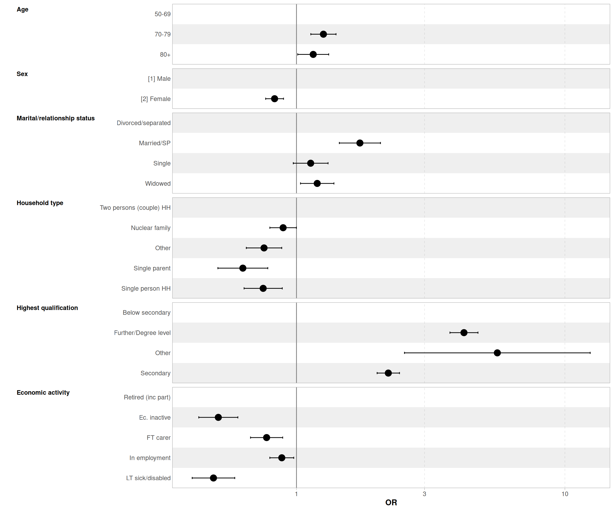
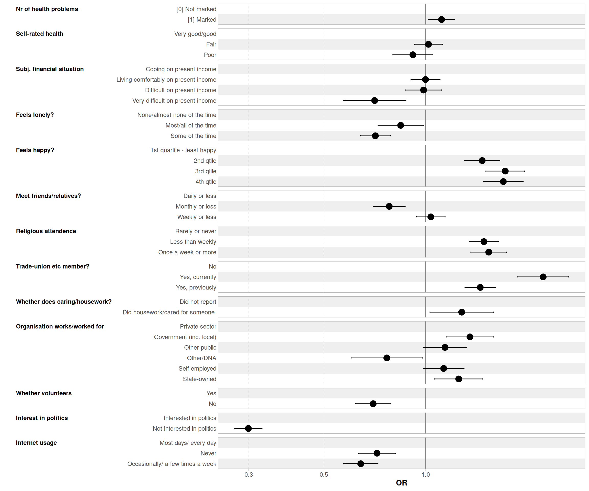

ESS voting pattern study
Introduction
This document presents preliminary descriptive and multivariate analysis of voter turnout at the last national elections among respondents aged 50+ using data from the European Social Survey - Round 11 (2023-24). 1
- Section 1 presents the variables included in the analysis
- Section 2 discusses recoding related issues
- Section 3 includes unweighted and weighted frequency tables of unrecoded, recoded and derived socio-economic (SEV) and independent (IV) variables.
- Section 4 documents unweighted and weighted 2-way contingency tables of SEVs and IVs by turnout at the last national elections, as well as age and sex.
- Section 5 presents additional four way tables of voter turnout by SEVs and IVs broken down by age and sex.
- Section 6 presents the results of four series of stepwise logistic regression models of voting at the last national election.
1. Variables included
| Description | Name | Variable label | Valid responses 2 |
|---|---|---|---|
| Age 2 categories | AgeCat2 | Recoded age, 2 category | 24,129 |
| Age 3 categories | AgeCat3 | NULL | 24,129 |
| Subjective financial situation | hincfel | Feeling about household’s income nowadays | 23,898 |
| Loneliness | fltlnl | Felt lonely, how often past week | 24,009 |
| Sex | gndr | Felt lonely, how often past week | 24,129 |
| Happiness | happy | How happy are you | 24,032 |
| Social life intensity | sclmeet | How often socially meet with friends, relatives or colleagues | 24,078 |
| Religious attendence | rlgatnd | How often attend religious services apart from special occasions | 24,003 |
| Trade union or similar membership | mbtru | Member of trade union or similar organisation | 24,009 |
| Whether doing house- or care work | hswrk | Doing last 7 days: housework, looking after children, others | 24,129 |
| Type of organisation working/worked for | tporgwk | What type of organisation work/worked for | 22,183 |
| Whether volunteered | volunfp | Volunteered for not-for-profit or charitable organisation | 24,069 |
| Whether voter at the last GE | vote | Voted last national election | 23,942 |
| Interest for politics | polintr | How interested in politics | 24,093 |
| Internet usage | netusoft | Internet use, how often | 24,112 |
| Marital/relationship status | maritalb | Legal marital status, post coded | 23,696 |
| Educational level | eisced | Highest level of education, ES - ISCED | 24,068 |
| Self-reported general health V1 | health | Subjective general health | 24,097 |
| Self-reported general health V2 | health2 | NULL | 24,097 |
| High blood pressure | hltprhb | Health problems, last 12 months: high blood pressure | 24,129 |
| Allergies | hltpral | Health problems, last 12 months: allergies | 24,129 |
| Back or neck pain | hltprbn | Health problems, last 12 months: back or neck pain | 24,129 |
| Muscular or joint pain in hand or arm | hltprpa | Health problems, last 12 months: muscular or joint pain in hand or arm | 24,129 |
| Muscular or joint pain in foot or leg | hltprpf | Health problems, last 12 months: muscular or joint pain in foot or leg | 24,129 |
| Stomach or digestion related | hltprsd | Health problems, last 12 months: stomach or digestion related | 24,129 |
| Skin condition related | hltprsc | Health problems, last 12 months: skin condition related | 24,129 |
| Severe headaches | hltprsh | Health problems, last 12 months: severe headaches | 24,129 |
| Diabetes | hltprdi | Health problems, last 12 months: diabetes | 24,129 |
| Number of reported health problems | nrhltpb | NULL | 24,129 |
| Recoded household type | hhdtypb | NULL | 24,129 |
| Occupation, ISCO08 1 digit | isco1 | NULL | 21,765 |
| Economic activity | mnactic | Main activity, last 7 days. All respondents. Post coded | 24,050 |
2. Variables recoding and operationalisation notes
The original dataset includes 45,256 observations, of which 24,129 respondents aged 50 and over.
- Integrated household composition variable
hhdtypbwas constructed using the household grid variablesrshipa*, and household size information. - No information was available on the presence of grandchilddren
- There is no clear variable recording exclusively caring for dependents: it is either amalgamated with housework (
hwrk) or with helping others more broadly:hlpfmly. - Whether respondents had internet connection was approximated using frequency of internet use.
- Marital status was constructed in order to include informal partnership/cohabitation.
- There are no variables measuring difficulties/limitations with daily life activities. A variable was constructed recording the number of health conditions instead.
3. Univariates results
Results are presented as follows, under each tab below:
- Unweighted frequencies and proportions of the original variables, unrecoded
- Weighted frequencies and proportions of the recoded (ie missing/invalid values removed) variables
In the case of derived variables created for the purpose of this analysis 1. and 2. are identical.
Unweighted frequency table of unrecoded vote.f
| Category | Frequency | Percent |
|---|---|---|
| [1] Yes | 19600 | 81.2 |
| [2] No | 3919 | 16.2 |
| [3] Not eligible to vote | 423 | 1.8 |
| [NA] Refusal | 91 | 0.4 |
| [NA] Don’t know | 94 | 0.4 |
| [NA] No answer | 2 | 0.0 |
| Total | 24129 | 100.0 |
Weighted frequency table of recoded vote.fr
| vote.fr | Frequency | Percent |
|---|---|---|
| Did not vote | 4047.541 | 19.8 |
| Voted | 16374.307 | 80.2 |
Unweighted frequency table of unrecoded hincfel.f
| Category | Frequency | Percent |
|---|---|---|
| [1] Living comfortably on present income | 7558 | 31.3 |
| [2] Coping on present income | 10705 | 44.4 |
| [3] Difficult on present income | 4199 | 17.4 |
| [4] Very difficult on present income | 1436 | 6.0 |
| [NA] Don’t know | 45 | 0.2 |
| [NA] Refusal | 179 | 0.7 |
| [NA] No answer | 7 | 0.0 |
| Total | 24129 | 100.0 |
Weighted frequency table of recoded hincfel.fr
| hincfel.fr | Frequency | Percent |
|---|---|---|
| Living comfortably on present income | 7431.1963 | 36.4 |
| Coping on present income | 9618.5066 | 47.1 |
| Difficult on present income | 2721.3501 | 13.3 |
| Very difficult on present income | 647.5568 | 3.2 |
Unweighted frequency table of unrecoded fltlnl.f
| Category | Frequency | Percent |
|---|---|---|
| [1] None or almost none of the time | 15570 | 64.5 |
| [2] Some of the time | 5936 | 24.6 |
| [3] Most of the time | 1696 | 7.0 |
| [4] All or almost all of the time | 807 | 3.3 |
| [NA] Don’t know | 60 | 0.2 |
| [NA] Refusal | 58 | 0.2 |
| [NA] No answer | 2 | 0.0 |
| Total | 24129 | 99.8 |
Weighted frequency table of recoded fltlnl.fr
| fltlnl.fr | Frequency | Percent |
|---|---|---|
| Most/all of the time | 1728.115 | 8.4 |
| None/almost none of the time | 14358.139 | 70.0 |
| Some of the time | 4437.438 | 21.6 |
Unweighted frequency table of unrecoded gndr.f
| Category | Frequency | Percent |
|---|---|---|
| [1] Male | 11120 | 46.1 |
| [2] Female | 13009 | 53.9 |
| Total | 24129 | 100.0 |
Weighted frequency table of recoded gndr.fr
| gndr.fr | Frequency | Percent |
|---|---|---|
| [1] Male | 9723.244 | 47.1 |
| [2] Female | 10898.975 | 52.9 |
Unweighted frequency table of unrecoded happy.f
| Category | Frequency | Percent |
|---|---|---|
| Extremely unhappy | 150 | 0.6 |
| 1 | 105 | 0.4 |
| 2 | 300 | 1.2 |
| 3 | 590 | 2.4 |
| 4 | 809 | 3.4 |
| 5 | 2609 | 10.8 |
| 6 | 2294 | 9.5 |
| 7 | 4527 | 18.8 |
| 8 | 6485 | 26.9 |
| 9 | 3672 | 15.2 |
| Extremely happy | 2491 | 10.3 |
| Don’t know | 54 | 0.2 |
| Refusal | 37 | 0.2 |
| No answer | 6 | 0.0 |
| Total | 24129 | 99.9 |
Weighted frequency table of recoded happy.fr
| happy.fr | Frequency | Percent |
|---|---|---|
| 1st quartile - least happy | 3216.864 | 15.7 |
| 2nd qtile | 5879.069 | 28.6 |
| 3rd qtile | 5775.541 | 28.1 |
| 4th qtile | 5676.645 | 27.6 |
Unweighted frequency table of unrecoded sclmeet.f
| Category | Frequency | Percent |
|---|---|---|
| [1] Never | 654 | 2.7 |
| [2] Less than once a month | 2945 | 12.2 |
| [3] Once a month | 2550 | 10.6 |
| [4] Several times a month | 5221 | 21.6 |
| [5] Once a week | 4116 | 17.1 |
| [6] Several times a week | 5849 | 24.2 |
| [7] Every day | 2743 | 11.4 |
| [NA] Refusal | 24 | 0.1 |
| [NA] Don’t know | 25 | 0.1 |
| [NA] No answer | 2 | 0.0 |
| Total | 24129 | 100.0 |
Weighted frequency table of recoded sclmeet.fr
| sclmeet.fr | Frequency | Percent |
|---|---|---|
| Daily or less | 7617.620 | 37.0 |
| Monthly or less | 4718.833 | 22.9 |
| Weekly or less | 8233.119 | 40.0 |
Unweighted frequency table of unrecoded rlgatnd.f
| Category | Frequency | Percent |
|---|---|---|
| [1] Every day | 244 | 1.0 |
| [2] More than once a week | 906 | 3.8 |
| [3] Once a week | 3218 | 13.3 |
| [4] At least once a month | 2885 | 12.0 |
| [5] Only on special holy days | 5244 | 21.7 |
| [6] Less often | 4577 | 19.0 |
| [7] Never | 6929 | 28.7 |
| [NA] Refusal | 72 | 0.3 |
| [NA] Don’t know | 53 | 0.2 |
| [NA] No answer | 1 | 0.0 |
| Total | 24129 | 100.0 |
Weighted frequency table of recoded rlgatnd.fr
| rlgatnd.fr | Frequency | Percent |
|---|---|---|
| Less than weekly | 5531.952 | 27.0 |
| Once a week or more | 3682.659 | 18.0 |
| Rarely or never | 11286.357 | 55.1 |
Unweighted frequency table of unrecoded mbtru.f
| Category | Frequency | Percent |
|---|---|---|
| [1] Yes, currently | 3115 | 12.9 |
| [2] Yes, previously | 7138 | 29.6 |
| [3] No | 13756 | 57.0 |
| [NA] Refusal | 76 | 0.3 |
| [NA] Don’t know | 38 | 0.2 |
| [NA] No answer | 6 | 0.0 |
| Total | 24129 | 100.0 |
Weighted frequency table of recoded mbtru.fr
| mbtru.fr | Frequency | Percent |
|---|---|---|
| Yes, currently | 2110.847 | 10.3 |
| Yes, previously | 5069.638 | 24.7 |
| No | 13338.838 | 65.0 |
Unweighted frequency table of unrecoded hswrk.f
| Category | Frequency | Percent |
|---|---|---|
| [0] Not marked | 21409 | 88.7 |
| [1] Marked | 2720 | 11.3 |
| Total | 24129 | 100.0 |
Weighted frequency table of recoded hswrk.fr
| hswrk.fr | Frequency | Percent |
|---|---|---|
| Did housework/cared for someone | 2524.144 | 12.2 |
| Did not report | 18098.074 | 87.8 |
Unweighted frequency table of unrecoded tporgwk.f
| Category | Frequency | Percent |
|---|---|---|
| [1] Central or local government | 2355 | 9.8 |
| [2] Other public sector (such as education and health) | 3074 | 12.7 |
| [3] A state owned enterprise | 2520 | 10.4 |
| [4] A private firm | 11455 | 47.5 |
| [5] Self employed | 2297 | 9.5 |
| [6] Other | 482 | 2.0 |
| [NA] Not applicable | 1799 | 7.5 |
| [NA] Refusal | 63 | 0.3 |
| [NA] Don’t know | 59 | 0.2 |
| [NA] No answer | 25 | 0.1 |
| Total | 24129 | 100.0 |
Weighted frequency table of recoded tporgwk.fr
| tporgwk.fr | Frequency | Percent |
|---|---|---|
| Government (inc. local) | 1902.9773 | 10.0 |
| Other public | 2416.0868 | 12.7 |
| Other/DNA | 549.3614 | 2.9 |
| Private sector | 10736.9596 | 56.6 |
| Self-employed | 1944.9368 | 10.2 |
| State-owned | 1428.1969 | 7.5 |
Unweighted frequency table of unrecoded volunfp.f
| Category | Frequency | Percent |
|---|---|---|
| [1] Yes | 4373 | 18.1 |
| [2] No | 19696 | 81.6 |
| [NA] Don’t know | 27 | 0.1 |
| [NA] Refusal | 31 | 0.1 |
| [NA] No answer | 2 | 0.0 |
| Total | 24129 | 99.9 |
Weighted frequency table of recoded volunfp.fr
| volunfp.fr | Frequency | Percent |
|---|---|---|
| Yes | 4232.651 | 20.6 |
| No | 16362.290 | 79.4 |
Unweighted frequency table of unrecoded polintr.f
| Category | Frequency | Percent |
|---|---|---|
| [1] Very interested | 3378 | 14.0 |
| [2] Quite interested | 8571 | 35.5 |
| [3] Hardly interested | 7710 | 32.0 |
| [4] Not at all interested | 4434 | 18.4 |
| [NA] Don’t know | 15 | 0.1 |
| [NA] Refusal | 18 | 0.1 |
| [NA] No answer | 3 | 0.0 |
| Total | 24129 | 100.1 |
Weighted frequency table of recoded polintr.fr
| polintr.fr | Frequency | Percent |
|---|---|---|
| Interested in politics | 10472.26 | 50.9 |
| Not interested in politics | 10118.52 | 49.1 |
Unweighted frequency table of unrecoded netusoft.f
| Category | Frequency | Percent |
|---|---|---|
| [1] Never | 5416 | 22.4 |
| [2] Only occasionally | 1789 | 7.4 |
| [3] A few times a week | 1519 | 6.3 |
| [4] Most days | 2278 | 9.4 |
| [5] Every day | 13110 | 54.3 |
| [NA] Don’t know | 8 | 0.0 |
| [NA] Refusal | 4 | 0.0 |
| [NA] No answer | 5 | 0.0 |
| Total | 24129 | 99.8 |
Weighted frequency table of recoded netusoft.fr
| netusoft.fr | Frequency | Percent |
|---|---|---|
| Most days/ every day | 13457.486 | 65.3 |
| Never | 4265.026 | 20.7 |
| Occasionally/ a few times a week | 2894.172 | 14.0 |
Unweighted frequency table of unrecoded maritalb.f
| Category | Frequency | Percent |
|---|---|---|
| [1] Legally married | 14083 | 58.4 |
| [2] In a legally registered civil union | 175 | 0.7 |
| [3] Legally separated | 186 | 0.8 |
| [4] Legally divorced/Civil union dissolved | 2944 | 12.2 |
| [5] Widowed/Civil partner died | 3987 | 16.5 |
| [6] None of these (NEVER married or in legally registered civil union) | 2297 | 9.5 |
| [NA] Don’t know | 20 | 0.1 |
| [NA] Refusal | 103 | 0.4 |
| [NA] No answer | 334 | 1.4 |
| Total | 24129 | 100.0 |
Weighted frequency table of recoded maritalb.fr
| maritalb.fr | Frequency | Percent |
|---|---|---|
| Divorced/separated | 1973.617 | 9.6 |
| Married/SP | 13834.873 | 67.5 |
| Single | 1939.683 | 9.5 |
| Widowed | 2757.190 | 13.4 |
Unweighted frequency table of unrecoded eisced.f
| Category | Frequency | Percent |
|---|---|---|
| [1] ES-ISCED I , less than lower secondary | 2545 | 10.5 |
| [2] ES-ISCED II, lower secondary | 4147 | 17.2 |
| [3] ES-ISCED IIIb, lower tier upper secondary | 4270 | 17.7 |
| [4] ES-ISCED IIIa, upper tier upper secondary | 5227 | 21.7 |
| [5] ES-ISCED IV, advanced vocational, sub-degree | 2801 | 11.6 |
| [6] ES-ISCED V1, lower tertiary education, BA level | 2193 | 9.1 |
| [7] ES-ISCED V2, higher tertiary education, >= MA level | 2811 | 11.6 |
| [55] Other | 74 | 0.3 |
| [NA] Don’t know | 20 | 0.1 |
| [NA] Refusal | 25 | 0.1 |
| [NA] No answer | 16 | 0.1 |
| Total | 24129 | 100.0 |
Weighted frequency table of recoded eisced.fr
| eisced.fr | Frequency | Percent |
|---|---|---|
| Below secondary | 2973.1118 | 14.5 |
| Further/Degree level | 5916.2152 | 28.8 |
| Other | 85.8428 | 0.4 |
| Secondary | 11548.2970 | 56.3 |
Unweighted frequency table of unrecoded health.f
| Category | Frequency | Percent |
|---|---|---|
| [1] Very good | 3251 | 13.5 |
| [2] Good | 9820 | 40.7 |
| [3] Fair | 8286 | 34.3 |
| [4] Bad | 2293 | 9.5 |
| [5] Very bad | 447 | 1.9 |
| [NA] Refusal | 17 | 0.1 |
| [NA] Don’t know | 14 | 0.1 |
| [NA] No answer | 1 | 0.0 |
| Total | 24129 | 100.1 |
Weighted frequency table of recoded health.fr
| health.fr | Frequency | Percent |
|---|---|---|
| Fair | 7104.867 | 34.5 |
| Poor | 2515.765 | 12.2 |
| Very good/good | 10969.897 | 53.3 |
Unweighted frequency table of unrecoded hltprhb.f
| Category | Frequency | Percent |
|---|---|---|
| [0] Not marked | 15801 | 65.5 |
| [1] Marked | 8328 | 34.5 |
| Total | 24129 | 100.0 |
Weighted frequency table of recoded hltprhb.fr
| hltprhb.fr | Frequency | Percent |
|---|---|---|
| [0] Not marked | 13791.291 | 66.9 |
| [1] Marked | 6830.927 | 33.1 |
Unweighted frequency table of unrecoded hltpral.f
| Category | Frequency | Percent |
|---|---|---|
| [0] Not marked | 21901 | 90.8 |
| [1] Marked | 2228 | 9.2 |
| Total | 24129 | 100.0 |
Weighted frequency table of recoded hltpral.fr
| hltpral.fr | Frequency | Percent |
|---|---|---|
| [0] Not marked | 18545.751 | 89.9 |
| [1] Marked | 2076.468 | 10.1 |
Unweighted frequency table of unrecoded hltprbn.f
| Category | Frequency | Percent |
|---|---|---|
| [0] Not marked | 15493 | 64.2 |
| [1] Marked | 8636 | 35.8 |
| Total | 24129 | 100.0 |
Weighted frequency table of recoded hltprbn.fr
| hltprbn.fr | Frequency | Percent |
|---|---|---|
| [0] Not marked | 12882.584 | 62.5 |
| [1] Marked | 7739.634 | 37.5 |
Unweighted frequency table of unrecoded hltprpa.f
| Category | Frequency | Percent |
|---|---|---|
| [0] Not marked | 18107 | 75 |
| [1] Marked | 6022 | 25 |
| Total | 24129 | 100 |
Weighted frequency table of recoded hltprpa.fr
| hltprpa.fr | Frequency | Percent |
|---|---|---|
| [0] Not marked | 14908.16 | 72.3 |
| [1] Marked | 5714.06 | 27.7 |
Unweighted frequency table of unrecoded hltprpf.f
| Category | Frequency | Percent |
|---|---|---|
| [0] Not marked | 17360 | 71.9 |
| [1] Marked | 6769 | 28.1 |
| Total | 24129 | 100.0 |
Weighted frequency table of recoded hltprpf.fr
| hltprpf.fr | Frequency | Percent |
|---|---|---|
| [0] Not marked | 14350.00 | 69.6 |
| [1] Marked | 6272.22 | 30.4 |
Unweighted frequency table of unrecoded hltprsd.f
| Category | Frequency | Percent |
|---|---|---|
| [0] Not marked | 20638 | 85.5 |
| [1] Marked | 3491 | 14.5 |
| Total | 24129 | 100.0 |
Weighted frequency table of recoded hltprsd.fr
| hltprsd.fr | Frequency | Percent |
|---|---|---|
| [0] Not marked | 17340.865 | 84.1 |
| [1] Marked | 3281.353 | 15.9 |
Unweighted frequency table of unrecoded hltprsc.f
| Category | Frequency | Percent |
|---|---|---|
| [0] Not marked | 22432 | 93 |
| [1] Marked | 1697 | 7 |
| Total | 24129 | 100 |
Weighted frequency table of recoded hltprsc.fr
| hltprsc.fr | Frequency | Percent |
|---|---|---|
| [0] Not marked | 18875.52 | 91.5 |
| [1] Marked | 1746.70 | 8.5 |
Unweighted frequency table of unrecoded hltprsh.f
| Category | Frequency | Percent |
|---|---|---|
| [0] Not marked | 22040 | 91.3 |
| [1] Marked | 2089 | 8.7 |
| Total | 24129 | 100.0 |
Weighted frequency table of recoded hltprsh.fr
| hltprsh.fr | Frequency | Percent |
|---|---|---|
| [0] Not marked | 18618.105 | 90.3 |
| [1] Marked | 2004.113 | 9.7 |
Unweighted frequency table of unrecoded hltprdi.f
| Category | Frequency | Percent |
|---|---|---|
| [0] Not marked | 21530 | 89.2 |
| [1] Marked | 2599 | 10.8 |
| Total | 24129 | 100.0 |
Weighted frequency table of recoded hltprdi.fr
| hltprdi.fr | Frequency | Percent |
|---|---|---|
| [0] Not marked | 18313.572 | 88.8 |
| [1] Marked | 2308.646 | 11.2 |
Unweighted frequency table of unrecoded mnactic.f
| Category | Frequency | Percent |
|---|---|---|
| [1] Paid work | 8468 | 35.1 |
| [2] Education | 33 | 0.1 |
| [3] Unemployed, looking for job | 358 | 1.5 |
| [4] Unemployed, not looking for job | 382 | 1.6 |
| [5] Permanently sick or disabled | 708 | 2.9 |
| [6] Retired | 12283 | 50.9 |
| [7] Community or military service | 8 | 0.0 |
| [8] Housework, looking after children, others | 1558 | 6.5 |
| [9] Other | 252 | 1.0 |
| [NA] Refusal | 18 | 0.1 |
| [NA] Don’t know | 22 | 0.1 |
| [NA] No answer | 39 | 0.2 |
| Total | 24129 | 100.0 |
Weighted frequency table of recoded mnactic.fr
| mnactic.fr | Frequency | Percent |
|---|---|---|
| Ec. inactive | 841.9802 | 4.1 |
| FT carer | 1539.2846 | 7.5 |
| In employment | 7269.2214 | 35.4 |
| LT sick/disabled | 662.0021 | 3.2 |
| Retired (inc part) | 10235.6518 | 49.8 |
Unweighted frequency table of unrecoded cntry.f
| Category | Frequency | Percent |
|---|---|---|
| AT | 1460 | 6.1 |
| BE | 803 | 3.3 |
| BG | 1241 | 5.1 |
| CH | 662 | 2.7 |
| CY | 400 | 1.7 |
| DE | 1265 | 5.2 |
| ES | 910 | 3.8 |
| FI | 872 | 3.6 |
| FR | 917 | 3.8 |
| GB | 897 | 3.7 |
| GR | 1425 | 5.9 |
| HR | 837 | 3.5 |
| HU | 1036 | 4.3 |
| IE | 1132 | 4.7 |
| IS | 422 | 1.7 |
| IT | 1546 | 6.4 |
| LT | 691 | 2.9 |
| LV | 785 | 3.3 |
| ME | 769 | 3.2 |
| NL | 886 | 3.7 |
| NO | 620 | 2.6 |
| PL | 665 | 2.8 |
| PT | 786 | 3.3 |
| RS | 851 | 3.5 |
| SE | 724 | 3.0 |
| SI | 637 | 2.6 |
| SK | 890 | 3.7 |
| Total | 24129 | 100.1 |
Weighted frequency table of recoded cntry.fr
| cntry.fr | Frequency | Percent |
|---|---|---|
| AT | 365.729011 | 1.8 |
| BE | 450.170060 | 2.2 |
| BG | 271.045010 | 1.3 |
| CH | 336.343037 | 1.6 |
| CY | 39.642416 | 0.2 |
| DE | 3551.949516 | 17.2 |
| ES | 1926.281579 | 9.3 |
| FI | 230.931872 | 1.1 |
| FR | 2683.935889 | 13.0 |
| GB | 2418.219628 | 11.7 |
| GR | 454.474139 | 2.2 |
| HR | 186.163414 | 0.9 |
| HU | 368.071134 | 1.8 |
| IE | 163.498808 | 0.8 |
| IS | 7.440256 | 0.0 |
| IT | 2971.946802 | 14.4 |
| LT | 116.102745 | 0.6 |
| LV | 76.485507 | 0.4 |
| ME | 16.989650 | 0.1 |
| NL | 704.302971 | 3.4 |
| NO | 195.248610 | 0.9 |
| PL | 1668.464276 | 8.1 |
| PT | 452.591342 | 2.2 |
| RS | 281.504756 | 1.4 |
| SE | 404.727517 | 2.0 |
| SI | 89.257884 | 0.4 |
| SK | 190.700334 | 0.9 |
Unweighted frequency table of unrecoded AgeCat2.f
| Category | Frequency | Percent |
|---|---|---|
| 50-69 | 15079 | 62.5 |
| 70+ | 9050 | 37.5 |
| Total | 24129 | 100.0 |
Weighted frequency table of recoded AgeCat2.fr
| AgeCat2.fr | Frequency | Percent |
|---|---|---|
| 50-69 | 12996.100 | 63 |
| 70+ | 7626.118 | 37 |
Unweighted frequency table of unrecoded AgeCat3.f
| Category | Frequency | Percent |
|---|---|---|
| 50-69 | 15079 | 62.5 |
| 70-79 | 6209 | 25.7 |
| 80+ | 2841 | 11.8 |
| Total | 24129 | 100.0 |
Weighted frequency table of recoded AgeCat3.fr
| AgeCat3.fr | Frequency | Percent |
|---|---|---|
| 50-69 | 12996.100 | 63.0 |
| 70-79 | 5072.190 | 24.6 |
| 80+ | 2553.929 | 12.4 |
Unweighted frequency table of unrecoded health2.f
| Category | Frequency | Percent |
|---|---|---|
| [1] Very good | 3251 | 13.5 |
| [2] Good | 9820 | 40.7 |
| [3] Fair | 8286 | 34.3 |
| [4] Bad | 2293 | 9.5 |
| [5] Very bad | 447 | 1.9 |
| [NA] Refusal | 17 | 0.1 |
| [NA] Don’t know | 14 | 0.1 |
| [NA] No answer | 1 | 0.0 |
| Total | 24129 | 100.1 |
Weighted frequency table of recoded health2.fr
| health2.fr | Frequency | Percent |
|---|---|---|
| Bad or very bad | 2515.765 | 12.2 |
| Not bad | 18074.764 | 87.8 |
Unweighted frequency table of unrecoded nrhltpb.f
| Category | Frequency | Percent |
|---|---|---|
| 0 | 5682 | 23.5 |
| 1 | 5542 | 23.0 |
| 2 | 4910 | 20.3 |
| 3 | 3403 | 14.1 |
| 4 | 2113 | 8.8 |
| 5 | 1248 | 5.2 |
| 6 | 686 | 2.8 |
| 7 | 304 | 1.3 |
| 8 | 142 | 0.6 |
| 9 | 65 | 0.3 |
| 10 | 19 | 0.1 |
| 11 | 15 | 0.1 |
| Total | 24129 | 100.1 |
Weighted frequency table of recoded nrhltpb.fr
| nrhltpb.fr | Frequency | Percent |
|---|---|---|
| 3-4 | 5068.123 | 24.6 |
| 5+ | 2198.946 | 10.7 |
| None | 4378.083 | 21.2 |
| One | 4580.783 | 22.2 |
| Two | 4396.284 | 21.3 |
Unweighted frequency table of unrecoded hhdtypb.f
| Category | Frequency | Percent |
|---|---|---|
| Nuclear family | 3553 | 14.7 |
| Other | 1843 | 7.6 |
| Single parent | 1011 | 4.2 |
| Single person HH | 7224 | 29.9 |
| Two persons (couple) HH | 10498 | 43.5 |
| Total | 24129 | 99.9 |
Weighted frequency table of recoded hhdtypb.fr
| hhdtypb.fr | Frequency | Percent |
|---|---|---|
| Nuclear family | 3462.9043 | 16.8 |
| Other | 1648.5286 | 8.0 |
| Single parent | 858.2725 | 4.2 |
| Single person HH | 5128.3098 | 24.9 |
| Two persons (couple) HH | 9524.2029 | 46.2 |
Unweighted frequency table of unrecoded isco1.f
| Category | Frequency | Percent |
|---|---|---|
| 0-Armed Forces | 89 | 0.4 |
| 1-Managers | 1865 | 7.7 |
| 2-Professionals | 3950 | 16.4 |
| 3-Technicians and Associate Professionals | 2735 | 11.3 |
| 4-Clerical Support Workers | 1963 | 8.1 |
| 5-Service and sales | 3591 | 14.9 |
| 6-Skilled Agricultural, Forestry and Fishery Workers | 786 | 3.3 |
| 7-Craft and Related Trades Workers | 2751 | 11.4 |
| 8-Plant and Machine Operators, and Assemblers | 1739 | 7.2 |
| 9-Elementary Occupations | 2385 | 9.9 |
| NA | 2275 | 9.4 |
| Total | 24129 | 100.0 |
Weighted frequency table of recoded isco1.fr
| isco1.fr | Frequency | Percent |
|---|---|---|
| 1-Managers | 1707.359 | 9.1 |
| 2-Professionals | 3055.688 | 16.3 |
| 3-Technicians and Associate Professionals | 2757.312 | 14.7 |
| 4+5-Clerical Support, Service and sales | 4676.194 | 25.0 |
| 6+7-Skilled Agric., forest., fishery, craft and related | 2868.708 | 15.3 |
| Elementary Occupations | 2044.544 | 10.9 |
| Plant and Machine Operators, and Assemblers | 1584.016 | 8.5 |
4. Bivariates results
This section contains for each variable used in the study, the following contingency tables:
- With voter turnout at the last national elections
- With sex
- With age, two and three categories
All contingency tables were computed with weighted data and include \(\chi^2\) test of independence.
4.1. Voter turnout at the last national elections
Whether voted at the last NE by Subjective financial situation(hincfel)
| Living comfortably on present income | Coping on present income | Difficult on present income | Very difficult on present income | |||||
|---|---|---|---|---|---|---|---|---|
| Freq | % | Freq | % | Freq | % | Freq | % | |
| Did not vote | 967.9 | 13.1 | 1933.8 | 20.33 | 814.2 | 30.34 | 264.6 | 41.22 |
| Voted | 6420.3 | 86.9 | 7580.5 | 79.67 | 1869.8 | 69.66 | 377.5 | 58.78 |
| Total | 7388.2 | 100 | 9514.3 | 100 | 2684 | 100 | 642.1 | 100 |
[1] “Pearson’s X^2: Rao & Scott adjustment”
F ndf X-squared 67.891 2.889 0.000
Whether voted at the last NE by Loneliness(fltlnl)
| Most/all of the time | None/almost none of the time | Some of the time | ||||
|---|---|---|---|---|---|---|
| Freq | % | Freq | % | Freq | % | |
| Did not vote | 589.5 | 34.54 | 2214.4 | 15.54 | 1222.9 | 27.97 |
| Voted | 1117.4 | 65.46 | 12035.2 | 84.46 | 3149.7 | 72.03 |
| Total | 1706.9 | 100 | 14249.6 | 100 | 4372.6 | 100 |
[1] “Pearson’s X^2: Rao & Scott adjustment”
F ndf X-squared 107.146 1.998 0.000
Whether voted at the last NE by Sex(gndr)
| [1] Male | [2] Female | |||
|---|---|---|---|---|
| Freq | % | Freq | % | |
| Did not vote | 1654.8 | 17.17 | 2392.7 | 22.19 |
| Voted | 7984.3 | 82.83 | 8390 | 77.81 |
| Total | 9639.1 | 100 | 10782.7 | 100 |
[1] “Pearson’s X^2: Rao & Scott adjustment”
F ndf X-squared 26.538 1.000 0.000
Whether voted at the last NE by Happiness(happy)
| 1st quartile - least happy | 2nd qtile | 3rd qtile | 4th qtile | |||||
|---|---|---|---|---|---|---|---|---|
| Freq | % | Freq | % | Freq | % | Freq | % | |
| Did not vote | 1143.7 | 35.98 | 1231.2 | 21.21 | 841 | 14.69 | 808.6 | 14.32 |
| Voted | 2035.4 | 64.02 | 4573.5 | 78.79 | 4882.8 | 85.31 | 4836.8 | 85.68 |
| Total | 3179.1 | 100 | 5804.7 | 100 | 5723.8 | 100 | 5645.4 | 100 |
[1] “Pearson’s X^2: Rao & Scott adjustment”
F ndf X-squared 88.303 2.964 0.000
Whether voted at the last NE by Religious attendence(rlgatnd)
| Less than weekly | Once a week or more | Rarely or never | ||||
|---|---|---|---|---|---|---|
| Freq | % | Freq | % | Freq | % | |
| Did not vote | 961.9 | 17.54 | 763.9 | 20.94 | 2301.4 | 20.58 |
| Voted | 4522.2 | 82.46 | 2884.1 | 79.06 | 8882.1 | 79.42 |
| Total | 5484.1 | 100 | 3648 | 100 | 11183.5 | 100 |
[1] “Pearson’s X^2: Rao & Scott adjustment”
F ndf X-squared
4.152 1.943 0.017 Whether voted at the last NE by Trade union or similar membership(mbtru)
| Yes, currently | Yes, previously | No | ||||
|---|---|---|---|---|---|---|
| Freq | % | Freq | % | Freq | % | |
| Did not vote | 188.8 | 8.99 | 717.8 | 14.24 | 3126.6 | 23.71 |
| Voted | 1911.5 | 91.01 | 4324.4 | 85.76 | 10060.1 | 76.29 |
| Total | 2100.3 | 100 | 5042.2 | 100 | 13186.7 | 100 |
[1] “Pearson’s X^2: Rao & Scott adjustment”
F ndf X-squared 58.422 1.953 0.000
Whether voted at the last NE by Whether doing house- or care work(hswrk)
| Did housework/cared for someone | Did not report | |||
|---|---|---|---|---|
| Freq | % | Freq | % | |
| Did not vote | 497.2 | 19.81 | 3550.4 | 19.82 |
| Voted | 2012.3 | 80.19 | 14362 | 80.18 |
| Total | 2509.5 | 100 | 17912.4 | 100 |
[1] “Pearson’s X^2: Rao & Scott adjustment”
F ndf X-squared
0.000 1.000 0.995 Whether voted at the last NE by Type of organisation working/worked for(tporgwk)
| Government (inc. local) | Other public | Other/DNA | Private sector | Self-employed | State-owned | |||||||
|---|---|---|---|---|---|---|---|---|---|---|---|---|
| Freq | % | Freq | % | Freq | % | Freq | % | Freq | % | Freq | % | |
| Did not vote | 239.7 | 12.68 | 306.8 | 12.85 | 119.5 | 22.04 | 2235.1 | 20.99 | 358.7 | 18.56 | 243 | 17.16 |
| Voted | 1650.8 | 87.32 | 2080.3 | 87.15 | 422.6 | 77.96 | 8411.9 | 79.01 | 1574.3 | 81.44 | 1173.1 | 82.84 |
| Total | 1890.5 | 100 | 2387.1 | 100 | 542.1 | 100 | 10647 | 100 | 1933 | 100 | 1416.1 | 100 |
[1] “Pearson’s X^2: Rao & Scott adjustment”
F ndf X-squared 10.895 4.913 0.000
Whether voted at the last NE by Whether volunteered(volunfp)
| Yes | No | |||
|---|---|---|---|---|
| Freq | % | Freq | % | |
| Did not vote | 444.1 | 10.53 | 3601.2 | 22.26 |
| Voted | 3772.8 | 89.47 | 12579.1 | 77.74 |
| Total | 4216.9 | 100 | 16180.3 | 100 |
[1] “Pearson’s X^2: Rao & Scott adjustment”
F ndf X-squared 105.406 1.000 0.000
Whether voted at the last NE by Interest for politics(polintr)
| Interested in politics | Not interested in politics | |||
|---|---|---|---|---|
| Freq | % | Freq | % | |
| Did not vote | 909.3 | 8.72 | 3130 | 31.41 |
| Voted | 9515.5 | 91.28 | 6836.2 | 68.59 |
| Total | 10424.8 | 100 | 9966.2 | 100 |
[1] “Pearson’s X^2: Rao & Scott adjustment”
F ndf X-squared 627.623 1.000 0.000
Whether voted at the last NE by Internet usage(netusoft)
| Most days/ every day | Never | Occasionally/ a few times a week | ||||
|---|---|---|---|---|---|---|
| Freq | % | Freq | % | Freq | % | |
| Did not vote | 2057.9 | 15.41 | 1241.6 | 29.45 | 747.4 | 26.24 |
| Voted | 11293.1 | 84.59 | 2974.9 | 70.55 | 2101.5 | 73.76 |
| Total | 13351 | 100 | 4216.5 | 100 | 2848.9 | 100 |
[1] “Pearson’s X^2: Rao & Scott adjustment”
F ndf X-squared 79.569 1.987 0.000
Whether voted at the last NE by Marital/relationship status(maritalb)
| Divorced/separated | Married/SP | Single | Widowed | |||||
|---|---|---|---|---|---|---|---|---|
| Freq | % | Freq | % | Freq | % | Freq | % | |
| Did not vote | 587 | 29.94 | 2124.3 | 15.5 | 508.6 | 26.56 | 790.4 | 28.93 |
| Voted | 1373.3 | 70.06 | 11579.5 | 84.5 | 1406 | 73.44 | 1941.5 | 71.07 |
| Total | 1960.3 | 100 | 13703.8 | 100 | 1914.6 | 100 | 2731.9 | 100 |
[1] “Pearson’s X^2: Rao & Scott adjustment”
F ndf X-squared 56.801 2.988 0.000
Whether voted at the last NE by Educational level(eisced)
| Below secondary | Further/Degree level | Other | Secondary | |||||
|---|---|---|---|---|---|---|---|---|
| Freq | % | Freq | % | Freq | % | Freq | % | |
| Did not vote | 1034.6 | 35.35 | 679.3 | 11.54 | 7.9 | 9.17 | 2294.9 | 20.08 |
| Voted | 1892.4 | 64.65 | 5207 | 88.46 | 78 | 90.83 | 9131 | 79.92 |
| Total | 2927 | 100 | 5886.3 | 100 | 85.9 | 100 | 11425.9 | 100 |
[1] “Pearson’s X^2: Rao & Scott adjustment”
F ndf X-squared 102.238 2.829 0.000
Whether voted at the last NE by Self-reported general health V1(health)
| Fair | Poor | Very good/good | ||||
|---|---|---|---|---|---|---|
| Freq | % | Freq | % | Freq | % | |
| Did not vote | 1501.7 | 21.39 | 796.2 | 31.94 | 1748.9 | 16.07 |
| Voted | 5518.8 | 78.61 | 1696.8 | 68.06 | 9130.9 | 83.93 |
| Total | 7020.5 | 100 | 2493 | 100 | 10879.8 | 100 |
[1] “Pearson’s X^2: Rao & Scott adjustment”
F ndf X-squared 56.075 1.938 0.000
Whether voted at the last NE by High blood pressure(hltprhb)
| [0] Not marked | [1] Marked | |||
|---|---|---|---|---|
| Freq | % | Freq | % | |
| Did not vote | 2732.9 | 20.05 | 1314.7 | 19.36 |
| Voted | 10898.8 | 79.95 | 5475.5 | 80.64 |
| Total | 13631.7 | 100 | 6790.2 | 100 |
[1] “Pearson’s X^2: Rao & Scott adjustment”
F ndf X-squared
0.414 1.000 0.520 Whether voted at the last NE by Allergies(hltpral)
| [0] Not marked | [1] Marked | |||
|---|---|---|---|---|
| Freq | % | Freq | % | |
| Did not vote | 3624.3 | 19.74 | 423.2 | 20.57 |
| Voted | 14739.5 | 80.26 | 1634.8 | 79.43 |
| Total | 18363.8 | 100 | 2058 | 100 |
[1] “Pearson’s X^2: Rao & Scott adjustment”
F ndf X-squared
0.249 1.000 0.618 Whether voted at the last NE by Back or neck pain(hltprbn)
| [0] Not marked | [1] Marked | |||
|---|---|---|---|---|
| Freq | % | Freq | % | |
| Did not vote | 2584.4 | 20.27 | 1463.1 | 19.07 |
| Voted | 10164.9 | 79.73 | 6209.4 | 80.93 |
| Total | 12749.3 | 100 | 7672.5 | 100 |
[1] “Pearson’s X^2: Rao & Scott adjustment”
F ndf X-squared
1.333 1.000 0.248 Whether voted at the last NE by Muscular or joint pain in hand or arm(hltprpa)
| [0] Not marked | [1] Marked | |||
|---|---|---|---|---|
| Freq | % | Freq | % | |
| Did not vote | 2822.3 | 19.13 | 1225.2 | 21.62 |
| Voted | 11932.3 | 80.87 | 4442 | 78.38 |
| Total | 14754.6 | 100 | 5667.2 | 100 |
[1] “Pearson’s X^2: Rao & Scott adjustment”
F ndf X-squared
4.752 1.000 0.029 Whether voted at the last NE by Muscular or joint pain in foot or leg(hltprpf)
| [0] Not marked | [1] Marked | |||
|---|---|---|---|---|
| Freq | % | Freq | % | |
| Did not vote | 2761.8 | 19.46 | 1285.7 | 20.63 |
| Voted | 11426.8 | 80.54 | 4947.5 | 79.37 |
| Total | 14188.6 | 100 | 6233.2 | 100 |
[1] “Pearson’s X^2: Rao & Scott adjustment”
F ndf X-squared
1.104 1.000 0.293 Whether voted at the last NE by Severe headaches(hltprsh)
| [0] Not marked | [1] Marked | |||
|---|---|---|---|---|
| Freq | % | Freq | % | |
| Did not vote | 3573.5 | 19.39 | 474.1 | 23.77 |
| Voted | 14853.9 | 80.61 | 1520.4 | 76.23 |
| Total | 18427.4 | 100 | 1994.5 | 100 |
[1] “Pearson’s X^2: Rao & Scott adjustment”
F ndf X-squared
7.103 1.000 0.008 Whether voted at the last NE by Diabetes(hltprdi)
| [0] Not marked | [1] Marked | |||
|---|---|---|---|---|
| Freq | % | Freq | % | |
| Did not vote | 3497.7 | 19.28 | 549.8 | 24.07 |
| Voted | 14639.5 | 80.72 | 1734.9 | 75.93 |
| Total | 18137.2 | 100 | 2284.7 | 100 |
[1] “Pearson’s X^2: Rao & Scott adjustment”
F ndf X-squared
7.728 1.000 0.005 Whether voted at the last NE by Economic activity(mnactic)
| Ec. inactive | FT carer | In employment | LT sick/disabled | Retired (inc part) | ||||||
|---|---|---|---|---|---|---|---|---|---|---|
| Freq | % | Freq | % | Freq | % | Freq | % | Freq | % | |
| Did not vote | 282.1 | 34.06 | 377 | 24.71 | 1313.8 | 18.23 | 238.1 | 36.28 | 1812.4 | 17.88 |
| Voted | 546.2 | 65.94 | 1148.8 | 75.29 | 5892.9 | 81.77 | 418.2 | 63.72 | 8321.9 | 82.12 |
| Total | 828.3 | 100 | 1525.8 | 100 | 7206.7 | 100 | 656.3 | 100 | 10134.3 | 100 |
[1] “Pearson’s X^2: Rao & Scott adjustment”
F ndf X-squared 19.664 3.647 0.000
Whether voted at the last NE by Country(cntry)
| AT | BE | BG | CH | CY | DE | ES | FI | FR | GB | GR | HR | HU | IE | IS | IT | LT | LV | ME | NL | NO | PL | PT | RS | SE | SI | SK | ||||||||||||||||||||||||||||
|---|---|---|---|---|---|---|---|---|---|---|---|---|---|---|---|---|---|---|---|---|---|---|---|---|---|---|---|---|---|---|---|---|---|---|---|---|---|---|---|---|---|---|---|---|---|---|---|---|---|---|---|---|---|---|
| Freq | % | Freq | % | Freq | % | Freq | % | Freq | % | Freq | % | Freq | % | Freq | % | Freq | % | Freq | % | Freq | % | Freq | % | Freq | % | Freq | % | Freq | % | Freq | % | Freq | % | Freq | % | Freq | % | Freq | % | Freq | % | Freq | % | Freq | % | Freq | % | Freq | % | Freq | % | Freq | % | |
| Did not vote | 52.8 | 14.52 | 47.7 | 10.65 | 82.5 | 30.66 | 108 | 33.06 | 8.6 | 21.89 | 467.3 | 13.16 | 340.4 | 17.7 | 31.5 | 13.64 | 832.6 | 31.82 | 403.1 | 16.79 | 63.1 | 13.88 | 37.4 | 20.42 | 62.6 | 17.06 | 17.7 | 10.85 | 0.5 | 7.39 | 952.7 | 32.86 | 31.4 | 27.29 | 20.4 | 26.83 | 2.2 | 12.94 | 90.8 | 12.99 | 16.1 | 8.26 | 165 | 9.9 | 106 | 23.67 | 40.8 | 14.7 | 17.6 | 4.36 | 13.8 | 15.47 | 34.7 | 18.19 |
| Voted | 310.7 | 85.48 | 399.8 | 89.35 | 186.6 | 69.34 | 218.7 | 66.94 | 30.6 | 78.11 | 3083.3 | 86.84 | 1583 | 82.3 | 199.2 | 86.36 | 1783.7 | 68.18 | 1998.2 | 83.21 | 391.4 | 86.12 | 145.9 | 79.58 | 304.6 | 82.94 | 145.5 | 89.15 | 6.9 | 92.61 | 1946.2 | 67.14 | 83.7 | 72.71 | 55.7 | 73.17 | 14.6 | 87.06 | 608.6 | 87.01 | 179.1 | 91.74 | 1501.6 | 90.1 | 341.8 | 76.33 | 237.1 | 85.3 | 386.6 | 95.64 | 75.2 | 84.53 | 156 | 81.81 |
| Total | 363.5 | 100 | 447.5 | 100 | 269.1 | 100 | 326.7 | 100 | 39.2 | 100 | 3550.6 | 100 | 1923.4 | 100 | 230.7 | 100 | 2616.3 | 100 | 2401.3 | 100 | 454.5 | 100 | 183.3 | 100 | 367.2 | 100 | 163.2 | 100 | 7.4 | 100 | 2898.9 | 100 | 115.1 | 100 | 76.1 | 100 | 16.8 | 100 | 699.4 | 100 | 195.2 | 100 | 1666.6 | 100 | 447.8 | 100 | 277.9 | 100 | 404.2 | 100 | 89 | 100 | 190.7 | 100 |
[1] “Pearson’s X^2: Rao & Scott adjustment”
F ndf X-squared 36.677 8.231 0.000
Whether voted at the last NE by Recoded age, 2 category(AgeCat2)
| 50-69 | 70+ | |||
|---|---|---|---|---|
| Freq | % | Freq | % | |
| Did not vote | 2583.6 | 20.06 | 1463.9 | 19.41 |
| Voted | 10294.5 | 79.94 | 6079.8 | 80.59 |
| Total | 12878.1 | 100 | 7543.7 | 100 |
[1] “Pearson’s X^2: Rao & Scott adjustment”
F ndf X-squared
0.467 1.000 0.495 Whether voted at the last NE by Recoded age, 3 category(AgeCat3)
| 50-69 | 70-79 | 80+ | ||||
|---|---|---|---|---|---|---|
| Freq | % | Freq | % | Freq | % | |
| Did not vote | 2583.6 | 20.06 | 861.1 | 17.15 | 602.9 | 23.9 |
| Voted | 10294.5 | 79.94 | 4160.3 | 82.85 | 1919.5 | 76.1 |
| Total | 12878.1 | 100 | 5021.4 | 100 | 2522.4 | 100 |
[1] “Pearson’s X^2: Rao & Scott adjustment”
F ndf X-squared
8.966 2.000 0.000 Whether voted at the last NE by Self-reported general health V2(health2)
| Bad or very bad | Not bad | |||
|---|---|---|---|---|
| Freq | % | Freq | % | |
| Did not vote | 796.2 | 31.94 | 3250.7 | 18.16 |
| Voted | 1696.8 | 68.06 | 14649.7 | 81.84 |
| Total | 2493 | 100 | 17900.4 | 100 |
[1] “Pearson’s X^2: Rao & Scott adjustment”
F ndf X-squared 73.929 1.000 0.000
Whether voted at the last NE by Number of reported health problems(nrhltpb)
| 3-4 | 5+ | None | One | Two | ||||||
|---|---|---|---|---|---|---|---|---|---|---|
| Freq | % | Freq | % | Freq | % | Freq | % | Freq | % | |
| Did not vote | 1057.1 | 21.03 | 518.4 | 23.7 | 977.8 | 22.74 | 811.3 | 17.85 | 683 | 15.65 |
| Voted | 3969.7 | 78.97 | 1668.9 | 76.3 | 3322.3 | 77.26 | 3732.8 | 82.15 | 3680.6 | 84.35 |
| Total | 5026.8 | 100 | 2187.3 | 100 | 4300.1 | 100 | 4544.1 | 100 | 4363.6 | 100 |
[1] “Pearson’s X^2: Rao & Scott adjustment”
F ndf X-squared
8.944 3.920 0.000 Whether voted at the last NE by Recoded household type(hhdtypb)
| Nuclear family | Other | Single parent | Single person HH | Two persons (couple) HH | ||||||
|---|---|---|---|---|---|---|---|---|---|---|
| Freq | % | Freq | % | Freq | % | Freq | % | Freq | % | |
| Did not vote | 574.1 | 16.73 | 409.8 | 24.99 | 281.5 | 33.04 | 1392.7 | 27.48 | 1389.4 | 14.73 |
| Voted | 2856.7 | 83.27 | 1229.9 | 75.01 | 570.4 | 66.96 | 3675.3 | 72.52 | 8042 | 85.27 |
| Total | 3430.8 | 100 | 1639.7 | 100 | 851.9 | 100 | 5068 | 100 | 9431.4 | 100 |
[1] “Pearson’s X^2: Rao & Scott adjustment”
F ndf X-squared 42.024 3.986 0.000
Whether voted at the last NE by Occupation, ISCO08 1 digit(isco1)
| 1-Managers | 2-Professionals | 3-Technicians and Associate Professionals | 4+5-Clerical Support, Service and sales | 6+7-Skilled Agric., forest., fishery, craft and related | Elementary Occupations | Plant and Machine Operators, and Assemblers | ||||||||
|---|---|---|---|---|---|---|---|---|---|---|---|---|---|---|
| Freq | % | Freq | % | Freq | % | Freq | % | Freq | % | Freq | % | Freq | % | |
| Did not vote | 176 | 10.38 | 353.4 | 11.63 | 311.1 | 11.35 | 877.5 | 19.01 | 682.4 | 24.06 | 693.8 | 34.09 | 376.3 | 23.89 |
| Voted | 1520.2 | 89.62 | 2685 | 88.37 | 2430.5 | 88.65 | 3737.8 | 80.99 | 2153.6 | 75.94 | 1341.7 | 65.91 | 1198.8 | 76.11 |
| Total | 1696.2 | 100 | 3038.4 | 100 | 2741.6 | 100 | 4615.3 | 100 | 2836 | 100 | 2035.5 | 100 | 1575.1 | 100 |
[1] “Pearson’s X^2: Rao & Scott adjustment”
F ndf X-squared 41.078 5.869 0.000
Whether voted at the last NE by Recoded age, 2 category(AgeCat2)
| 50-69 | 70+ | |||
|---|---|---|---|---|
| Freq | % | Freq | % | |
| Did not vote | 2583.6 | 20.06 | 1463.9 | 19.41 |
| Voted | 10294.5 | 79.94 | 6079.8 | 80.59 |
| Total | 12878.1 | 100 | 7543.7 | 100 |
[1] “Pearson’s X^2: Rao & Scott adjustment”
F ndf X-squared
0.467 1.000 0.495 Whether voted at the last NE by Recoded age, 3 category(AgeCat3)
| 50-69 | 70-79 | 80+ | ||||
|---|---|---|---|---|---|---|
| Freq | % | Freq | % | Freq | % | |
| Did not vote | 2583.6 | 20.06 | 861.1 | 17.15 | 602.9 | 23.9 |
| Voted | 10294.5 | 79.94 | 4160.3 | 82.85 | 1919.5 | 76.1 |
| Total | 12878.1 | 100 | 5021.4 | 100 | 2522.4 | 100 |
[1] “Pearson’s X^2: Rao & Scott adjustment”
F ndf X-squared
8.966 2.000 0.000 4.2. Sex
Sex by Subjective financial situation(hincfel)
| Living comfortably on present income | Coping on present income | Difficult on present income | Very difficult on present income | |||||
|---|---|---|---|---|---|---|---|---|
| Freq | % | Freq | % | Freq | % | Freq | % | |
| [1] Male | 3728.8 | 50.18 | 4508 | 46.87 | 1139.5 | 41.87 | 263.5 | 40.69 |
| [2] Female | 3702.4 | 49.82 | 5110.5 | 53.13 | 1581.9 | 58.13 | 384 | 59.31 |
| Total | 7431.2 | 100 | 9618.5 | 100 | 2721.4 | 100 | 647.5 | 100 |
[1] “Pearson’s X^2: Rao & Scott adjustment”
F ndf X-squared
9.616 2.965 0.000 Sex by Loneliness(fltlnl)
| Most/all of the time | None/almost none of the time | Some of the time | ||||
|---|---|---|---|---|---|---|
| Freq | % | Freq | % | Freq | % | |
| [1] Male | 656.8 | 38.01 | 7248.8 | 50.49 | 1780.7 | 40.13 |
| [2] Female | 1071.3 | 61.99 | 7109.3 | 49.51 | 2656.7 | 59.87 |
| Total | 1728.1 | 100 | 14358.1 | 100 | 4437.4 | 100 |
[1] “Pearson’s X^2: Rao & Scott adjustment”
F ndf X-squared 39.306 1.997 0.000
Sex by Happiness(happy)
| 1st quartile - least happy | 2nd qtile | 3rd qtile | 4th qtile | |||||
|---|---|---|---|---|---|---|---|---|
| Freq | % | Freq | % | Freq | % | Freq | % | |
| [1] Male | 1424.5 | 44.28 | 2868.6 | 48.79 | 2752.4 | 47.66 | 2649.9 | 46.68 |
| [2] Female | 1792.4 | 55.72 | 3010.5 | 51.21 | 3023.2 | 52.34 | 3026.8 | 53.32 |
| Total | 3216.9 | 100 | 5879.1 | 100 | 5775.6 | 100 | 5676.7 | 100 |
[1] “Pearson’s X^2: Rao & Scott adjustment”
F ndf X-squared
2.220 2.967 0.084 Sex by Religious attendence(rlgatnd)
| Less than weekly | Once a week or more | Rarely or never | ||||
|---|---|---|---|---|---|---|
| Freq | % | Freq | % | Freq | % | |
| [1] Male | 2495.9 | 45.12 | 1364.9 | 37.06 | 5805.9 | 51.44 |
| [2] Female | 3036 | 54.88 | 2317.8 | 62.94 | 5480.4 | 48.56 |
| Total | 5531.9 | 100 | 3682.7 | 100 | 11286.3 | 100 |
[1] “Pearson’s X^2: Rao & Scott adjustment”
F ndf X-squared 50.523 1.997 0.000
Sex by Trade union or similar membership(mbtru)
| Yes, currently | Yes, previously | No | ||||
|---|---|---|---|---|---|---|
| Freq | % | Freq | % | Freq | % | |
| [1] Male | 1138.4 | 53.93 | 2744.4 | 54.13 | 5798.7 | 43.47 |
| [2] Female | 972.4 | 46.07 | 2325.2 | 45.87 | 7540.2 | 56.53 |
| Total | 2110.8 | 100 | 5069.6 | 100 | 13338.9 | 100 |
[1] “Pearson’s X^2: Rao & Scott adjustment”
F ndf X-squared 29.683 1.882 0.000
Sex by Whether doing house- or care work(hswrk)
| Did housework/cared for someone | Did not report | |||
|---|---|---|---|---|
| Freq | % | Freq | % | |
| [1] Male | 471.8 | 18.69 | 9251.4 | 51.12 |
| [2] Female | 2052.3 | 81.31 | 8846.6 | 48.88 |
| Total | 2524.1 | 100 | 18098 | 100 |
[1] “Pearson’s X^2: Rao & Scott adjustment”
F ndf X-squared 275.095 1.000 0.000
Sex by Type of organisation working/worked for(tporgwk)
| Government (inc. local) | Other public | Other/DNA | Private sector | Self-employed | State-owned | |||||||
|---|---|---|---|---|---|---|---|---|---|---|---|---|
| Freq | % | Freq | % | Freq | % | Freq | % | Freq | % | Freq | % | |
| [1] Male | 874.4 | 45.95 | 757.2 | 31.34 | 169.6 | 30.87 | 5812.6 | 54.14 | 1181.1 | 60.73 | 652.6 | 45.69 |
| [2] Female | 1028.5 | 54.05 | 1658.8 | 68.66 | 379.8 | 69.13 | 4924.3 | 45.86 | 763.8 | 39.27 | 775.6 | 54.31 |
| Total | 1902.9 | 100 | 2416 | 100 | 549.4 | 100 | 10736.9 | 100 | 1944.9 | 100 | 1428.2 | 100 |
[1] “Pearson’s X^2: Rao & Scott adjustment”
F ndf X-squared 43.274 4.803 0.000
Sex by Whether volunteered(volunfp)
| Yes | No | |||
|---|---|---|---|---|
| Freq | % | Freq | % | |
| [1] Male | 2003 | 47.32 | 7713.6 | 47.14 |
| [2] Female | 2229.7 | 52.68 | 8648.7 | 52.86 |
| Total | 4232.7 | 100 | 16362.3 | 100 |
[1] “Pearson’s X^2: Rao & Scott adjustment”
F ndf X-squared
0.016 1.000 0.898 Sex by Interest for politics(polintr)
| Interested in politics | Not interested in politics | |||
|---|---|---|---|---|
| Freq | % | Freq | % | |
| [1] Male | 5798.3 | 55.37 | 3919.6 | 38.74 |
| [2] Female | 4674 | 44.63 | 6198.9 | 61.26 |
| Total | 10472.3 | 100 | 10118.5 | 100 |
[1] “Pearson’s X^2: Rao & Scott adjustment”
F ndf X-squared 220.265 1.000 0.000
Sex by Internet usage(netusoft)
| Most days/ every day | Never | Occasionally/ a few times a week | ||||
|---|---|---|---|---|---|---|
| Freq | % | Freq | % | Freq | % | |
| [1] Male | 6477.2 | 48.13 | 1878.9 | 44.05 | 1364.7 | 47.15 |
| [2] Female | 6980.3 | 51.87 | 2386.1 | 55.95 | 1529.5 | 52.85 |
| Total | 13457.5 | 100 | 4265 | 100 | 2894.2 | 100 |
[1] “Pearson’s X^2: Rao & Scott adjustment”
F ndf X-squared
3.554 1.989 0.029 Sex by Marital/relationship status(maritalb)
| Divorced/separated | Married/SP | Single | Widowed | |||||
|---|---|---|---|---|---|---|---|---|
| Freq | % | Freq | % | Freq | % | Freq | % | |
| [1] Male | 803 | 40.69 | 7200 | 52.04 | 1004.5 | 51.79 | 672.1 | 24.38 |
| [2] Female | 1170.6 | 59.31 | 6634.8 | 47.96 | 935.2 | 48.21 | 2085.1 | 75.62 |
| Total | 1973.6 | 100 | 13834.8 | 100 | 1939.7 | 100 | 2757.2 | 100 |
[1] “Pearson’s X^2: Rao & Scott adjustment”
F ndf X-squared 97.420 2.988 0.000
Sex by Educational level(eisced)
| Below secondary | Further/Degree level | Other | Secondary | |||||
|---|---|---|---|---|---|---|---|---|
| Freq | % | Freq | % | Freq | % | Freq | % | |
| [1] Male | 1310.2 | 44.07 | 2971.3 | 50.22 | 48.7 | 56.74 | 5341.6 | 46.25 |
| [2] Female | 1662.9 | 55.93 | 2944.9 | 49.78 | 37.1 | 43.26 | 6206.7 | 53.75 |
| Total | 2973.1 | 100 | 5916.2 | 100 | 85.8 | 100 | 11548.3 | 100 |
[1] “Pearson’s X^2: Rao & Scott adjustment”
F ndf X-squared
4.404 2.964 0.004 Sex by Self-reported general health V1(health)
| Fair | Poor | Very good/good | ||||
|---|---|---|---|---|---|---|
| Freq | % | Freq | % | Freq | % | |
| [1] Male | 3215.3 | 45.25 | 1132.9 | 45.03 | 5359 | 48.85 |
| [2] Female | 3889.6 | 54.75 | 1382.8 | 54.97 | 5610.9 | 51.15 |
| Total | 7104.9 | 100 | 2515.7 | 100 | 10969.9 | 100 |
[1] “Pearson’s X^2: Rao & Scott adjustment”
F ndf X-squared
4.873 1.999 0.008 Sex by High blood pressure(hltprhb)
| [0] Not marked | [1] Marked | |||
|---|---|---|---|---|
| Freq | % | Freq | % | |
| [1] Male | 6498.9 | 47.12 | 3224.3 | 47.2 |
| [2] Female | 7292.3 | 52.88 | 3606.6 | 52.8 |
| Total | 13791.2 | 100 | 6830.9 | 100 |
[1] “Pearson’s X^2: Rao & Scott adjustment”
F ndf X-squared
0.004 1.000 0.953 Sex by Allergies(hltpral)
| [0] Not marked | [1] Marked | |||
|---|---|---|---|---|
| Freq | % | Freq | % | |
| [1] Male | 8986 | 48.45 | 737.2 | 35.5 |
| [2] Female | 9559.7 | 51.55 | 1339.3 | 64.5 |
| Total | 18545.7 | 100 | 2076.5 | 100 |
[1] “Pearson’s X^2: Rao & Scott adjustment”
F ndf X-squared 42.436 1.000 0.000
Sex by Back or neck pain(hltprbn)
| [0] Not marked | [1] Marked | |||
|---|---|---|---|---|
| Freq | % | Freq | % | |
| [1] Male | 6538.2 | 50.75 | 3185.1 | 41.15 |
| [2] Female | 6344.4 | 49.25 | 4554.6 | 58.85 |
| Total | 12882.6 | 100 | 7739.7 | 100 |
[1] “Pearson’s X^2: Rao & Scott adjustment”
F ndf X-squared 51.428 1.000 0.000
Sex by Muscular or joint pain in hand or arm(hltprpa)
| [0] Not marked | [1] Marked | |||
|---|---|---|---|---|
| Freq | % | Freq | % | |
| [1] Male | 7453.4 | 50 | 2269.8 | 39.72 |
| [2] Female | 7454.7 | 50 | 3444.3 | 60.28 |
| Total | 14908.1 | 100 | 5714.1 | 100 |
[1] “Pearson’s X^2: Rao & Scott adjustment”
F ndf X-squared 48.748 1.000 0.000
Sex by Muscular or joint pain in foot or leg(hltprpf)
| [0] Not marked | [1] Marked | |||
|---|---|---|---|---|
| Freq | % | Freq | % | |
| [1] Male | 7163.2 | 49.92 | 2560.1 | 40.82 |
| [2] Female | 7186.8 | 50.08 | 3712.2 | 59.18 |
| Total | 14350 | 100 | 6272.3 | 100 |
[1] “Pearson’s X^2: Rao & Scott adjustment”
F ndf X-squared 37.742 1.000 0.000
Sex by Severe headaches(hltprsh)
| [0] Not marked | [1] Marked | |||
|---|---|---|---|---|
| Freq | % | Freq | % | |
| [1] Male | 9082.2 | 48.78 | 641 | 31.98 |
| [2] Female | 9535.9 | 51.22 | 1363.1 | 68.02 |
| Total | 18618.1 | 100 | 2004.1 | 100 |
[1] “Pearson’s X^2: Rao & Scott adjustment”
F ndf X-squared 64.201 1.000 0.000
Sex by Diabetes(hltprdi)
| [0] Not marked | [1] Marked | |||
|---|---|---|---|---|
| Freq | % | Freq | % | |
| [1] Male | 8506.2 | 46.45 | 1217 | 52.72 |
| [2] Female | 9807.4 | 53.55 | 1091.6 | 47.28 |
| Total | 18313.6 | 100 | 2308.6 | 100 |
[1] “Pearson’s X^2: Rao & Scott adjustment”
F ndf X-squared 12.442 1.000 0.000
Sex by Economic activity(mnactic)
| Ec. inactive | FT carer | In employment | LT sick/disabled | Retired (inc part) | ||||||
|---|---|---|---|---|---|---|---|---|---|---|
| Freq | % | Freq | % | Freq | % | Freq | % | Freq | % | |
| [1] Male | 408.3 | 48.49 | 141.3 | 9.18 | 3822.4 | 52.58 | 284.5 | 42.97 | 5042.8 | 49.27 |
| [2] Female | 433.7 | 51.51 | 1398 | 90.82 | 3446.8 | 47.42 | 377.5 | 57.03 | 5192.9 | 50.73 |
| Total | 842 | 100 | 1539.3 | 100 | 7269.2 | 100 | 662 | 100 | 10235.7 | 100 |
[1] “Pearson’s X^2: Rao & Scott adjustment”
F ndf X-squared 78.903 3.949 0.000
Sex by Country(cntry)
| AT | BE | BG | CH | CY | DE | ES | FI | FR | GB | GR | HR | HU | IE | IS | IT | LT | LV | ME | NL | NO | PL | PT | RS | SE | SI | SK | ||||||||||||||||||||||||||||
|---|---|---|---|---|---|---|---|---|---|---|---|---|---|---|---|---|---|---|---|---|---|---|---|---|---|---|---|---|---|---|---|---|---|---|---|---|---|---|---|---|---|---|---|---|---|---|---|---|---|---|---|---|---|---|
| Freq | % | Freq | % | Freq | % | Freq | % | Freq | % | Freq | % | Freq | % | Freq | % | Freq | % | Freq | % | Freq | % | Freq | % | Freq | % | Freq | % | Freq | % | Freq | % | Freq | % | Freq | % | Freq | % | Freq | % | Freq | % | Freq | % | Freq | % | Freq | % | Freq | % | Freq | % | Freq | % | |
| [1] Male | 172.4 | 47.15 | 220.2 | 48.92 | 120 | 44.29 | 160.7 | 47.77 | 19.3 | 48.72 | 1696.3 | 47.76 | 928.8 | 48.22 | 107.5 | 46.57 | 1226.4 | 45.7 | 1142.2 | 47.23 | 210.6 | 46.34 | 87.5 | 47 | 161.2 | 43.79 | 79.7 | 48.73 | 3.6 | 48.77 | 1412.4 | 47.52 | 48.2 | 41.5 | 31.6 | 41.35 | 9.4 | 55.19 | 352.3 | 50.01 | 96.1 | 49.23 | 767.8 | 46.02 | 203.5 | 44.95 | 130.9 | 46.51 | 205.5 | 50.77 | 43.9 | 49.14 | 85.2 | 44.68 |
| [2] Female | 193.3 | 52.85 | 229.9 | 51.08 | 151 | 55.71 | 175.7 | 52.23 | 20.3 | 51.28 | 1855.6 | 52.24 | 997.5 | 51.78 | 123.4 | 53.43 | 1457.5 | 54.3 | 1276 | 52.77 | 243.9 | 53.66 | 98.7 | 53 | 206.9 | 56.21 | 83.8 | 51.27 | 3.8 | 51.23 | 1559.5 | 52.48 | 67.9 | 58.5 | 44.9 | 58.65 | 7.6 | 44.81 | 352.1 | 49.99 | 99.1 | 50.77 | 900.7 | 53.98 | 249.1 | 55.05 | 150.6 | 53.49 | 199.3 | 49.23 | 45.4 | 50.86 | 105.5 | 55.32 |
| Total | 365.7 | 100 | 450.1 | 100 | 271 | 100 | 336.4 | 100 | 39.6 | 100 | 3551.9 | 100 | 1926.3 | 100 | 230.9 | 100 | 2683.9 | 100 | 2418.2 | 100 | 454.5 | 100 | 186.2 | 100 | 368.1 | 100 | 163.5 | 100 | 7.4 | 100 | 2971.9 | 100 | 116.1 | 100 | 76.5 | 100 | 17 | 100 | 704.4 | 100 | 195.2 | 100 | 1668.5 | 100 | 452.6 | 100 | 281.5 | 100 | 404.8 | 100 | 89.3 | 100 | 190.7 | 100 |
[1] “Pearson’s X^2: Rao & Scott adjustment”
F ndf X-squared
0.714 7.031 0.661 Sex by Recoded age, 2 category(AgeCat2)
| 50-69 | 70+ | |||
|---|---|---|---|---|
| Freq | % | Freq | % | |
| [1] Male | 6183.2 | 47.58 | 3540.1 | 46.42 |
| [2] Female | 6812.9 | 52.42 | 4086.1 | 53.58 |
| Total | 12996.1 | 100 | 7626.2 | 100 |
[1] “Pearson’s X^2: Rao & Scott adjustment”
F ndf X-squared
0.945 1.000 0.331 Sex by Recoded age, 3 category(AgeCat3)
| 50-69 | 70-79 | 80+ | ||||
|---|---|---|---|---|---|---|
| Freq | % | Freq | % | Freq | % | |
| [1] Male | 6183.2 | 47.58 | 2461.4 | 48.53 | 1078.6 | 42.23 |
| [2] Female | 6812.9 | 52.42 | 2610.8 | 51.47 | 1475.3 | 57.77 |
| Total | 12996.1 | 100 | 5072.2 | 100 | 2553.9 | 100 |
[1] “Pearson’s X^2: Rao & Scott adjustment”
F ndf X-squared
5.236 1.978 0.005 Sex by Self-reported general health V2(health2)
| Bad or very bad | Not bad | |||
|---|---|---|---|---|
| Freq | % | Freq | % | |
| [1] Male | 1132.9 | 45.03 | 8574.3 | 47.44 |
| [2] Female | 1382.8 | 54.97 | 9500.4 | 52.56 |
| Total | 2515.7 | 100 | 18074.7 | 100 |
[1] “Pearson’s X^2: Rao & Scott adjustment”
F ndf X-squared
1.784 1.000 0.182 Sex by Number of reported health problems(nrhltpb)
| 3-4 | 5+ | None | One | Two | ||||||
|---|---|---|---|---|---|---|---|---|---|---|
| Freq | % | Freq | % | Freq | % | Freq | % | Freq | % | |
| [1] Male | 2099.2 | 41.42 | 817.6 | 37.18 | 2322.2 | 53.04 | 2333.8 | 50.95 | 2150.5 | 48.92 |
| [2] Female | 2969 | 58.58 | 1381.4 | 62.82 | 2055.9 | 46.96 | 2247 | 49.05 | 2245.8 | 51.08 |
| Total | 5068.2 | 100 | 2199 | 100 | 4378.1 | 100 | 4580.8 | 100 | 4396.3 | 100 |
[1] “Pearson’s X^2: Rao & Scott adjustment”
F ndf X-squared 19.060 3.752 0.000
Sex by Recoded household type(hhdtypb)
| Nuclear family | Other | Single parent | Single person HH | Two persons (couple) HH | ||||||
|---|---|---|---|---|---|---|---|---|---|---|
| Freq | % | Freq | % | Freq | % | Freq | % | Freq | % | |
| [1] Male | 1971.3 | 56.93 | 802.2 | 48.66 | 177.7 | 20.71 | 1976.9 | 38.55 | 4795.1 | 50.35 |
| [2] Female | 1491.6 | 43.07 | 846.3 | 51.34 | 680.5 | 79.29 | 3151.4 | 61.45 | 4729.1 | 49.65 |
| Total | 3462.9 | 100 | 1648.5 | 100 | 858.2 | 100 | 5128.3 | 100 | 9524.2 | 100 |
[1] “Pearson’s X^2: Rao & Scott adjustment”
F ndf X-squared 56.246 3.908 0.000
Sex by Occupation, ISCO08 1 digit(isco1)
| 1-Managers | 2-Professionals | 3-Technicians and Associate Professionals | 4+5-Clerical Support, Service and sales | 6+7-Skilled Agric., forest., fishery, craft and related | Elementary Occupations | Plant and Machine Operators, and Assemblers | ||||||||
|---|---|---|---|---|---|---|---|---|---|---|---|---|---|---|
| Freq | % | Freq | % | Freq | % | Freq | % | Freq | % | Freq | % | Freq | % | |
| [1] Male | 1110.9 | 65.07 | 1410.7 | 46.17 | 1259.6 | 45.68 | 1353.6 | 28.95 | 2234.4 | 77.89 | 754.9 | 36.92 | 1127.3 | 71.17 |
| [2] Female | 596.4 | 34.93 | 1645 | 53.83 | 1497.7 | 54.32 | 3322.6 | 71.05 | 634.3 | 22.11 | 1289.7 | 63.08 | 456.7 | 28.83 |
| Total | 1707.3 | 100 | 3055.7 | 100 | 2757.3 | 100 | 4676.2 | 100 | 2868.7 | 100 | 2044.6 | 100 | 1584 | 100 |
[1] “Pearson’s X^2: Rao & Scott adjustment”
F ndf X-squared 130.214 5.765 0.000
Sex by Whether voter at the last GE(vote)
| Did not vote | Voted | |||
|---|---|---|---|---|
| Freq | % | Freq | % | |
| [1] Male | 1654.8 | 40.88 | 7984.3 | 48.76 |
| [2] Female | 2392.7 | 59.12 | 8390 | 51.24 |
| Total | 4047.5 | 100 | 16374.3 | 100 |
[1] “Pearson’s X^2: Rao & Scott adjustment”
F ndf X-squared 26.538 1.000 0.000
4.3. Age, 2 & 3 categories
Age 2 category by Subjective financial situation(hincfel)
| Living comfortably on present income | Coping on present income | Difficult on present income | Very difficult on present income | |||||
|---|---|---|---|---|---|---|---|---|
| Freq | % | Freq | % | Freq | % | Freq | % | |
| 50-69 | 4705.6 | 63.32 | 6012.8 | 62.51 | 1698.2 | 62.4 | 457.3 | 70.62 |
| 70+ | 2725.6 | 36.68 | 3605.7 | 37.49 | 1023.1 | 37.6 | 190.2 | 29.38 |
| Total | 7431.2 | 100 | 9618.5 | 100 | 2721.3 | 100 | 647.5 | 100 |
[1] “Pearson’s X^2: Rao & Scott adjustment”
F ndf X-squared
2.441 2.768 0.067 Age 3 category by Subjective financial situation(hincfel)
| Living comfortably on present income | Coping on present income | Difficult on present income | Very difficult on present income | |||||
|---|---|---|---|---|---|---|---|---|
| Freq | % | Freq | % | Freq | % | Freq | % | |
| 50-69 | 4705.6 | 63.32 | 6012.8 | 62.51 | 1698.2 | 62.4 | 457.3 | 70.62 |
| 70-79 | 1802.5 | 24.26 | 2451.5 | 25.49 | 643.6 | 23.65 | 123.6 | 19.08 |
| 80+ | 923.2 | 12.42 | 1154.2 | 12 | 379.5 | 13.95 | 66.7 | 10.3 |
| Total | 7431.3 | 100 | 9618.5 | 100 | 2721.3 | 100 | 647.6 | 100 |
[1] “Pearson’s X^2: Rao & Scott adjustment”
F ndf X-squared
1.935 5.394 0.079 Age 2 category by Loneliness(fltlnl)
| Most/all of the time | None/almost none of the time | Some of the time | ||||
|---|---|---|---|---|---|---|
| Freq | % | Freq | % | Freq | % | |
| 50-69 | 857.5 | 49.62 | 9415.4 | 65.58 | 2670.6 | 60.18 |
| 70+ | 870.6 | 50.38 | 4942.8 | 34.42 | 1766.9 | 39.82 |
| Total | 1728.1 | 100 | 14358.2 | 100 | 4437.5 | 100 |
[1] “Pearson’s X^2: Rao & Scott adjustment”
F ndf X-squared 33.007 1.999 0.000
Age 3 category by Loneliness(fltlnl)
| Most/all of the time | None/almost none of the time | Some of the time | ||||
|---|---|---|---|---|---|---|
| Freq | % | Freq | % | Freq | % | |
| 50-69 | 857.5 | 49.62 | 9415.4 | 65.58 | 2670.6 | 60.18 |
| 70-79 | 457.8 | 26.49 | 3481.7 | 24.25 | 1105.9 | 24.92 |
| 80+ | 412.9 | 23.89 | 1461.1 | 10.18 | 660.9 | 14.89 |
| Total | 1728.2 | 100 | 14358.2 | 100.01 | 4437.4 | 99.99 |
[1] “Pearson’s X^2: Rao & Scott adjustment”
F ndf X-squared 30.030 3.878 0.000
Age 2 category by Sex(gndr)
| [1] Male | [2] Female | |||
|---|---|---|---|---|
| Freq | % | Freq | % | |
| 50-69 | 6183.2 | 63.59 | 6812.9 | 62.51 |
| 70+ | 3540.1 | 36.41 | 4086.1 | 37.49 |
| Total | 9723.3 | 100 | 10899 | 100 |
[1] “Pearson’s X^2: Rao & Scott adjustment”
F ndf X-squared
0.945 1.000 0.331 Age 3 category by Sex(gndr)
| [1] Male | [2] Female | |||
|---|---|---|---|---|
| Freq | % | Freq | % | |
| 50-69 | 6183.2 | 63.59 | 6812.9 | 62.51 |
| 70-79 | 2461.4 | 25.31 | 2610.8 | 23.95 |
| 80+ | 1078.6 | 11.09 | 1475.3 | 13.54 |
| Total | 9723.2 | 99.99 | 10899 | 100 |
[1] “Pearson’s X^2: Rao & Scott adjustment”
F ndf X-squared
5.236 1.978 0.005 Age 2 category by Happiness(happy)
| 1st quartile - least happy | 2nd qtile | 3rd qtile | 4th qtile | |||||
|---|---|---|---|---|---|---|---|---|
| Freq | % | Freq | % | Freq | % | Freq | % | |
| 50-69 | 1847.8 | 57.44 | 3640.5 | 61.92 | 3837 | 66.44 | 3630.3 | 63.95 |
| 70+ | 1369.1 | 42.56 | 2238.6 | 38.08 | 1938.5 | 33.56 | 2046.3 | 36.05 |
| Total | 3216.9 | 100 | 5879.1 | 100 | 5775.5 | 100 | 5676.6 | 100 |
[1] “Pearson’s X^2: Rao & Scott adjustment”
F ndf X-squared
8.910 2.971 0.000 Age 3 category by Happiness(happy)
| 1st quartile - least happy | 2nd qtile | 3rd qtile | 4th qtile | |||||
|---|---|---|---|---|---|---|---|---|
| Freq | % | Freq | % | Freq | % | Freq | % | |
| 50-69 | 1847.8 | 57.44 | 3640.5 | 61.92 | 3837 | 66.44 | 3630.3 | 63.95 |
| 70-79 | 857.5 | 26.66 | 1475.4 | 25.1 | 1362.7 | 23.59 | 1355.2 | 23.87 |
| 80+ | 511.6 | 15.9 | 763.2 | 12.98 | 575.8 | 9.97 | 691.1 | 12.17 |
| Total | 3216.9 | 100 | 5879.1 | 100 | 5775.5 | 100 | 5676.6 | 99.99 |
[1] “Pearson’s X^2: Rao & Scott adjustment”
F ndf X-squared
5.815 5.909 0.000 Age 2 category by Religious attendence(rlgatnd)
| Less than weekly | Once a week or more | Rarely or never | ||||
|---|---|---|---|---|---|---|
| Freq | % | Freq | % | Freq | % | |
| 50-69 | 3621.8 | 65.47 | 1901.9 | 51.64 | 7388.4 | 65.46 |
| 70+ | 1910.1 | 34.53 | 1780.8 | 48.36 | 3898 | 34.54 |
| Total | 5531.9 | 100 | 3682.7 | 100 | 11286.4 | 100 |
[1] “Pearson’s X^2: Rao & Scott adjustment”
F ndf X-squared 46.629 1.993 0.000
Age 3 category by Religious attendence(rlgatnd)
| Less than weekly | Once a week or more | Rarely or never | ||||
|---|---|---|---|---|---|---|
| Freq | % | Freq | % | Freq | % | |
| 50-69 | 3621.8 | 65.47 | 1901.9 | 51.64 | 7388.4 | 65.46 |
| 70-79 | 1308.6 | 23.65 | 1091.2 | 29.63 | 2640.8 | 23.4 |
| 80+ | 601.6 | 10.87 | 689.6 | 18.73 | 1257.2 | 11.14 |
| Total | 5532 | 99.99 | 3682.7 | 100 | 11286.4 | 100 |
[1] “Pearson’s X^2: Rao & Scott adjustment”
F ndf X-squared 26.000 3.956 0.000
Age 2 category by Trade union or similar membership(mbtru)
| Yes, currently | Yes, previously | No | ||||
|---|---|---|---|---|---|---|
| Freq | % | Freq | % | Freq | % | |
| 50-69 | 1793.9 | 84.98 | 2671.6 | 52.7 | 8461.2 | 63.43 |
| 70+ | 317 | 15.02 | 2398 | 47.3 | 4877.6 | 36.57 |
| Total | 2110.9 | 100 | 5069.6 | 100 | 13338.8 | 100 |
[1] “Pearson’s X^2: Rao & Scott adjustment”
F ndf X-squared 134.648 1.987 0.000
Age 3 category by Trade union or similar membership(mbtru)
| Yes, currently | Yes, previously | No | ||||
|---|---|---|---|---|---|---|
| Freq | % | Freq | % | Freq | % | |
| 50-69 | 1793.9 | 84.98 | 2671.6 | 52.7 | 8461.2 | 63.43 |
| 70-79 | 216.9 | 10.28 | 1703.3 | 33.6 | 3136.5 | 23.51 |
| 80+ | 100 | 4.74 | 694.7 | 13.7 | 1741.1 | 13.05 |
| Total | 2110.8 | 100 | 5069.6 | 100 | 13338.8 | 99.99 |
[1] “Pearson’s X^2: Rao & Scott adjustment”
F ndf X-squared 71.309 3.853 0.000
Age 2 category by Whether doing house- or care work(hswrk)
| Did housework/cared for someone | Did not report | |||
|---|---|---|---|---|
| Freq | % | Freq | % | |
| 50-69 | 1679.4 | 66.54 | 11316.7 | 62.53 |
| 70+ | 844.7 | 33.46 | 6781.4 | 37.47 |
| Total | 2524.1 | 100 | 18098.1 | 100 |
[1] “Pearson’s X^2: Rao & Scott adjustment”
F ndf X-squared
4.773 1.000 0.029 Age 3 category by Whether doing house- or care work(hswrk)
| Did housework/cared for someone | Did not report | |||
|---|---|---|---|---|
| Freq | % | Freq | % | |
| 50-69 | 1679.4 | 66.54 | 11316.7 | 62.53 |
| 70-79 | 514.7 | 20.39 | 4557.5 | 25.18 |
| 80+ | 330 | 13.07 | 2223.9 | 12.29 |
| Total | 2524.1 | 100 | 18098.1 | 100 |
[1] “Pearson’s X^2: Rao & Scott adjustment”
F ndf X-squared
4.193 1.999 0.015 Age 2 category by Type of organisation working/worked for(tporgwk)
| Government (inc. local) | Other public | Other/DNA | Private sector | Self-employed | State-owned | |||||||
|---|---|---|---|---|---|---|---|---|---|---|---|---|
| Freq | % | Freq | % | Freq | % | Freq | % | Freq | % | Freq | % | |
| 50-69 | 1278.1 | 67.17 | 1538.8 | 63.69 | 366.2 | 66.65 | 7183.4 | 66.9 | 1210.4 | 62.23 | 736.1 | 51.54 |
| 70+ | 624.8 | 32.83 | 877.2 | 36.31 | 183.2 | 33.35 | 3553.5 | 33.1 | 734.5 | 37.77 | 692.1 | 48.46 |
| Total | 1902.9 | 100 | 2416 | 100 | 549.4 | 100 | 10736.9 | 100 | 1944.9 | 100 | 1428.2 | 100 |
[1] “Pearson’s X^2: Rao & Scott adjustment”
F ndf X-squared 10.639 4.823 0.000
Age 3 category by Type of organisation working/worked for(tporgwk)
| Government (inc. local) | Other public | Other/DNA | Private sector | Self-employed | State-owned | |||||||
|---|---|---|---|---|---|---|---|---|---|---|---|---|
| Freq | % | Freq | % | Freq | % | Freq | % | Freq | % | Freq | % | |
| 50-69 | 1278.1 | 67.17 | 1538.8 | 63.69 | 366.2 | 66.65 | 7183.4 | 66.9 | 1210.4 | 62.23 | 736.1 | 51.54 |
| 70-79 | 468.1 | 24.6 | 657 | 27.19 | 100.6 | 18.31 | 2402.4 | 22.38 | 478 | 24.58 | 452.3 | 31.67 |
| 80+ | 156.8 | 8.24 | 220.2 | 9.12 | 82.6 | 15.04 | 1151.1 | 10.72 | 256.5 | 13.19 | 239.8 | 16.79 |
| Total | 1903 | 100.01 | 2416 | 100 | 549.4 | 100 | 10736.9 | 100 | 1944.9 | 100 | 1428.2 | 100 |
[1] “Pearson’s X^2: Rao & Scott adjustment”
F ndf X-squared
7.567 9.350 0.000 Age 2 category by Whether volunteered(volunfp)
| Yes | No | |||
|---|---|---|---|---|
| Freq | % | Freq | % | |
| 50-69 | 2850.6 | 67.35 | 10123.8 | 61.87 |
| 70+ | 1382.1 | 32.65 | 6238.5 | 38.13 |
| Total | 4232.7 | 100 | 16362.3 | 100 |
[1] “Pearson’s X^2: Rao & Scott adjustment”
F ndf X-squared 14.103 1.000 0.000
Age 3 category by Whether volunteered(volunfp)
| Yes | No | |||
|---|---|---|---|---|
| Freq | % | Freq | % | |
| 50-69 | 2850.6 | 67.35 | 10123.8 | 61.87 |
| 70-79 | 1004.4 | 23.73 | 4064.2 | 24.84 |
| 80+ | 377.7 | 8.92 | 2174.3 | 13.29 |
| Total | 4232.7 | 100 | 16362.3 | 100 |
[1] “Pearson’s X^2: Rao & Scott adjustment”
F ndf X-squared 11.268 1.969 0.000
Age 2 category by Interest for politics(polintr)
| Interested in politics | Not interested in politics | |||
|---|---|---|---|---|
| Freq | % | Freq | % | |
| 50-69 | 6541.2 | 62.46 | 6439.1 | 63.64 |
| 70+ | 3931.1 | 37.54 | 3679.4 | 36.36 |
| Total | 10472.3 | 100 | 10118.5 | 100 |
[1] “Pearson’s X^2: Rao & Scott adjustment”
F ndf X-squared
1.059 1.000 0.303 Age 3 category by Interest for politics(polintr)
| Interested in politics | Not interested in politics | |||
|---|---|---|---|---|
| Freq | % | Freq | % | |
| 50-69 | 6541.2 | 62.46 | 6439.1 | 63.64 |
| 70-79 | 2718.5 | 25.96 | 2339.7 | 23.12 |
| 80+ | 1212.6 | 11.58 | 1339.7 | 13.24 |
| Total | 10472.3 | 100 | 10118.5 | 100 |
[1] “Pearson’s X^2: Rao & Scott adjustment”
F ndf X-squared
4.977 1.997 0.007 Age 2 category by Internet usage(netusoft)
| Most days/ every day | Never | Occasionally/ a few times a week | ||||
|---|---|---|---|---|---|---|
| Freq | % | Freq | % | Freq | % | |
| 50-69 | 10285.6 | 76.43 | 1010.2 | 23.69 | 1697 | 58.64 |
| 70+ | 3171.9 | 23.57 | 3254.8 | 76.31 | 1197.1 | 41.36 |
| Total | 13457.5 | 100 | 4265 | 100 | 2894.1 | 100 |
[1] “Pearson’s X^2: Rao & Scott adjustment”
F ndf X-squared 764.619 1.999 0.000
Age 3 category by Internet usage(netusoft)
| Most days/ every day | Never | Occasionally/ a few times a week | ||||
|---|---|---|---|---|---|---|
| Freq | % | Freq | % | Freq | % | |
| 50-69 | 10285.6 | 76.43 | 1010.2 | 23.69 | 1697 | 58.64 |
| 70-79 | 2559 | 19.02 | 1658 | 38.88 | 853.1 | 29.48 |
| 80+ | 612.9 | 4.55 | 1596.8 | 37.44 | 344 | 11.89 |
| Total | 13457.5 | 100 | 4265 | 100.01 | 2894.1 | 100.01 |
[1] “Pearson’s X^2: Rao & Scott adjustment”
F ndf X-squared 465.012 3.967 0.000
Age 2 category by Marital/relationship status(maritalb)
| Divorced/separated | Married/SP | Single | Widowed | |||||
|---|---|---|---|---|---|---|---|---|
| Freq | % | Freq | % | Freq | % | Freq | % | |
| 50-69 | 1459 | 73.92 | 9237 | 66.77 | 1611.3 | 83.07 | 622.6 | 22.58 |
| 70+ | 514.6 | 26.08 | 4597.9 | 33.23 | 328.4 | 16.93 | 2134.6 | 77.42 |
| Total | 1973.6 | 100 | 13834.9 | 100 | 1939.7 | 100 | 2757.2 | 100 |
[1] “Pearson’s X^2: Rao & Scott adjustment”
F ndf X-squared 297.285 2.956 0.000
Age 3 category by Marital/relationship status(maritalb)
| Divorced/separated | Married/SP | Single | Widowed | |||||
|---|---|---|---|---|---|---|---|---|
| Freq | % | Freq | % | Freq | % | Freq | % | |
| 50-69 | 1459 | 73.92 | 9237 | 66.77 | 1611.3 | 83.07 | 622.6 | 22.58 |
| 70-79 | 391.1 | 19.81 | 3414.4 | 24.68 | 246.4 | 12.7 | 981.5 | 35.6 |
| 80+ | 123.6 | 6.26 | 1183.5 | 8.55 | 82.1 | 4.23 | 1153.1 | 41.82 |
| Total | 1973.7 | 99.99 | 13834.9 | 100 | 1939.8 | 100 | 2757.2 | 100 |
[1] “Pearson’s X^2: Rao & Scott adjustment”
F ndf X-squared 196.265 5.862 0.000
Age 2 category by Educational level(eisced)
| Below secondary | Further/Degree level | Other | Secondary | |||||
|---|---|---|---|---|---|---|---|---|
| Freq | % | Freq | % | Freq | % | Freq | % | |
| 50-69 | 1045.4 | 35.16 | 4240 | 71.67 | 35.7 | 41.61 | 7610.4 | 65.9 |
| 70+ | 1927.7 | 64.84 | 1676.2 | 28.33 | 50.1 | 58.39 | 3937.9 | 34.1 |
| Total | 2973.1 | 100 | 5916.2 | 100 | 85.8 | 100 | 11548.3 | 100 |
[1] “Pearson’s X^2: Rao & Scott adjustment”
F ndf X-squared 135.422 2.989 0.000
Age 3 category by Educational level(eisced)
| Below secondary | Further/Degree level | Other | Secondary | |||||
|---|---|---|---|---|---|---|---|---|
| Freq | % | Freq | % | Freq | % | Freq | % | |
| 50-69 | 1045.4 | 35.16 | 4240 | 71.67 | 35.7 | 41.61 | 7610.4 | 65.9 |
| 70-79 | 991.7 | 33.36 | 1253.2 | 21.18 | 39.2 | 45.67 | 2767.4 | 23.96 |
| 80+ | 936 | 31.48 | 423 | 7.15 | 10.9 | 12.72 | 1170.5 | 10.14 |
| Total | 2973.1 | 100 | 5916.2 | 100 | 85.8 | 100 | 11548.3 | 100 |
[1] “Pearson’s X^2: Rao & Scott adjustment”
F ndf X-squared 96.025 5.870 0.000
Age 2 category by Self-reported general health V1(health)
| Fair | Poor | Very good/good | ||||
|---|---|---|---|---|---|---|
| Freq | % | Freq | % | Freq | % | |
| 50-69 | 3852.1 | 54.22 | 1288.6 | 51.22 | 7836.2 | 71.43 |
| 70+ | 3252.8 | 45.78 | 1227.1 | 48.78 | 3133.7 | 28.57 |
| Total | 7104.9 | 100 | 2515.7 | 100 | 10969.9 | 100 |
[1] “Pearson’s X^2: Rao & Scott adjustment”
F ndf X-squared 104.538 1.964 0.000
Age 3 category by Self-reported general health V1(health)
| Fair | Poor | Very good/good | ||||
|---|---|---|---|---|---|---|
| Freq | % | Freq | % | Freq | % | |
| 50-69 | 3852.1 | 54.22 | 1288.6 | 51.22 | 7836.2 | 71.43 |
| 70-79 | 2126.3 | 29.93 | 650.4 | 25.85 | 2285.8 | 20.84 |
| 80+ | 1126.4 | 15.85 | 576.8 | 22.93 | 847.8 | 7.73 |
| Total | 7104.8 | 100 | 2515.8 | 100 | 10969.8 | 100 |
[1] “Pearson’s X^2: Rao & Scott adjustment”
F ndf X-squared 73.408 3.850 0.000
Age 2 category by High blood pressure(hltprhb)
| [0] Not marked | [1] Marked | |||
|---|---|---|---|---|
| Freq | % | Freq | % | |
| 50-69 | 9465.9 | 68.64 | 3530.2 | 51.68 |
| 70+ | 4325.4 | 31.36 | 3300.7 | 48.32 |
| Total | 13791.3 | 100 | 6830.9 | 100 |
[1] “Pearson’s X^2: Rao & Scott adjustment”
F ndf X-squared 188.392 1.000 0.000
Age 3 category by High blood pressure(hltprhb)
| [0] Not marked | [1] Marked | |||
|---|---|---|---|---|
| Freq | % | Freq | % | |
| 50-69 | 9465.9 | 68.64 | 3530.2 | 51.68 |
| 70-79 | 2944.5 | 21.35 | 2127.7 | 31.15 |
| 80+ | 1380.9 | 10.01 | 1173 | 17.17 |
| Total | 13791.3 | 100 | 6830.9 | 100 |
[1] “Pearson’s X^2: Rao & Scott adjustment”
F ndf X-squared 95.086 1.972 0.000
Age 2 category by Allergies(hltpral)
| [0] Not marked | [1] Marked | |||
|---|---|---|---|---|
| Freq | % | Freq | % | |
| 50-69 | 11518 | 62.11 | 1478.1 | 71.18 |
| 70+ | 7027.7 | 37.89 | 598.4 | 28.82 |
| Total | 18545.7 | 100 | 2076.5 | 100 |
[1] “Pearson’s X^2: Rao & Scott adjustment”
F ndf X-squared 24.795 1.000 0.000
Age 3 category by Allergies(hltpral)
| [0] Not marked | [1] Marked | |||
|---|---|---|---|---|
| Freq | % | Freq | % | |
| 50-69 | 11518 | 62.11 | 1478.1 | 71.18 |
| 70-79 | 4676.2 | 25.21 | 396 | 19.07 |
| 80+ | 2351.5 | 12.68 | 202.4 | 9.75 |
| Total | 18545.7 | 100 | 2076.5 | 100 |
[1] “Pearson’s X^2: Rao & Scott adjustment”
F ndf X-squared 10.809 1.908 0.000
Age 2 category by Back or neck pain(hltprbn)
| [0] Not marked | [1] Marked | |||
|---|---|---|---|---|
| Freq | % | Freq | % | |
| 50-69 | 7990.7 | 62.03 | 5005.4 | 64.67 |
| 70+ | 4891.9 | 37.97 | 2734.3 | 35.33 |
| Total | 12882.6 | 100 | 7739.7 | 100 |
[1] “Pearson’s X^2: Rao & Scott adjustment”
F ndf X-squared
5.492 1.000 0.019 Age 3 category by Back or neck pain(hltprbn)
| [0] Not marked | [1] Marked | |||
|---|---|---|---|---|
| Freq | % | Freq | % | |
| 50-69 | 7990.7 | 62.03 | 5005.4 | 64.67 |
| 70-79 | 3336 | 25.9 | 1736.2 | 22.43 |
| 80+ | 1555.9 | 12.08 | 998 | 12.9 |
| Total | 12882.6 | 100.01 | 7739.6 | 100 |
[1] “Pearson’s X^2: Rao & Scott adjustment”
F ndf X-squared
5.568 1.990 0.004 Age 2 category by Muscular or joint pain in hand or arm(hltprpa)
| [0] Not marked | [1] Marked | |||
|---|---|---|---|---|
| Freq | % | Freq | % | |
| 50-69 | 9564.2 | 64.15 | 3431.9 | 60.06 |
| 70+ | 5344 | 35.85 | 2282.1 | 39.94 |
| Total | 14908.2 | 100 | 5714 | 100 |
[1] “Pearson’s X^2: Rao & Scott adjustment”
F ndf X-squared
9.682 1.000 0.002 Age 3 category by Muscular or joint pain in hand or arm(hltprpa)
| [0] Not marked | [1] Marked | |||
|---|---|---|---|---|
| Freq | % | Freq | % | |
| 50-69 | 9564.2 | 64.15 | 3431.9 | 60.06 |
| 70-79 | 3725.1 | 24.99 | 1347.1 | 23.57 |
| 80+ | 1618.9 | 10.86 | 935 | 16.36 |
| Total | 14908.2 | 100 | 5714 | 99.99 |
[1] “Pearson’s X^2: Rao & Scott adjustment”
F ndf X-squared 19.732 1.996 0.000
Age 2 category by Muscular or joint pain in foot or leg(hltprpf)
| [0] Not marked | [1] Marked | |||
|---|---|---|---|---|
| Freq | % | Freq | % | |
| 50-69 | 9403.6 | 65.53 | 3592.5 | 57.28 |
| 70+ | 4946.3 | 34.47 | 2679.8 | 42.72 |
| Total | 14349.9 | 100 | 6272.3 | 100 |
[1] “Pearson’s X^2: Rao & Scott adjustment”
F ndf X-squared 41.478 1.000 0.000
Age 3 category by Muscular or joint pain in foot or leg(hltprpf)
| [0] Not marked | [1] Marked | |||
|---|---|---|---|---|
| Freq | % | Freq | % | |
| 50-69 | 9403.6 | 65.53 | 3592.5 | 57.28 |
| 70-79 | 3420.9 | 23.84 | 1651.3 | 26.33 |
| 80+ | 1525.5 | 10.63 | 1028.4 | 16.4 |
| Total | 14350 | 100 | 6272.2 | 100.01 |
[1] “Pearson’s X^2: Rao & Scott adjustment”
F ndf X-squared 29.311 1.998 0.000
Age 2 category by Severe headaches(hltprsh)
| [0] Not marked | [1] Marked | |||
|---|---|---|---|---|
| Freq | % | Freq | % | |
| 50-69 | 11442.3 | 61.46 | 1553.8 | 77.53 |
| 70+ | 7175.8 | 38.54 | 450.3 | 22.47 |
| Total | 18618.1 | 100 | 2004.1 | 100 |
[1] “Pearson’s X^2: Rao & Scott adjustment”
F ndf X-squared 67.335 1.000 0.000
Age 3 category by Severe headaches(hltprsh)
| [0] Not marked | [1] Marked | |||
|---|---|---|---|---|
| Freq | % | Freq | % | |
| 50-69 | 11442.3 | 61.46 | 1553.8 | 77.53 |
| 70-79 | 4783.1 | 25.69 | 289.1 | 14.42 |
| 80+ | 2392.7 | 12.85 | 161.3 | 8.05 |
| Total | 18618.1 | 100 | 2004.2 | 100 |
[1] “Pearson’s X^2: Rao & Scott adjustment”
F ndf X-squared 29.754 1.810 0.000
Age 2 category by Diabetes(hltprdi)
| [0] Not marked | [1] Marked | |||
|---|---|---|---|---|
| Freq | % | Freq | % | |
| 50-69 | 11919.9 | 65.09 | 1076.2 | 46.62 |
| 70+ | 6393.7 | 34.91 | 1232.4 | 53.38 |
| Total | 18313.6 | 100 | 2308.6 | 100 |
[1] “Pearson’s X^2: Rao & Scott adjustment”
F ndf X-squared 89.881 1.000 0.000
Age 3 category by Diabetes(hltprdi)
| [0] Not marked | [1] Marked | |||
|---|---|---|---|---|
| Freq | % | Freq | % | |
| 50-69 | 11919.9 | 65.09 | 1076.2 | 46.62 |
| 70-79 | 4245.8 | 23.18 | 826.4 | 35.8 |
| 80+ | 2147.9 | 11.73 | 406 | 17.59 |
| Total | 18313.6 | 100 | 2308.6 | 100.01 |
[1] “Pearson’s X^2: Rao & Scott adjustment”
F ndf X-squared 48.238 1.970 0.000
Age 2 category by Economic activity(mnactic)
| Ec. inactive | FT carer | In employment | LT sick/disabled | Retired (inc part) | ||||||
|---|---|---|---|---|---|---|---|---|---|---|
| Freq | % | Freq | % | Freq | % | Freq | % | Freq | % | |
| 50-69 | 733.3 | 87.09 | 949.8 | 61.7 | 7068.4 | 97.24 | 579.4 | 87.53 | 3620.1 | 35.37 |
| 70+ | 108.7 | 12.91 | 589.5 | 38.3 | 200.8 | 2.76 | 82.6 | 12.47 | 6615.6 | 64.63 |
| Total | 842 | 100 | 1539.3 | 100 | 7269.2 | 100 | 662 | 100 | 10235.7 | 100 |
[1] “Pearson’s X^2: Rao & Scott adjustment”
F ndf X-squared 695.497 3.895 0.000
Age 3 category by Economic activity(mnactic)
| Ec. inactive | FT carer | In employment | LT sick/disabled | Retired (inc part) | ||||||
|---|---|---|---|---|---|---|---|---|---|---|
| Freq | % | Freq | % | Freq | % | Freq | % | Freq | % | |
| 50-69 | 733.3 | 87.09 | 949.8 | 61.7 | 7068.4 | 97.24 | 579.4 | 87.53 | 3620.1 | 35.37 |
| 70-79 | 50 | 5.94 | 339.4 | 22.05 | 164.9 | 2.27 | 49.9 | 7.54 | 4445.1 | 43.43 |
| 80+ | 58.7 | 6.97 | 250.1 | 16.25 | 35.9 | 0.49 | 32.7 | 4.93 | 2170.4 | 21.2 |
| Total | 842 | 100 | 1539.3 | 100 | 7269.2 | 100 | 662 | 100 | 10235.6 | 100 |
[1] “Pearson’s X^2: Rao & Scott adjustment”
F ndf X-squared 350.434 7.537 0.000
Age 2 category by Country(cntry)
| AT | BE | BG | CH | CY | DE | ES | FI | FR | GB | GR | HR | HU | IE | IS | IT | LT | LV | ME | NL | NO | PL | PT | RS | SE | SI | SK | ||||||||||||||||||||||||||||
|---|---|---|---|---|---|---|---|---|---|---|---|---|---|---|---|---|---|---|---|---|---|---|---|---|---|---|---|---|---|---|---|---|---|---|---|---|---|---|---|---|---|---|---|---|---|---|---|---|---|---|---|---|---|---|
| Freq | % | Freq | % | Freq | % | Freq | % | Freq | % | Freq | % | Freq | % | Freq | % | Freq | % | Freq | % | Freq | % | Freq | % | Freq | % | Freq | % | Freq | % | Freq | % | Freq | % | Freq | % | Freq | % | Freq | % | Freq | % | Freq | % | Freq | % | Freq | % | Freq | % | Freq | % | Freq | % | |
| 50-69 | 232.1 | 63.47 | 293 | 65.08 | 161 | 59.4 | 208.8 | 62.09 | 25.6 | 64.65 | 2342.2 | 65.94 | 1279.3 | 66.41 | 131.9 | 57.12 | 1722.4 | 64.17 | 1399.9 | 57.89 | 313.7 | 69.04 | 111 | 59.62 | 243.6 | 66.19 | 115.8 | 70.85 | 5.5 | 73.79 | 1659.5 | 55.84 | 84.4 | 72.67 | 48.6 | 63.49 | 13.3 | 78.08 | 465.5 | 66.09 | 122.2 | 62.57 | 1114.6 | 66.8 | 290.5 | 64.19 | 185.8 | 65.99 | 231.9 | 57.3 | 57.7 | 64.6 | 136.3 | 71.49 |
| 70+ | 133.6 | 36.53 | 157.2 | 34.92 | 110 | 40.6 | 127.5 | 37.91 | 14 | 35.35 | 1209.8 | 34.06 | 647 | 33.59 | 99 | 42.88 | 961.5 | 35.83 | 1018.3 | 42.11 | 140.7 | 30.96 | 75.2 | 40.38 | 124.4 | 33.81 | 47.7 | 29.15 | 2 | 26.21 | 1312.4 | 44.16 | 31.7 | 27.33 | 27.9 | 36.51 | 3.7 | 21.92 | 238.8 | 33.91 | 73.1 | 37.43 | 553.8 | 33.2 | 162.1 | 35.81 | 95.7 | 34.01 | 172.8 | 42.7 | 31.6 | 35.4 | 54.4 | 28.51 |
| Total | 365.7 | 100 | 450.2 | 100 | 271 | 100 | 336.3 | 100 | 39.6 | 100 | 3552 | 100 | 1926.3 | 100 | 230.9 | 100 | 2683.9 | 100 | 2418.2 | 100 | 454.4 | 100 | 186.2 | 100 | 368 | 100 | 163.5 | 100 | 7.5 | 100 | 2971.9 | 100 | 116.1 | 100 | 76.5 | 100 | 17 | 100 | 704.3 | 100 | 195.3 | 100 | 1668.4 | 100 | 452.6 | 100 | 281.5 | 100 | 404.7 | 100 | 89.3 | 100 | 190.7 | 100 |
[1] “Pearson’s X^2: Rao & Scott adjustment”
F ndf X-squared
7.183 9.008 0.000 Age 3 category by Country(cntry)
| AT | BE | BG | CH | CY | DE | ES | FI | FR | GB | GR | HR | HU | IE | IS | IT | LT | LV | ME | NL | NO | PL | PT | RS | SE | SI | SK | ||||||||||||||||||||||||||||
|---|---|---|---|---|---|---|---|---|---|---|---|---|---|---|---|---|---|---|---|---|---|---|---|---|---|---|---|---|---|---|---|---|---|---|---|---|---|---|---|---|---|---|---|---|---|---|---|---|---|---|---|---|---|---|
| Freq | % | Freq | % | Freq | % | Freq | % | Freq | % | Freq | % | Freq | % | Freq | % | Freq | % | Freq | % | Freq | % | Freq | % | Freq | % | Freq | % | Freq | % | Freq | % | Freq | % | Freq | % | Freq | % | Freq | % | Freq | % | Freq | % | Freq | % | Freq | % | Freq | % | Freq | % | Freq | % | |
| 50-69 | 232.1 | 63.47 | 293 | 65.08 | 161 | 59.4 | 208.8 | 62.09 | 25.6 | 64.65 | 2342.2 | 65.94 | 1279.3 | 66.41 | 131.9 | 57.12 | 1722.4 | 64.17 | 1399.9 | 57.89 | 313.7 | 69.04 | 111 | 59.62 | 243.6 | 66.19 | 115.8 | 70.85 | 5.5 | 73.79 | 1659.5 | 55.84 | 84.4 | 72.67 | 48.6 | 63.49 | 13.3 | 78.08 | 465.5 | 66.09 | 122.2 | 62.57 | 1114.6 | 66.8 | 290.5 | 64.19 | 185.8 | 65.99 | 231.9 | 57.3 | 57.7 | 64.6 | 136.3 | 71.49 |
| 70-79 | 79.9 | 21.85 | 116.2 | 25.81 | 78.7 | 29.02 | 82.2 | 24.45 | 9.2 | 23.33 | 766.6 | 21.58 | 400 | 20.76 | 70.4 | 30.47 | 620.8 | 23.13 | 682 | 28.2 | 104.4 | 22.97 | 49.4 | 26.56 | 85.2 | 23.16 | 34.5 | 21.13 | 1.4 | 18.42 | 823.5 | 27.71 | 22.1 | 19.04 | 18.7 | 24.43 | 3.4 | 19.96 | 168.4 | 23.9 | 53.1 | 27.22 | 442.9 | 26.54 | 104.9 | 23.17 | 77.7 | 27.6 | 111.7 | 27.61 | 21 | 23.54 | 44.1 | 23.1 |
| 80+ | 53.7 | 14.68 | 41 | 9.11 | 31.4 | 11.58 | 45.3 | 13.46 | 4.8 | 12.02 | 443.2 | 12.48 | 247 | 12.82 | 28.7 | 12.41 | 340.8 | 12.7 | 336.3 | 13.91 | 36.3 | 8 | 25.7 | 13.83 | 39.2 | 10.65 | 13.1 | 8.02 | 0.6 | 7.79 | 489 | 16.45 | 9.6 | 8.29 | 9.2 | 12.09 | 0.3 | 1.96 | 70.5 | 10.01 | 19.9 | 10.21 | 111 | 6.65 | 57.2 | 12.65 | 18 | 6.41 | 61.1 | 15.09 | 10.6 | 11.86 | 10.3 | 5.41 |
| Total | 365.7 | 100 | 450.2 | 100 | 271.1 | 100 | 336.3 | 100 | 39.6 | 100 | 3552 | 100 | 1926.3 | 99.99 | 231 | 100 | 2684 | 100 | 2418.2 | 100 | 454.4 | 100.01 | 186.1 | 100.01 | 368 | 100 | 163.4 | 100 | 7.5 | 100 | 2972 | 100 | 116.1 | 100 | 76.5 | 100.01 | 17 | 100 | 704.4 | 100 | 195.2 | 100 | 1668.5 | 99.99 | 452.6 | 100.01 | 281.5 | 100 | 404.7 | 100 | 89.3 | 100 | 190.7 | 100 |
[1] “Pearson’s X^2: Rao & Scott adjustment”
F ndf X-squared
5.365 17.357 0.000 Age 2 category by Self-reported general health V2(health2)
| Bad or very bad | Not bad | |||
|---|---|---|---|---|
| Freq | % | Freq | % | |
| 50-69 | 1288.6 | 51.22 | 11688.3 | 64.67 |
| 70+ | 1227.1 | 48.78 | 6386.5 | 35.33 |
| Total | 2515.7 | 100 | 18074.8 | 100 |
[1] “Pearson’s X^2: Rao & Scott adjustment”
F ndf X-squared 44.438 1.000 0.000
Age 3 category by Self-reported general health V2(health2)
| Bad or very bad | Not bad | |||
|---|---|---|---|---|
| Freq | % | Freq | % | |
| 50-69 | 1288.6 | 51.22 | 11688.3 | 64.67 |
| 70-79 | 650.4 | 25.85 | 4412.2 | 24.41 |
| 80+ | 576.8 | 22.93 | 1974.3 | 10.92 |
| Total | 2515.8 | 100 | 18074.8 | 100 |
[1] “Pearson’s X^2: Rao & Scott adjustment”
F ndf X-squared 48.651 1.935 0.000
Age 2 category by Number of reported health problems(nrhltpb)
| 3-4 | 5+ | None | One | Two | ||||||
|---|---|---|---|---|---|---|---|---|---|---|
| Freq | % | Freq | % | Freq | % | Freq | % | Freq | % | |
| 50-69 | 2880.3 | 56.83 | 1251.2 | 56.9 | 3140.1 | 71.72 | 3071.4 | 67.05 | 2653 | 60.35 |
| 70+ | 2187.8 | 43.17 | 947.7 | 43.1 | 1238 | 28.28 | 1509.4 | 32.95 | 1743.3 | 39.65 |
| Total | 5068.1 | 100 | 2198.9 | 100 | 4378.1 | 100 | 4580.8 | 100 | 4396.3 | 100 |
[1] “Pearson’s X^2: Rao & Scott adjustment”
F ndf X-squared 26.581 3.857 0.000
Age 3 category by Number of reported health problems(nrhltpb)
| 3-4 | 5+ | None | One | Two | ||||||
|---|---|---|---|---|---|---|---|---|---|---|
| Freq | % | Freq | % | Freq | % | Freq | % | Freq | % | |
| 50-69 | 2880.3 | 56.83 | 1251.2 | 56.9 | 3140.1 | 71.72 | 3071.4 | 67.05 | 2653 | 60.35 |
| 70-79 | 1352.9 | 26.69 | 541 | 24.6 | 889.6 | 20.32 | 1035 | 22.59 | 1253.8 | 28.52 |
| 80+ | 834.9 | 16.47 | 406.7 | 18.5 | 348.4 | 7.96 | 474.4 | 10.36 | 489.5 | 11.13 |
| Total | 5068.1 | 99.99 | 2198.9 | 100 | 4378.1 | 100 | 4580.8 | 100 | 4396.3 | 100 |
[1] “Pearson’s X^2: Rao & Scott adjustment”
F ndf X-squared 18.520 7.708 0.000
Age 2 category by Recoded household type(hhdtypb)
| Nuclear family | Other | Single parent | Single person HH | Two persons (couple) HH | ||||||
|---|---|---|---|---|---|---|---|---|---|---|
| Freq | % | Freq | % | Freq | % | Freq | % | Freq | % | |
| 50-69 | 3125.3 | 90.25 | 1208.2 | 73.29 | 604.5 | 70.43 | 2463.1 | 48.03 | 5594.9 | 58.74 |
| 70+ | 337.6 | 9.75 | 440.3 | 26.71 | 253.8 | 29.57 | 2665.2 | 51.97 | 3929.3 | 41.26 |
| Total | 3462.9 | 100 | 1648.5 | 100 | 858.3 | 100 | 5128.3 | 100 | 9524.2 | 100 |
[1] “Pearson’s X^2: Rao & Scott adjustment”
F ndf X-squared 168.608 3.914 0.000
Age 3 category by Recoded household type(hhdtypb)
| Nuclear family | Other | Single parent | Single person HH | Two persons (couple) HH | ||||||
|---|---|---|---|---|---|---|---|---|---|---|
| Freq | % | Freq | % | Freq | % | Freq | % | Freq | % | |
| 50-69 | 3125.3 | 90.25 | 1208.2 | 73.29 | 604.5 | 70.43 | 2463.1 | 48.03 | 5594.9 | 58.74 |
| 70-79 | 275.8 | 7.96 | 322.7 | 19.58 | 123.3 | 14.37 | 1439.1 | 28.06 | 2911.3 | 30.57 |
| 80+ | 61.8 | 1.78 | 117.6 | 7.13 | 130.4 | 15.2 | 1226.1 | 23.91 | 1018 | 10.69 |
| Total | 3462.9 | 99.99 | 1648.5 | 100 | 858.2 | 100 | 5128.3 | 100 | 9524.2 | 100 |
[1] “Pearson’s X^2: Rao & Scott adjustment”
F ndf X-squared 107.588 7.780 0.000
Age 2 category by Occupation, ISCO08 1 digit(isco1)
| 1-Managers | 2-Professionals | 3-Technicians and Associate Professionals | 4+5-Clerical Support, Service and sales | 6+7-Skilled Agric., forest., fishery, craft and related | Elementary Occupations | Plant and Machine Operators, and Assemblers | ||||||||
|---|---|---|---|---|---|---|---|---|---|---|---|---|---|---|
| Freq | % | Freq | % | Freq | % | Freq | % | Freq | % | Freq | % | Freq | % | |
| 50-69 | 1079.5 | 63.23 | 2062.4 | 67.49 | 1861 | 67.49 | 3138.5 | 67.12 | 1668.9 | 58.18 | 1337.2 | 65.41 | 986 | 62.25 |
| 70+ | 627.9 | 36.77 | 993.3 | 32.51 | 896.3 | 32.51 | 1537.7 | 32.88 | 1199.8 | 41.82 | 707.3 | 34.59 | 598 | 37.75 |
| Total | 1707.4 | 100 | 3055.7 | 100 | 2757.3 | 100 | 4676.2 | 100 | 2868.7 | 100 | 2044.5 | 100 | 1584 | 100 |
[1] “Pearson’s X^2: Rao & Scott adjustment”
F ndf X-squared
5.349 5.753 0.000 Age 3 category by Occupation, ISCO08 1 digit(isco1)
| 1-Managers | 2-Professionals | 3-Technicians and Associate Professionals | 4+5-Clerical Support, Service and sales | 6+7-Skilled Agric., forest., fishery, craft and related | Elementary Occupations | Plant and Machine Operators, and Assemblers | ||||||||
|---|---|---|---|---|---|---|---|---|---|---|---|---|---|---|
| Freq | % | Freq | % | Freq | % | Freq | % | Freq | % | Freq | % | Freq | % | |
| 50-69 | 1079.5 | 63.23 | 2062.4 | 67.49 | 1861 | 67.49 | 3138.5 | 67.12 | 1668.9 | 58.18 | 1337.2 | 65.41 | 986 | 62.25 |
| 70-79 | 434.6 | 25.45 | 722.1 | 23.63 | 630.3 | 22.86 | 1047.8 | 22.41 | 770.9 | 26.87 | 465.9 | 22.79 | 415.3 | 26.22 |
| 80+ | 193.3 | 11.32 | 271.2 | 8.87 | 266 | 9.65 | 489.9 | 10.48 | 428.9 | 14.95 | 241.4 | 11.81 | 182.7 | 11.54 |
| Total | 1707.4 | 100 | 3055.7 | 99.99 | 2757.3 | 100 | 4676.2 | 100.01 | 2868.7 | 100 | 2044.5 | 100.01 | 1584 | 100.01 |
[1] “Pearson’s X^2: Rao & Scott adjustment”
F ndf X-squared
3.166 10.865 0.000 Age 2 category by Whether voter at the last GE(vote)
| Did not vote | Voted | |||
|---|---|---|---|---|
| Freq | % | Freq | % | |
| 50-69 | 2583.6 | 63.83 | 10294.5 | 62.87 |
| 70+ | 1463.9 | 36.17 | 6079.8 | 37.13 |
| Total | 4047.5 | 100 | 16374.3 | 100 |
[1] “Pearson’s X^2: Rao & Scott adjustment”
F ndf X-squared
0.467 1.000 0.495 Age 3 category by Whether voter at the last GE(vote)
| Did not vote | Voted | |||
|---|---|---|---|---|
| Freq | % | Freq | % | |
| 50-69 | 2583.6 | 63.83 | 10294.5 | 62.87 |
| 70-79 | 861.1 | 21.27 | 4160.3 | 25.41 |
| 80+ | 602.9 | 14.89 | 1919.5 | 11.72 |
| Total | 4047.6 | 99.99 | 16374.3 | 100 |
[1] “Pearson’s X^2: Rao & Scott adjustment”
F ndf X-squared
8.966 2.000 0.000 4.4. Country
Sex by Subjective financial situation(hincfel)
| Living comfortably on present income | Coping on present income | Difficult on present income | Very difficult on present income | |||||
|---|---|---|---|---|---|---|---|---|
| Freq | % | Freq | % | Freq | % | Freq | % | |
| AT | 134.5 | 37.1 | 183.1 | 50.5 | 38 | 10.5 | 7.3 | 2 |
| BE | 170.6 | 37.9 | 185.3 | 41.2 | 70 | 15.6 | 24 | 5.3 |
| BG | 11.5 | 4.3 | 101.6 | 37.6 | 91.1 | 33.7 | 66 | 24.4 |
| CH | 185.9 | 55.7 | 113.8 | 34.1 | 27.5 | 8.2 | 6.6 | 2 |
| CY | 10 | 26.1 | 14.8 | 38.3 | 10.7 | 27.8 | 3 | 7.9 |
| DE | 1605.8 | 45.2 | 1687.2 | 47.5 | 189.8 | 5.3 | 66.7 | 1.9 |
| ES | 816.5 | 42.6 | 805.4 | 42.1 | 258.7 | 13.5 | 34.6 | 1.8 |
| FI | 63.8 | 27.8 | 137.5 | 59.8 | 24 | 10.5 | 4.5 | 2 |
| FR | 981.9 | 37 | 1259.4 | 47.4 | 358.2 | 13.5 | 56.7 | 2.1 |
| GB | 1163.5 | 48.5 | 938 | 39.1 | 233.4 | 9.7 | 63.6 | 2.7 |
| GR | 43.7 | 9.7 | 178.8 | 39.5 | 181.5 | 40.1 | 48.4 | 10.7 |
| HR | 47.1 | 25.5 | 99.6 | 53.9 | 23.9 | 12.9 | 14.2 | 7.7 |
| HU | 35.2 | 9.6 | 219.4 | 60 | 92.7 | 25.4 | 18.2 | 5 |
| IE | 73 | 44.7 | 65.6 | 40.2 | 17.6 | 10.8 | 6.9 | 4.3 |
| IS | 5 | 67.3 | 2 | 26.7 | 0.3 | 4.5 | 0.1 | 1.5 |
| IT | 793.6 | 27.7 | 1456 | 50.8 | 526.5 | 18.4 | 90.6 | 3.2 |
| LT | 19.6 | 17 | 71.4 | 61.9 | 20 | 17.4 | 4.3 | 3.8 |
| LV | 3.7 | 4.9 | 40.4 | 53.5 | 21.6 | 28.6 | 9.9 | 13 |
| ME | 1.6 | 10.2 | 4.8 | 29.7 | 5.8 | 35.8 | 3.9 | 24.2 |
| NL | 439.1 | 63 | 209 | 30 | 35.1 | 5 | 13.4 | 1.9 |
| NO | 126.3 | 64.8 | 57.2 | 29.3 | 8.2 | 4.2 | 3.3 | 1.7 |
| PL | 213.5 | 12.8 | 1178.8 | 70.8 | 249.7 | 15 | 23.4 | 1.4 |
| PT | 66.6 | 14.8 | 218.7 | 48.5 | 122.8 | 27.2 | 42.9 | 9.5 |
| RS | 64.6 | 23.1 | 159.4 | 57.1 | 41.9 | 15 | 13.5 | 4.8 |
| SE | 284.5 | 70.7 | 104.3 | 25.9 | 9.9 | 2.5 | 3.8 | 0.9 |
| SI | 42.6 | 47.9 | 33.8 | 38 | 10.1 | 11.3 | 2.5 | 2.8 |
| SK | 27.3 | 14.5 | 93.5 | 49.6 | 52.4 | 27.8 | 15.3 | 8.1 |
| Total | 7431 | 890.4 | 9618.8 | 1203 | 2721.4 | 450.2 | 647.6 | 156.6 |
Sex by Loneliness(fltlnl)
| Most/all of the time | None/almost none of the time | Some of the time | ||||
|---|---|---|---|---|---|---|
| Freq | % | Freq | % | Freq | % | |
| AT | 15.9 | 4.4 | 283.4 | 77.5 | 66.2 | 18.1 |
| BE | 39.1 | 8.7 | 330 | 73.4 | 80.3 | 17.9 |
| BG | 55.2 | 20.5 | 148.1 | 55 | 65.8 | 24.5 |
| CH | 12.3 | 3.7 | 265.5 | 79.2 | 57.6 | 17.2 |
| CY | 4 | 10.2 | 27.6 | 69.9 | 7.9 | 19.9 |
| DE | 166.3 | 4.7 | 2945.1 | 83 | 438.8 | 12.4 |
| ES | 171.4 | 8.9 | 1383.8 | 71.9 | 368.6 | 19.2 |
| FI | 11.4 | 4.9 | 183.8 | 79.7 | 35.4 | 15.4 |
| FR | 265.6 | 9.9 | 1795.4 | 67 | 617.2 | 23 |
| GB | 151 | 6.3 | 1748.4 | 72.5 | 511.5 | 21.2 |
| GR | 64.2 | 14.1 | 207.7 | 45.7 | 182.6 | 40.2 |
| HR | 25 | 13.5 | 114.6 | 61.8 | 45.7 | 24.7 |
| HU | 56.7 | 15.4 | 206.5 | 56.2 | 103.9 | 28.3 |
| IE | 6.8 | 4.1 | 119.5 | 73.3 | 36.8 | 22.6 |
| IS | 0.2 | 2.8 | 5.9 | 79.7 | 1.3 | 17.5 |
| IT | 317.8 | 10.8 | 1620.4 | 55.1 | 1002.2 | 34.1 |
| LT | 11.9 | 10.4 | 61.5 | 53.6 | 41.2 | 36 |
| LV | 7.9 | 10.4 | 51.4 | 68 | 16.3 | 21.6 |
| ME | 4 | 23.6 | 7.1 | 42.2 | 5.7 | 34.2 |
| NL | 30.5 | 4.3 | 562.2 | 79.9 | 110.6 | 15.7 |
| NO | 5.6 | 2.9 | 157.9 | 80.9 | 31.8 | 16.3 |
| PL | 162.6 | 9.9 | 1218.6 | 74.4 | 256.4 | 15.7 |
| PT | 68.1 | 15.1 | 260.1 | 57.6 | 123.4 | 27.3 |
| RS | 31.9 | 11.4 | 174.3 | 62.5 | 72.6 | 26 |
| SE | 21.4 | 5.3 | 311.2 | 77.5 | 69.1 | 17.2 |
| SI | 5 | 5.6 | 68.8 | 77.3 | 15.2 | 17.1 |
| SK | 16.4 | 8.7 | 99.3 | 52.5 | 73.4 | 38.8 |
| Total | 1728.2 | 250.5 | 14358.1 | 1827.3 | 4437.5 | 622.1 |
Sex by Sex(gndr)
| [1] Male | [2] Female | |||
|---|---|---|---|---|
| Freq | % | Freq | % | |
| AT | 172.4 | 47.1 | 193.3 | 52.9 |
| BE | 220.2 | 48.9 | 229.9 | 51.1 |
| BG | 120 | 44.3 | 151 | 55.7 |
| CH | 160.7 | 47.8 | 175.7 | 52.2 |
| CY | 19.3 | 48.7 | 20.3 | 51.3 |
| DE | 1696.3 | 47.8 | 1855.6 | 52.2 |
| ES | 928.8 | 48.2 | 997.5 | 51.8 |
| FI | 107.5 | 46.6 | 123.4 | 53.4 |
| FR | 1226.4 | 45.7 | 1457.5 | 54.3 |
| GB | 1142.2 | 47.2 | 1276 | 52.8 |
| GR | 210.6 | 46.3 | 243.9 | 53.7 |
| HR | 87.5 | 47 | 98.7 | 53 |
| HU | 161.2 | 43.8 | 206.9 | 56.2 |
| IE | 79.7 | 48.7 | 83.8 | 51.3 |
| IS | 3.6 | 48.8 | 3.8 | 51.2 |
| IT | 1412.4 | 47.5 | 1559.5 | 52.5 |
| LT | 48.2 | 41.5 | 67.9 | 58.5 |
| LV | 31.6 | 41.4 | 44.9 | 58.6 |
| ME | 9.4 | 55.2 | 7.6 | 44.8 |
| NL | 352.3 | 50 | 352.1 | 50 |
| NO | 96.1 | 49.2 | 99.1 | 50.8 |
| PL | 767.8 | 46 | 900.7 | 54 |
| PT | 203.5 | 45 | 249.1 | 55 |
| RS | 130.9 | 46.5 | 150.6 | 53.5 |
| SE | 205.5 | 50.8 | 199.3 | 49.2 |
| SI | 43.9 | 49.1 | 45.4 | 50.9 |
| SK | 85.2 | 44.7 | 105.5 | 55.3 |
| Total | 9723.2 | 1273.8 | 10899 | 1426.2 |
Sex by Happiness(happy)
| 1st quartile - least happy | 2nd qtile | 3rd qtile | 4th qtile | |||||
|---|---|---|---|---|---|---|---|---|
| Freq | % | Freq | % | Freq | % | Freq | % | |
| AT | 31.9 | 8.8 | 88.6 | 24.4 | 115.4 | 31.8 | 127.3 | 35.1 |
| BE | 34.6 | 7.7 | 115.2 | 25.6 | 173.3 | 38.5 | 127 | 28.2 |
| BG | 119.7 | 44.3 | 98 | 36.3 | 32.9 | 12.2 | 19.6 | 7.2 |
| CH | 19.6 | 5.9 | 48.1 | 14.4 | 114.4 | 34.2 | 152.8 | 45.6 |
| CY | 9.3 | 23.5 | 11.1 | 28.2 | 10.7 | 27 | 8.4 | 21.2 |
| DE | 466.7 | 13.2 | 761.8 | 21.5 | 1100.3 | 31 | 1217.4 | 34.3 |
| ES | 185.5 | 9.6 | 520.3 | 27.1 | 573.5 | 29.8 | 643.7 | 33.5 |
| FI | 14.5 | 6.3 | 28.5 | 12.4 | 77.4 | 33.6 | 109.9 | 47.7 |
| FR | 472.5 | 17.6 | 833.9 | 31.1 | 744.2 | 27.8 | 630.2 | 23.5 |
| GB | 333.4 | 13.8 | 525 | 21.8 | 677.3 | 28.1 | 876.3 | 36.3 |
| GR | 116.8 | 25.7 | 201.1 | 44.3 | 107.6 | 23.7 | 28.1 | 6.2 |
| HR | 45.7 | 24.7 | 49.6 | 26.7 | 43.1 | 23.3 | 47 | 25.3 |
| HU | 96.1 | 26.2 | 123 | 33.5 | 81.4 | 22.2 | 66.5 | 18.1 |
| IE | 13.9 | 8.5 | 44.6 | 27.3 | 47.7 | 29.2 | 57.2 | 35 |
| IS | 0.2 | 2.6 | 1.4 | 18.4 | 2.5 | 34 | 3.3 | 44.9 |
| IT | 596.5 | 20.2 | 1427.8 | 48.4 | 611.2 | 20.7 | 311.7 | 10.6 |
| LT | 26.6 | 23 | 33 | 28.6 | 25.1 | 21.7 | 31 | 26.8 |
| LV | 24.2 | 31.7 | 22.2 | 29.1 | 17.1 | 22.5 | 12.8 | 16.8 |
| ME | 7.8 | 46.4 | 4.5 | 26.8 | 1.9 | 11.3 | 2.6 | 15.5 |
| NL | 38.4 | 5.5 | 123.5 | 17.5 | 314 | 44.6 | 228.4 | 32.4 |
| NO | 17.6 | 9.1 | 31.3 | 16.1 | 64.7 | 33.2 | 81 | 41.6 |
| PL | 259.5 | 15.7 | 399.9 | 24.2 | 468.7 | 28.3 | 525.3 | 31.8 |
| PT | 111.2 | 24.6 | 138.9 | 30.8 | 101 | 22.4 | 100.1 | 22.2 |
| RS | 65 | 23.2 | 73.3 | 26.1 | 65.8 | 23.5 | 76.4 | 27.2 |
| SE | 30.8 | 7.7 | 89.2 | 22.2 | 139.6 | 34.7 | 143 | 35.5 |
| SI | 13.9 | 15.7 | 22.3 | 25.3 | 27.5 | 31.1 | 24.8 | 28 |
| SK | 65 | 34.2 | 62.9 | 33.1 | 37.3 | 19.6 | 24.7 | 13 |
| Total | 3216.9 | 495.4 | 5879 | 721.2 | 5775.6 | 740 | 5676.5 | 743.5 |
Sex by Religious attendence(rlgatnd)
| Less than weekly | Once a week or more | Rarely or never | ||||
|---|---|---|---|---|---|---|
| Freq | % | Freq | % | Freq | % | |
| AT | 149.4 | 40.9 | 39.2 | 10.7 | 176.3 | 48.3 |
| BE | 82.7 | 18.5 | 38.4 | 8.6 | 326.4 | 72.9 |
| BG | 131.3 | 48.6 | 34.5 | 12.8 | 104.4 | 38.6 |
| CH | 102.1 | 30.4 | 26.7 | 8 | 206.6 | 61.6 |
| CY | 18.7 | 47.2 | 14.4 | 36.4 | 6.5 | 16.3 |
| DE | 651.9 | 18.4 | 250.3 | 7 | 2648.4 | 74.6 |
| ES | 458 | 23.9 | 297.8 | 15.5 | 1161.1 | 60.6 |
| FI | 60.7 | 26.3 | 11.9 | 5.1 | 158 | 68.5 |
| FR | 552.4 | 20.7 | 162.5 | 6.1 | 1954.3 | 73.2 |
| GB | 410.8 | 17 | 308.6 | 12.8 | 1697 | 70.2 |
| GR | 292.2 | 64.4 | 116.7 | 25.7 | 44.7 | 9.9 |
| HR | 79.6 | 42.9 | 41.1 | 22.2 | 64.7 | 34.9 |
| HU | 127.3 | 34.9 | 46.3 | 12.7 | 191.2 | 52.4 |
| IE | 45.3 | 27.7 | 54.8 | 33.5 | 63.3 | 38.7 |
| IS | 1.8 | 23.7 | 0.3 | 3.5 | 5.4 | 72.8 |
| IT | 1170.2 | 39.9 | 1025.5 | 35 | 735.2 | 25.1 |
| LT | 67.4 | 58.7 | 15.8 | 13.8 | 31.7 | 27.6 |
| LV | 28.6 | 37.5 | 5 | 6.6 | 42.6 | 55.9 |
| ME | 6.6 | 38.9 | 6.5 | 38.3 | 3.9 | 22.8 |
| NL | 82.7 | 11.8 | 77.1 | 11 | 542.9 | 77.3 |
| NO | 44.9 | 23.1 | 10.3 | 5.3 | 139.3 | 71.6 |
| PL | 555.7 | 34 | 845 | 51.6 | 235.4 | 14.4 |
| PT | 113.4 | 25.1 | 104.2 | 23.1 | 234.3 | 51.8 |
| RS | 140.9 | 50.5 | 34.7 | 12.5 | 103.2 | 37 |
| SE | 68 | 16.8 | 22.8 | 5.6 | 313.5 | 77.5 |
| SI | 35.9 | 40.3 | 11.6 | 13 | 41.5 | 46.6 |
| SK | 53.2 | 28.3 | 80.6 | 42.8 | 54.4 | 28.9 |
| Total | 5531.7 | 890.4 | 3682.6 | 479.2 | 11286.2 | 1330 |
Sex by Trade union or similar membership(mbtru)
| Yes, currently | Yes, previously | No | ||||
|---|---|---|---|---|---|---|
| Freq | % | Freq | % | Freq | % | |
| AT | 74.3 | 20.6 | 97.3 | 26.9 | 189.6 | 52.5 |
| BE | 86.8 | 19.3 | 146.3 | 32.5 | 216.7 | 48.2 |
| BG | 10.4 | 3.8 | 85.2 | 31.6 | 174.1 | 64.6 |
| CH | 31.1 | 9.3 | 44.4 | 13.3 | 259.5 | 77.4 |
| CY | 5.4 | 13.7 | 11.4 | 29.1 | 22.4 | 57.1 |
| DE | 386.5 | 10.9 | 1050.9 | 29.7 | 2100.3 | 59.4 |
| ES | 187.1 | 9.7 | 301.6 | 15.7 | 1431.4 | 74.5 |
| FI | 73.4 | 31.9 | 121.9 | 52.9 | 35 | 15.2 |
| FR | 159 | 6 | 510 | 19.1 | 2002.8 | 75 |
| GB | 272.7 | 11.4 | 850.8 | 35.5 | 1272.6 | 53.1 |
| GR | 36 | 7.9 | 52.8 | 11.6 | 365.4 | 80.5 |
| HR | 11.8 | 6.3 | 67.1 | 36.1 | 106.8 | 57.5 |
| HU | 14.6 | 4 | 118.6 | 32.2 | 234.7 | 63.8 |
| IE | 17.2 | 10.5 | 44 | 27 | 101.8 | 62.5 |
| IS | 4.9 | 65.6 | 2.2 | 30.1 | 0.3 | 4.4 |
| IT | 213.6 | 7.2 | 354.5 | 12 | 2381.5 | 80.7 |
| LT | 4.5 | 3.9 | 41.5 | 36 | 69.2 | 60 |
| LV | 10.6 | 13.9 | 38.4 | 50.4 | 27.2 | 35.6 |
| ME | 0.9 | 5.6 | 2.3 | 14.1 | 13.2 | 80.3 |
| NL | 101.5 | 14.4 | 169.3 | 24.1 | 431.8 | 61.5 |
| NO | 93.2 | 47.7 | 57.9 | 29.7 | 44.1 | 22.6 |
| PL | 72.8 | 4.4 | 431 | 25.9 | 1158 | 69.7 |
| PT | 22.5 | 5 | 61.2 | 13.5 | 368.5 | 81.5 |
| RS | 17.2 | 6.2 | 88.5 | 31.7 | 173.7 | 62.2 |
| SE | 185.9 | 46 | 179.2 | 44.3 | 39.3 | 9.7 |
| SI | 7.6 | 8.6 | 45 | 50.8 | 36 | 40.6 |
| SK | 9.4 | 5 | 96.2 | 51 | 82.9 | 44 |
| Total | 2110.9 | 398.8 | 5069.5 | 806.8 | 13338.8 | 1494.1 |
Sex by Whether doing house- or care work(hswrk)
| Did housework/cared for someone | Did not report | |||
|---|---|---|---|---|
| Freq | % | Freq | % | |
| AT | 28.2 | 7.7 | 337.5 | 92.3 |
| BE | 87.5 | 19.4 | 362.7 | 80.6 |
| BG | 6.8 | 2.5 | 264.2 | 97.5 |
| CH | 53.8 | 16 | 282.6 | 84 |
| CY | 4.2 | 10.7 | 35.4 | 89.3 |
| DE | 640.5 | 18 | 2911.5 | 82 |
| ES | 327.4 | 17 | 1598.9 | 83 |
| FI | 3.6 | 1.5 | 227.4 | 98.5 |
| FR | 72.1 | 2.7 | 2611.8 | 97.3 |
| GB | 172.1 | 7.1 | 2246.1 | 92.9 |
| GR | 83.3 | 18.3 | 371.2 | 81.7 |
| HR | 16.3 | 8.7 | 169.9 | 91.3 |
| HU | 5 | 1.4 | 363 | 98.6 |
| IE | 18.6 | 11.4 | 144.9 | 88.6 |
| IS | 2.5 | 33.5 | 4.9 | 66.5 |
| IT | 478.9 | 16.1 | 2493.1 | 83.9 |
| LT | 11.4 | 9.8 | 104.7 | 90.2 |
| LV | 8.3 | 10.8 | 68.2 | 89.2 |
| ME | 1.4 | 8.1 | 15.6 | 91.9 |
| NL | 202.1 | 28.7 | 502.2 | 71.3 |
| NO | 23.2 | 11.9 | 172 | 88.1 |
| PL | 126.9 | 7.6 | 1541.6 | 92.4 |
| PT | 37.9 | 8.4 | 414.7 | 91.6 |
| RS | 45.5 | 16.2 | 236 | 83.8 |
| SE | 35.3 | 8.7 | 369.5 | 91.3 |
| SI | 23.2 | 26 | 66.1 | 74 |
| SK | 8.4 | 4.4 | 182.3 | 95.6 |
| Total | 2524.4 | 332.6 | 18098 | 2367.4 |
Sex by Type of organisation working/worked for(tporgwk)
| Government (inc. local) | Other public | Other/DNA | Private sector | Self-employed | State-owned | |||||||
|---|---|---|---|---|---|---|---|---|---|---|---|---|
| Freq | % | Freq | % | Freq | % | Freq | % | Freq | % | Freq | % | |
| AT | 50.8 | 14.7 | 37.9 | 10.9 | 3.8 | 1.1 | 211.1 | 60.9 | 24.5 | 7.1 | 18.5 | 5.3 |
| BE | 48.5 | 11.5 | 61 | 14.4 | 9.2 | 2.2 | 233.7 | 55.2 | 47.5 | 11.2 | 23.8 | 5.6 |
| BG | 18.7 | 7.1 | 37.2 | 14.2 | 2.5 | 1 | 133.1 | 50.8 | 23.1 | 8.8 | 47.4 | 18.1 |
| CH | 51.4 | 15.7 | 41.1 | 12.6 | 5.9 | 1.8 | 186.3 | 57 | 25.9 | 7.9 | 16.3 | 5 |
| CY | 3 | 8.8 | 3.1 | 8.9 | 1.2 | 3.5 | 22.3 | 65.3 | 3.2 | 9.4 | 1.4 | 4.1 |
| DE | 234 | 6.8 | 380.4 | 11.1 | 112.3 | 3.3 | 2251.5 | 65.6 | 194.4 | 5.7 | 258.1 | 7.5 |
| ES | 130.5 | 7.5 | 96.8 | 5.6 | 62.8 | 3.6 | 1124.8 | 64.9 | 193.4 | 11.2 | 125.2 | 7.2 |
| FI | 11.5 | 5 | 59.4 | 25.9 | 11.7 | 5.1 | 91.8 | 40 | 31.1 | 13.6 | 23.8 | 10.4 |
| FR | 266.3 | 10.3 | 211.3 | 8.2 | 39.2 | 1.5 | 1576.6 | 61 | 316.6 | 12.2 | 176.6 | 6.8 |
| GB | 284.7 | 12.2 | 484.1 | 20.8 | 88.3 | 3.8 | 1198.6 | 51.5 | 221.4 | 9.5 | 50.3 | 2.2 |
| GR | 11.4 | 3.3 | 28.7 | 8.3 | 0.5 | 0.1 | 183.4 | 53 | 97.1 | 28.1 | 24.7 | 7.1 |
| HR | 34.7 | 21.4 | 14.6 | 9 | 1.9 | 1.2 | 73.5 | 45.4 | 14.1 | 8.7 | 23.1 | 14.3 |
| HU | 41.6 | 11.6 | 28.5 | 8 | 1.4 | 0.4 | 186 | 51.9 | 21.7 | 6.1 | 79.1 | 22.1 |
| IE | 13.4 | 8.7 | 25 | 16.2 | 3.7 | 2.4 | 85.4 | 55.2 | 18.9 | 12.2 | 8.3 | 5.4 |
| IS | 0.5 | 6.3 | 1.8 | 24.5 | 0.3 | 3.7 | 3.2 | 43.4 | 1 | 13.4 | 0.6 | 8.7 |
| IT | 175.8 | 7.8 | 231.7 | 10.3 | 75.7 | 3.4 | 1420 | 63.3 | 285.5 | 12.7 | 54.7 | 2.4 |
| LT | 4.2 | 3.7 | 8.1 | 7.3 | 1.5 | 1.3 | 60.9 | 54.4 | 5.3 | 4.7 | 31.9 | 28.5 |
| LV | 17.3 | 23.3 | 6.6 | 8.9 | 0.8 | 1 | 31.8 | 42.7 | 4.9 | 6.6 | 13 | 17.5 |
| ME | 1 | 8.2 | 1.8 | 15 | 0.1 | 1 | 6.8 | 56.1 | 0.7 | 5.4 | 1.7 | 14.3 |
| NL | 62.1 | 9 | 159 | 23 | 25.9 | 3.8 | 313.7 | 45.4 | 92.1 | 13.3 | 38.6 | 5.6 |
| NO | 23.4 | 12.1 | 47.4 | 24.5 | 5.5 | 2.9 | 94.6 | 48.8 | 11.5 | 6 | 11.2 | 5.8 |
| PL | 265.4 | 16.8 | 283.2 | 17.9 | 54.7 | 3.5 | 591.6 | 37.4 | 176.1 | 11.1 | 211.5 | 13.4 |
| PT | 13.9 | 3.3 | 33.1 | 7.8 | 13.1 | 3.1 | 270.8 | 63.6 | 57.1 | 13.4 | 37.6 | 8.8 |
| RS | 16.9 | 6.9 | 29.7 | 12.2 | 7.3 | 3 | 89.2 | 36.5 | 21.5 | 8.8 | 79.4 | 32.5 |
| SE | 106 | 26.3 | 60.9 | 15.1 | 16.1 | 4 | 174.5 | 43.3 | 36.9 | 9.2 | 8.6 | 2.1 |
| SI | 9.9 | 11.8 | 10.6 | 12.6 | 1.1 | 1.3 | 33.6 | 39.9 | 6.3 | 7.5 | 22.7 | 27 |
| SK | 6 | 3.3 | 32.8 | 18 | 2.8 | 1.5 | 88.1 | 48.2 | 12.9 | 7.1 | 40.1 | 21.9 |
| Total | 1902.9 | 283.4 | 2415.8 | 371.2 | 549.3 | 64.5 | 10736.9 | 1400.7 | 1944.7 | 270.9 | 1428.2 | 309.6 |
Sex by Whether volunteered(volunfp)
| Yes | No | |||
|---|---|---|---|---|
| Freq | % | Freq | % | |
| AT | 75 | 20.5 | 290.7 | 79.5 |
| BE | 134.5 | 29.9 | 315.6 | 70.1 |
| BG | 8.8 | 3.3 | 262.2 | 96.7 |
| CH | 124.3 | 37.2 | 210 | 62.8 |
| CY | 10.6 | 26.8 | 29 | 73.2 |
| DE | 927.8 | 26.1 | 2624.1 | 73.9 |
| ES | 367.5 | 19.1 | 1554.8 | 80.9 |
| FI | 74.8 | 32.4 | 156.1 | 67.6 |
| FR | 682.2 | 25.4 | 2001.8 | 74.6 |
| GB | 637.5 | 26.4 | 1780.7 | 73.6 |
| GR | 26.3 | 5.8 | 427.4 | 94.2 |
| HR | 10.8 | 5.8 | 174.1 | 94.2 |
| HU | 18.8 | 5.2 | 346.8 | 94.8 |
| IE | 40.5 | 24.8 | 122.6 | 75.2 |
| IS | 3.1 | 41.5 | 4.3 | 58.5 |
| IT | 425.2 | 14.3 | 2538.9 | 85.7 |
| LT | 8.5 | 7.4 | 106.8 | 92.6 |
| LV | 11.3 | 14.8 | 64.9 | 85.2 |
| ME | 1.2 | 7.3 | 15.4 | 92.7 |
| NL | 235.4 | 33.4 | 468.9 | 66.6 |
| NO | 83.9 | 43 | 111.3 | 57 |
| PL | 135.7 | 8.2 | 1527.8 | 91.8 |
| PT | 29.1 | 6.4 | 422.7 | 93.6 |
| RS | 18.5 | 6.6 | 262.1 | 93.4 |
| SE | 118.8 | 29.3 | 286 | 70.7 |
| SI | 12.7 | 14.3 | 76.3 | 85.7 |
| SK | 9.7 | 5.1 | 180.9 | 94.9 |
| Total | 4232.5 | 520.3 | 16362.2 | 2179.7 |
Sex by Interest for politics(polintr)
| Interested in politics | Not interested in politics | |||
|---|---|---|---|---|
| Freq | % | Freq | % | |
| AT | 234.3 | 64.1 | 131.4 | 35.9 |
| BE | 225.1 | 50 | 225.1 | 50 |
| BG | 122 | 45.1 | 148.5 | 54.9 |
| CH | 220 | 65.4 | 116.3 | 34.6 |
| CY | 14.2 | 35.9 | 25.4 | 64.1 |
| DE | 2380.1 | 67 | 1171.9 | 33 |
| ES | 729.9 | 37.9 | 1193.9 | 62.1 |
| FI | 156.9 | 68 | 74 | 32 |
| FR | 1196.7 | 44.7 | 1481.2 | 55.3 |
| GB | 1507.7 | 62.4 | 909 | 37.6 |
| GR | 168.6 | 37.1 | 285.3 | 62.9 |
| HR | 57.7 | 31 | 128.3 | 69 |
| HU | 158.4 | 43.2 | 208.3 | 56.8 |
| IE | 93.7 | 57.3 | 69.7 | 42.7 |
| IS | 5.1 | 68.6 | 2.3 | 31.4 |
| IT | 904.9 | 30.5 | 2062.2 | 69.5 |
| LT | 54.6 | 47 | 61.5 | 53 |
| LV | 27.8 | 36.4 | 48.6 | 63.6 |
| ME | 4.6 | 27.4 | 12.2 | 72.6 |
| NL | 491.7 | 69.8 | 212.6 | 30.2 |
| NO | 114.9 | 58.9 | 80.3 | 41.1 |
| PL | 923.8 | 55.8 | 732.2 | 44.2 |
| PT | 144.5 | 31.9 | 308.1 | 68.1 |
| RS | 89 | 31.7 | 192.3 | 68.3 |
| SE | 314.5 | 77.8 | 89.7 | 22.2 |
| SI | 44 | 49.5 | 44.8 | 50.5 |
| SK | 87.5 | 45.9 | 103.2 | 54.1 |
| Total | 10472.2 | 1340.3 | 10118.3 | 1359.7 |
Sex by Internet usage(netusoft)
| Most days/ every day | Never | Occasionally/ a few times a week | ||||
|---|---|---|---|---|---|---|
| Freq | % | Freq | % | Freq | % | |
| AT | 251.5 | 68.8 | 67.1 | 18.4 | 47.1 | 12.9 |
| BE | 340.6 | 75.7 | 55.2 | 12.3 | 54.4 | 12.1 |
| BG | 121.3 | 44.8 | 96.2 | 35.5 | 53.3 | 19.7 |
| CH | 262.2 | 78 | 30.9 | 9.2 | 43.2 | 12.8 |
| CY | 21.4 | 54.1 | 13.6 | 34.3 | 4.6 | 11.6 |
| DE | 2485.1 | 70 | 604.6 | 17 | 462.3 | 13 |
| ES | 1246.8 | 64.7 | 440.4 | 22.9 | 239 | 12.4 |
| FI | 176.5 | 76.4 | 28.3 | 12.2 | 26.1 | 11.3 |
| FR | 1740.8 | 64.9 | 512.3 | 19.1 | 430.9 | 16.1 |
| GB | 1899.7 | 78.6 | 299.7 | 12.4 | 218.8 | 9 |
| GR | 274.1 | 60.3 | 119.4 | 26.3 | 61 | 13.4 |
| HR | 87.1 | 46.8 | 74.2 | 39.9 | 24.9 | 13.4 |
| HU | 201.3 | 54.7 | 113.7 | 30.9 | 52.9 | 14.4 |
| IE | 117.4 | 71.9 | 24.9 | 15.2 | 21.1 | 12.9 |
| IS | 6.9 | 92.7 | 0.2 | 2.7 | 0.3 | 4.6 |
| IT | 1572.8 | 53 | 805.9 | 27.1 | 589.8 | 19.9 |
| LT | 65.5 | 56.5 | 27.1 | 23.3 | 23.5 | 20.2 |
| LV | 47.8 | 62.5 | 17.2 | 22.5 | 11.4 | 14.9 |
| ME | 13.3 | 78.3 | 1.6 | 9.3 | 2.1 | 12.4 |
| NL | 619.1 | 87.9 | 38.9 | 5.5 | 46.3 | 6.6 |
| NO | 169.9 | 87.3 | 10.9 | 5.6 | 13.9 | 7.1 |
| PL | 853.1 | 51.1 | 529 | 31.7 | 286.4 | 17.2 |
| PT | 241.5 | 53.4 | 164.9 | 36.4 | 46.2 | 10.2 |
| RS | 152 | 54 | 82.1 | 29.2 | 47.4 | 16.8 |
| SE | 355.6 | 87.9 | 23.5 | 5.8 | 25.6 | 6.3 |
| SI | 49.7 | 56.1 | 26.1 | 29.5 | 12.7 | 14.4 |
| SK | 84.5 | 44.3 | 57 | 29.9 | 49.1 | 25.8 |
| Total | 13457.5 | 1774.7 | 4264.9 | 564.1 | 2894.3 | 361.4 |
Sex by Marital/relationship status(maritalb)
| Divorced/separated | Married/SP | Single | Widowed | |||||
|---|---|---|---|---|---|---|---|---|
| Freq | % | Freq | % | Freq | % | Freq | % | |
| AT | 46.7 | 12.8 | 231.4 | 63.7 | 41.4 | 11.4 | 44 | 12.1 |
| BE | 55.9 | 12.4 | 291.2 | 64.7 | 48 | 10.7 | 54.8 | 12.2 |
| BG | 24.6 | 9.1 | 156.7 | 57.9 | 18.3 | 6.8 | 70.9 | 26.2 |
| CH | 50.4 | 15.1 | 227.9 | 68.1 | 25.3 | 7.6 | 31.2 | 9.3 |
| CY | 2.4 | 6 | 31 | 78.4 | 1.2 | 3.1 | 4.9 | 12.5 |
| DE | 312.8 | 8.8 | 2521.3 | 71.2 | 285.6 | 8.1 | 423.7 | 12 |
| ES | 166.8 | 8.7 | 1329.4 | 69.4 | 186.6 | 9.7 | 234 | 12.2 |
| FI | 36.9 | 16 | 135.5 | 58.8 | 31.8 | 13.8 | 26.3 | 11.4 |
| FR | 291.2 | 10.9 | 1747.9 | 65.2 | 346.6 | 12.9 | 296.5 | 11.1 |
| GB | 293.2 | 12.2 | 1583.9 | 66 | 256.2 | 10.7 | 268.2 | 11.2 |
| GR | 26 | 5.7 | 345.3 | 76.1 | 26.9 | 5.9 | 55.3 | 12.2 |
| HR | 12.7 | 6.9 | 123.4 | 66.5 | 12.7 | 6.8 | 36.8 | 19.8 |
| HU | 37.1 | 10.1 | 228.3 | 62.2 | 21.2 | 5.8 | 80.5 | 21.9 |
| IE | 10.9 | 6.7 | 116.5 | 71.7 | 20.1 | 12.4 | 14.9 | 9.2 |
| IS | 0.7 | 9.2 | 4.9 | 66.5 | 1 | 13.8 | 0.8 | 10.5 |
| IT | 269.2 | 9.2 | 1856.1 | 63.3 | 274 | 9.3 | 532.6 | 18.2 |
| LT | 14.5 | 12.6 | 74.4 | 64.5 | 6.6 | 5.7 | 19.8 | 17.2 |
| LV | 4.1 | 7 | 46 | 78.2 | 3.4 | 5.7 | 5.3 | 9 |
| ME | 0.8 | 4.8 | 13 | 76.7 | 1.4 | 8 | 1.8 | 10.5 |
| NL | 82.5 | 11.7 | 493.8 | 70.2 | 53 | 7.5 | 74.3 | 10.6 |
| NO | 21.9 | 11.2 | 123 | 63.2 | 30.1 | 15.5 | 19.6 | 10.1 |
| PL | 83.9 | 5.1 | 1203.9 | 72.6 | 112.3 | 6.8 | 258.2 | 15.6 |
| PT | 41 | 9.1 | 311.4 | 68.8 | 34.4 | 7.6 | 65.7 | 14.5 |
| RS | 21.7 | 7.7 | 190 | 67.7 | 12.6 | 4.5 | 56.6 | 20.1 |
| SE | 42.3 | 10.4 | 256.8 | 63.4 | 69.4 | 17.1 | 36.3 | 9 |
| SI | 5 | 5.6 | 60.6 | 68.3 | 10.8 | 12.1 | 12.3 | 13.9 |
| SK | 18.5 | 9.7 | 131.3 | 69 | 8.8 | 4.6 | 31.8 | 16.7 |
| Total | 1973.7 | 254.7 | 13834.9 | 1832.3 | 1939.7 | 243.9 | 2757.1 | 369.2 |
Sex by Educational level(eisced)
| Below secondary | Further/Degree level | Other | Secondary | |||||
|---|---|---|---|---|---|---|---|---|
| Freq | % | Freq | % | Freq | % | Freq | % | |
| AT | 5.6 | 1.5 | 112.3 | 30.7 | 3.3 | 0.9 | 244.5 | 66.9 |
| BE | 34.8 | 7.8 | 196.9 | 43.9 | 4.5 | 1 | 212.5 | 47.4 |
| BG | 8 | 3 | 68.3 | 25.2 | 0 | 0 | 194.8 | 71.9 |
| CH | 5.8 | 1.7 | 146.6 | 43.6 | 1.2 | 0.4 | 182.7 | 54.3 |
| CY | 9.5 | 24.1 | 11.7 | 29.6 | 0.3 | 0.9 | 17.9 | 45.5 |
| DE | 71.7 | 2 | 1164.9 | 33.1 | 0 | 0 | 2279.6 | 64.8 |
| ES | 611.3 | 31.9 | 608.4 | 31.7 | 0 | 0 | 699 | 36.4 |
| FI | 33.6 | 14.6 | 87 | 37.8 | 0 | 0 | 109.8 | 47.7 |
| FR | 622.5 | 23.2 | 706.1 | 26.3 | 5.5 | 0.2 | 1346.5 | 50.2 |
| GB | 488 | 20.4 | 946.3 | 39.6 | 56 | 2.3 | 898.9 | 37.6 |
| GR | 102.7 | 22.6 | 107.1 | 23.6 | 0.5 | 0.1 | 244.2 | 53.7 |
| HR | 17.3 | 9.3 | 31.4 | 16.9 | 0 | 0 | 137.5 | 73.9 |
| HU | 5.8 | 1.6 | 90.5 | 24.6 | 0 | 0 | 271.8 | 73.8 |
| IE | 20.6 | 12.6 | 73.6 | 45 | 0.3 | 0.2 | 68.9 | 42.2 |
| IS | 0.1 | 1.5 | 4.1 | 55 | 0 | 0.1 | 3.2 | 43.4 |
| IT | 551.2 | 18.6 | 322.2 | 10.9 | 2 | 0.1 | 2081.6 | 70.4 |
| LT | 2.1 | 1.8 | 47.8 | 41.2 | 0 | 0 | 66.1 | 57 |
| LV | 1 | 1.3 | 42.9 | 56.5 | 0 | 0 | 32.1 | 42.3 |
| ME | 1 | 6.1 | 2.6 | 15.6 | 0 | 0.1 | 13.3 | 78.2 |
| NL | 38.3 | 5.4 | 216.7 | 30.8 | 4.4 | 0.6 | 444.9 | 63.2 |
| NO | 5.3 | 2.7 | 99.7 | 51.2 | 0 | 0 | 89.6 | 46.1 |
| PL | 24.8 | 1.5 | 425.3 | 25.5 | 0 | 0 | 1216.7 | 73 |
| PT | 250.8 | 55.4 | 67 | 14.8 | 0 | 0 | 134.8 | 29.8 |
| RS | 16.3 | 5.8 | 67.8 | 24.2 | 0.2 | 0.1 | 196.1 | 69.9 |
| SE | 36.5 | 9 | 208.9 | 51.6 | 7.6 | 1.9 | 151.6 | 37.5 |
| SI | 3.2 | 3.6 | 23.2 | 26 | 0 | 0 | 62.6 | 70.4 |
| SK | 5.3 | 2.8 | 37 | 19.6 | 0 | 0 | 146.9 | 77.7 |
| Total | 2973.1 | 291.8 | 5916.3 | 874.5 | 85.8 | 8.9 | 11548.1 | 1525.2 |
Sex by Self-reported general health V1(health)
| Fair | Poor | Very good/good | ||||
|---|---|---|---|---|---|---|
| Freq | % | Freq | % | Freq | % | |
| AT | 103.2 | 28.2 | 25.2 | 6.9 | 237.4 | 64.9 |
| BE | 130 | 28.9 | 44.6 | 9.9 | 275.6 | 61.2 |
| BG | 95.3 | 35.2 | 33.5 | 12.3 | 142.3 | 52.5 |
| CH | 69.1 | 20.6 | 14.7 | 4.4 | 252.1 | 75 |
| CY | 11.3 | 28.4 | 3.4 | 8.6 | 25 | 62.9 |
| DE | 1188.5 | 33.5 | 558.3 | 15.7 | 1802.1 | 50.8 |
| ES | 661.4 | 34.3 | 302.3 | 15.7 | 962.6 | 50 |
| FI | 90.1 | 39 | 19 | 8.2 | 121.8 | 52.7 |
| FR | 944.8 | 35.4 | 365.8 | 13.7 | 1361.5 | 51 |
| GB | 699.7 | 29 | 294.5 | 12.2 | 1420.8 | 58.8 |
| GR | 110.8 | 24.4 | 24.9 | 5.5 | 318.2 | 70.1 |
| HR | 75 | 40.4 | 31.6 | 17 | 79.3 | 42.7 |
| HU | 129.7 | 35.3 | 58.4 | 15.9 | 179.7 | 48.9 |
| IE | 32.4 | 19.8 | 8.4 | 5.2 | 122.6 | 75 |
| IS | 1.6 | 21.4 | 0.5 | 6.6 | 5.4 | 71.9 |
| IT | 1204.1 | 40.6 | 285.5 | 9.6 | 1475.3 | 49.8 |
| LT | 67.8 | 58.4 | 16.2 | 14 | 32 | 27.6 |
| LV | 40.9 | 53.4 | 16.1 | 21 | 19.5 | 25.5 |
| ME | 3.8 | 22.1 | 1.6 | 9.4 | 11.6 | 68.5 |
| NL | 203.9 | 29 | 48.4 | 6.9 | 450.9 | 64.1 |
| NO | 52.6 | 27 | 15.1 | 7.8 | 127.5 | 65.3 |
| PL | 615.3 | 36.9 | 160.1 | 9.6 | 893 | 53.5 |
| PT | 220.9 | 48.9 | 71.7 | 15.9 | 159.3 | 35.3 |
| RS | 125.8 | 45 | 52.1 | 18.6 | 101.9 | 36.4 |
| SE | 106.4 | 26.4 | 25.8 | 6.4 | 271.6 | 67.3 |
| SI | 33 | 37 | 11.2 | 12.6 | 44.9 | 50.4 |
| SK | 87.5 | 46 | 27 | 14.2 | 75.9 | 39.9 |
| Total | 7104.9 | 924.5 | 2515.9 | 303.8 | 10969.8 | 1472 |
Sex by High blood pressure(hltprhb)
| [0] Not marked | [1] Marked | |||
|---|---|---|---|---|
| Freq | % | Freq | % | |
| AT | 244.8 | 66.9 | 121 | 33.1 |
| BE | 330.2 | 73.3 | 120 | 26.7 |
| BG | 156.2 | 57.6 | 114.8 | 42.4 |
| CH | 230.8 | 68.6 | 105.6 | 31.4 |
| CY | 30.3 | 76.4 | 9.4 | 23.6 |
| DE | 2093.2 | 58.9 | 1458.8 | 41.1 |
| ES | 1332.4 | 69.2 | 593.9 | 30.8 |
| FI | 133 | 57.6 | 98 | 42.4 |
| FR | 1932.3 | 72 | 751.6 | 28 |
| GB | 1674.1 | 69.2 | 744.1 | 30.8 |
| GR | 300.3 | 66.1 | 154.2 | 33.9 |
| HR | 112.3 | 60.3 | 73.8 | 39.7 |
| HU | 204 | 55.4 | 164 | 44.6 |
| IE | 125.7 | 76.9 | 37.8 | 23.1 |
| IS | 4.6 | 61.8 | 2.8 | 38.2 |
| IT | 2069 | 69.6 | 903 | 30.4 |
| LT | 68.2 | 58.7 | 47.9 | 41.3 |
| LV | 42.2 | 55.1 | 34.3 | 44.9 |
| ME | 11.4 | 67.1 | 5.6 | 32.9 |
| NL | 516.1 | 73.3 | 188.3 | 26.7 |
| NO | 135.4 | 69.3 | 59.9 | 30.7 |
| PL | 1125.8 | 67.5 | 542.7 | 32.5 |
| PT | 298.9 | 66 | 153.7 | 34 |
| RS | 180.9 | 64.3 | 100.6 | 35.7 |
| SE | 251.5 | 62.1 | 153.2 | 37.9 |
| SI | 60.9 | 68.2 | 28.4 | 31.8 |
| SK | 127.1 | 66.6 | 63.6 | 33.4 |
| Total | 13791.6 | 1778 | 6831 | 922 |
Sex by Allergies(hltpral)
| [0] Not marked | [1] Marked | |||
|---|---|---|---|---|
| Freq | % | Freq | % | |
| AT | 333.2 | 91.1 | 32.6 | 8.9 |
| BE | 400.1 | 88.9 | 50.1 | 11.1 |
| BG | 262.3 | 96.8 | 8.7 | 3.2 |
| CH | 295 | 87.7 | 41.3 | 12.3 |
| CY | 36.2 | 91.2 | 3.5 | 8.8 |
| DE | 3082.7 | 86.8 | 469.2 | 13.2 |
| ES | 1709.3 | 88.7 | 217 | 11.3 |
| FI | 188.7 | 81.7 | 42.3 | 18.3 |
| FR | 2434.7 | 90.7 | 249.3 | 9.3 |
| GB | 2146.4 | 88.8 | 271.9 | 11.2 |
| GR | 439.2 | 96.6 | 15.3 | 3.4 |
| HR | 171.1 | 91.9 | 15 | 8.1 |
| HU | 353.6 | 96.1 | 14.5 | 3.9 |
| IE | 153.6 | 94 | 9.9 | 6 |
| IS | 6.5 | 87.1 | 1 | 12.9 |
| IT | 2797.7 | 94.1 | 174.2 | 5.9 |
| LT | 108.9 | 93.8 | 7.2 | 6.2 |
| LV | 71.7 | 93.8 | 4.8 | 6.2 |
| ME | 16.1 | 94.5 | 0.9 | 5.5 |
| NL | 611.1 | 86.8 | 93.2 | 13.2 |
| NO | 161.1 | 82.5 | 34.2 | 17.5 |
| PL | 1512.8 | 90.7 | 155.7 | 9.3 |
| PT | 421.2 | 93.1 | 31.4 | 6.9 |
| RS | 258.6 | 91.9 | 22.9 | 8.1 |
| SE | 318.7 | 78.7 | 86 | 21.3 |
| SI | 82.3 | 92.2 | 7 | 7.8 |
| SK | 173.1 | 90.7 | 17.6 | 9.3 |
| Total | 18545.9 | 2440.9 | 2076.7 | 259.1 |
Sex by Back or neck pain(hltprbn)
| [0] Not marked | [1] Marked | |||
|---|---|---|---|---|
| Freq | % | Freq | % | |
| AT | 212.5 | 58.1 | 153.3 | 41.9 |
| BE | 220.3 | 48.9 | 229.9 | 51.1 |
| BG | 197.6 | 72.9 | 73.4 | 27.1 |
| CH | 205.4 | 61.1 | 131 | 38.9 |
| CY | 25.5 | 64.2 | 14.2 | 35.8 |
| DE | 1737.1 | 48.9 | 1814.9 | 51.1 |
| ES | 1090.5 | 56.6 | 835.8 | 43.4 |
| FI | 128 | 55.4 | 103 | 44.6 |
| FR | 1761.8 | 65.6 | 922.1 | 34.4 |
| GB | 1601.3 | 66.2 | 816.9 | 33.8 |
| GR | 373.5 | 82.2 | 80.9 | 17.8 |
| HR | 121.8 | 65.4 | 64.3 | 34.6 |
| HU | 283.6 | 77.1 | 84.4 | 22.9 |
| IE | 127.2 | 77.8 | 36.3 | 22.2 |
| IS | 4.3 | 57.6 | 3.2 | 42.4 |
| IT | 2116.2 | 71.2 | 855.8 | 28.8 |
| LT | 63 | 54.3 | 53.1 | 45.7 |
| LV | 35.9 | 47 | 40.6 | 53 |
| ME | 13.4 | 78.8 | 3.6 | 21.2 |
| NL | 436.8 | 62 | 267.5 | 38 |
| NO | 112.2 | 57.5 | 83.1 | 42.5 |
| PL | 1120.2 | 67.1 | 548.2 | 32.9 |
| PT | 282.7 | 62.5 | 169.9 | 37.5 |
| RS | 191.2 | 67.9 | 90.3 | 32.1 |
| SE | 235.4 | 58.2 | 169.3 | 41.8 |
| SI | 53.3 | 59.7 | 35.9 | 40.3 |
| SK | 131.6 | 69 | 59.1 | 31 |
| Total | 12882.3 | 1713.2 | 7740 | 986.8 |
Sex by Muscular or joint pain in hand or arm(hltprpa)
| [0] Not marked | [1] Marked | |||
|---|---|---|---|---|
| Freq | % | Freq | % | |
| AT | 278.3 | 76.1 | 87.5 | 23.9 |
| BE | 289.9 | 64.4 | 160.3 | 35.6 |
| BG | 237.5 | 87.6 | 33.5 | 12.4 |
| CH | 256.4 | 76.2 | 80 | 23.8 |
| CY | 27.8 | 70 | 11.9 | 30 |
| DE | 2436.1 | 68.6 | 1115.8 | 31.4 |
| ES | 1290.7 | 67 | 635.6 | 33 |
| FI | 156.6 | 67.8 | 74.4 | 32.2 |
| FR | 1788.3 | 66.6 | 895.6 | 33.4 |
| GB | 1743.1 | 72.1 | 675.2 | 27.9 |
| GR | 382 | 84 | 72.5 | 16 |
| HR | 139.5 | 75 | 46.6 | 25 |
| HU | 293.1 | 79.6 | 75 | 20.4 |
| IE | 132.4 | 81 | 31.1 | 19 |
| IS | 5.4 | 72.4 | 2.1 | 27.6 |
| IT | 2456.2 | 82.6 | 515.7 | 17.4 |
| LT | 88.7 | 76.4 | 27.4 | 23.6 |
| LV | 54.4 | 71.1 | 22.1 | 28.9 |
| ME | 14.9 | 87.5 | 2.1 | 12.5 |
| NL | 513 | 72.8 | 191.3 | 27.2 |
| NO | 134.3 | 68.8 | 61 | 31.2 |
| PL | 1159.9 | 69.5 | 508.6 | 30.5 |
| PT | 314.7 | 69.5 | 137.9 | 30.5 |
| RS | 213.6 | 75.9 | 67.9 | 24.1 |
| SE | 286.5 | 70.8 | 118.2 | 29.2 |
| SI | 65.6 | 73.5 | 23.7 | 26.5 |
| SK | 149.7 | 78.5 | 41 | 21.5 |
| Total | 14908.6 | 2005.3 | 5714 | 694.7 |
Sex by Muscular or joint pain in foot or leg(hltprpf)
| [0] Not marked | [1] Marked | |||
|---|---|---|---|---|
| Freq | % | Freq | % | |
| AT | 250.4 | 68.5 | 115.3 | 31.5 |
| BE | 289.8 | 64.4 | 160.4 | 35.6 |
| BG | 252 | 93 | 19.1 | 7 |
| CH | 238.1 | 70.8 | 98.2 | 29.2 |
| CY | 27.6 | 69.7 | 12 | 30.3 |
| DE | 2246.9 | 63.3 | 1305 | 36.7 |
| ES | 1282 | 66.6 | 644.2 | 33.4 |
| FI | 130.6 | 56.5 | 100.4 | 43.5 |
| FR | 1812.7 | 67.5 | 871.2 | 32.5 |
| GB | 1609.2 | 66.5 | 809.1 | 33.5 |
| GR | 354.1 | 77.9 | 100.4 | 22.1 |
| HR | 135 | 72.5 | 51.2 | 27.5 |
| HU | 286.3 | 77.8 | 81.8 | 22.2 |
| IE | 130.3 | 79.7 | 33.2 | 20.3 |
| IS | 4.8 | 65 | 2.6 | 35 |
| IT | 2367 | 79.6 | 604.9 | 20.4 |
| LT | 80.7 | 69.5 | 35.4 | 30.5 |
| LV | 47.8 | 62.6 | 28.6 | 37.4 |
| ME | 14.3 | 84.1 | 2.7 | 15.9 |
| NL | 503 | 71.4 | 201.3 | 28.6 |
| NO | 125 | 64 | 70.2 | 36 |
| PL | 1169.6 | 70.1 | 498.9 | 29.9 |
| PT | 294.7 | 65.1 | 157.8 | 34.9 |
| RS | 216 | 76.7 | 65.5 | 23.3 |
| SE | 270.8 | 66.9 | 133.9 | 33.1 |
| SI | 62.1 | 69.6 | 27.1 | 30.4 |
| SK | 149.1 | 78.2 | 41.6 | 21.8 |
| Total | 14349.9 | 1917.5 | 6272 | 782.5 |
Sex by Severe headaches(hltprsh)
| [0] Not marked | [1] Marked | |||
|---|---|---|---|---|
| Freq | % | Freq | % | |
| AT | 337.9 | 92.4 | 27.8 | 7.6 |
| BE | 398.8 | 88.6 | 51.4 | 11.4 |
| BG | 244.8 | 90.3 | 26.2 | 9.7 |
| CH | 304.9 | 90.6 | 31.5 | 9.4 |
| CY | 36.9 | 93 | 2.8 | 7 |
| DE | 3092.6 | 87.1 | 459.3 | 12.9 |
| ES | 1736.7 | 90.2 | 189.6 | 9.8 |
| FI | 210.7 | 91.2 | 20.3 | 8.8 |
| FR | 2413.4 | 89.9 | 270.5 | 10.1 |
| GB | 2227.8 | 92.1 | 190.5 | 7.9 |
| GR | 414 | 91.1 | 40.5 | 8.9 |
| HR | 173.2 | 93 | 13 | 7 |
| HU | 344.2 | 93.5 | 23.9 | 6.5 |
| IE | 156.9 | 96 | 6.6 | 4 |
| IS | 6.9 | 92.6 | 0.5 | 7.4 |
| IT | 2711.2 | 91.2 | 260.7 | 8.8 |
| LT | 98 | 84.4 | 18.1 | 15.6 |
| LV | 66.4 | 86.9 | 10.1 | 13.1 |
| ME | 16.1 | 94.6 | 0.9 | 5.4 |
| NL | 650.7 | 92.4 | 53.6 | 7.6 |
| NO | 179.3 | 91.8 | 16 | 8.2 |
| PL | 1501.9 | 90 | 166.6 | 10 |
| PT | 401.7 | 88.8 | 50.9 | 11.2 |
| RS | 254.6 | 90.4 | 26.9 | 9.6 |
| SE | 386 | 95.4 | 18.7 | 4.6 |
| SI | 83.9 | 94 | 5.4 | 6 |
| SK | 168.6 | 88.4 | 22.1 | 11.6 |
| Total | 18618.1 | 2459.9 | 2004.4 | 240.1 |
Sex by Diabetes(hltprdi)
| [0] Not marked | [1] Marked | |||
|---|---|---|---|---|
| Freq | % | Freq | % | |
| AT | 340.3 | 93 | 25.5 | 7 |
| BE | 406.5 | 90.3 | 43.7 | 9.7 |
| BG | 235.7 | 86.9 | 35.4 | 13.1 |
| CH | 316.1 | 94 | 20.2 | 6 |
| CY | 35 | 88.2 | 4.7 | 11.8 |
| DE | 3114.7 | 87.7 | 437.2 | 12.3 |
| ES | 1715.1 | 89 | 211.1 | 11 |
| FI | 196.2 | 84.9 | 34.8 | 15.1 |
| FR | 2406.6 | 89.7 | 277.4 | 10.3 |
| GB | 2155 | 89.1 | 263.2 | 10.9 |
| GR | 406.8 | 89.5 | 47.7 | 10.5 |
| HR | 159.4 | 85.6 | 26.7 | 14.4 |
| HU | 318.8 | 86.6 | 49.3 | 13.4 |
| IE | 154.8 | 94.7 | 8.7 | 5.3 |
| IS | 7 | 93.6 | 0.5 | 6.4 |
| IT | 2661.2 | 89.5 | 310.7 | 10.5 |
| LT | 103.4 | 89.1 | 12.7 | 10.9 |
| LV | 69.5 | 90.8 | 7 | 9.2 |
| ME | 16 | 94.2 | 1 | 5.8 |
| NL | 638.2 | 90.6 | 66.1 | 9.4 |
| NO | 181 | 92.7 | 14.2 | 7.3 |
| PL | 1441.7 | 86.4 | 226.8 | 13.6 |
| PT | 374.5 | 82.7 | 78.1 | 17.3 |
| RS | 246.4 | 87.5 | 35.1 | 12.5 |
| SE | 364.6 | 90.1 | 40.1 | 9.9 |
| SI | 78.6 | 88.1 | 10.7 | 11.9 |
| SK | 170.5 | 89.4 | 20.2 | 10.6 |
| Total | 18313.6 | 2413.9 | 2308.8 | 286.1 |
Sex by Economic activity(mnactic)
| Ec. inactive | FT carer | In employment | LT sick/disabled | Retired (inc part) | ||||||
|---|---|---|---|---|---|---|---|---|---|---|
| Freq | % | Freq | % | Freq | % | Freq | % | Freq | % | |
| AT | 8.3 | 2.3 | 18.3 | 5 | 124.7 | 34.1 | 1.3 | 0.4 | 213.1 | 58.3 |
| BE | 10.9 | 2.4 | 42.5 | 9.4 | 141.5 | 31.4 | 31.4 | 7 | 223.9 | 49.7 |
| BG | 16.7 | 6.2 | 3.7 | 1.4 | 102.4 | 37.8 | 9 | 3.3 | 138.7 | 51.3 |
| CH | 4 | 1.2 | 18 | 5.4 | 132.9 | 39.6 | 9.2 | 2.7 | 171.6 | 51.1 |
| CY | 1.9 | 4.8 | 3 | 7.5 | 13.1 | 33.1 | 0.7 | 1.9 | 20.9 | 52.7 |
| DE | 87.9 | 2.5 | 252.5 | 7.1 | 1369.8 | 38.6 | 112 | 3.2 | 1723.9 | 48.6 |
| ES | 132.2 | 6.9 | 260.2 | 13.5 | 705.6 | 36.7 | 77.9 | 4.1 | 745.3 | 38.8 |
| FI | 7.9 | 3.4 | 2.2 | 0.9 | 76.8 | 33.3 | 3.8 | 1.6 | 139.9 | 60.7 |
| FR | 101.2 | 3.8 | 66.1 | 2.5 | 906 | 33.9 | 100 | 3.7 | 1501.3 | 56.1 |
| GB | 74 | 3.1 | 64.8 | 2.7 | 817.6 | 34 | 123.6 | 5.1 | 1327.7 | 55.1 |
| GR | 14.1 | 3.1 | 81.5 | 18 | 187.9 | 41.4 | 2 | 0.4 | 168.4 | 37.1 |
| HR | 8.9 | 4.8 | 12.1 | 6.5 | 43.1 | 23.2 | 3.5 | 1.9 | 118.4 | 63.7 |
| HU | 4.1 | 1.1 | 3.3 | 0.9 | 152.7 | 41.5 | 8.4 | 2.3 | 199.6 | 54.2 |
| IE | 10.2 | 6.2 | 16.1 | 9.8 | 64.6 | 39.5 | 7.6 | 4.6 | 65.1 | 39.8 |
| IS | 0.1 | 1.1 | 0.3 | 3.9 | 4.6 | 62.5 | 0.5 | 6.8 | 1.9 | 25.6 |
| IT | 204.7 | 6.9 | 472.2 | 16 | 917.8 | 31.1 | 67.8 | 2.3 | 1291.6 | 43.7 |
| LT | 7.2 | 6.2 | 5.9 | 5.1 | 46.2 | 40 | 7.7 | 6.7 | 48.6 | 42 |
| LV | 3.5 | 4.6 | 4.6 | 6 | 27.4 | 35.9 | 2.8 | 3.7 | 38.1 | 49.9 |
| ME | 3.6 | 21.4 | 1.2 | 7.4 | 6.5 | 38.6 | 0.4 | 2.1 | 5.1 | 30.5 |
| NL | 19.8 | 2.8 | 66.7 | 9.6 | 286.2 | 41.1 | 40.4 | 5.8 | 284 | 40.7 |
| NO | 3.2 | 1.7 | 3.6 | 1.9 | 81.8 | 42 | 13.8 | 7.1 | 92.5 | 47.4 |
| PL | 52.7 | 3.2 | 60.4 | 3.6 | 521.2 | 31.4 | 10.2 | 0.6 | 1013.4 | 61.1 |
| PT | 18.3 | 4.1 | 31.1 | 6.9 | 167.8 | 37.1 | 7 | 1.6 | 228.4 | 50.5 |
| RS | 27.5 | 9.8 | 27.3 | 9.8 | 85 | 30.4 | 3.4 | 1.2 | 136.4 | 48.8 |
| SE | 9.2 | 2.3 | 9.4 | 2.3 | 175.1 | 43.4 | 13 | 3.2 | 196.9 | 48.8 |
| SI | 2.5 | 2.8 | 7.8 | 8.7 | 29.9 | 33.6 | 2.6 | 2.9 | 46.3 | 51.9 |
| SK | 7.3 | 3.9 | 4.2 | 2.2 | 81 | 42.8 | 2.1 | 1.1 | 94.7 | 50 |
| Total | 841.9 | 122.6 | 1539 | 174 | 7269.2 | 1008 | 662.1 | 87.3 | 10235.7 | 1308.1 |
Sex by Recoded age, 2 category(AgeCat2)
| 50-69 | 70+ | |||
|---|---|---|---|---|
| Freq | % | Freq | % | |
| AT | 232.1 | 63.5 | 133.6 | 36.5 |
| BE | 293 | 65.1 | 157.2 | 34.9 |
| BG | 161 | 59.4 | 110 | 40.6 |
| CH | 208.8 | 62.1 | 127.5 | 37.9 |
| CY | 25.6 | 64.6 | 14 | 35.4 |
| DE | 2342.2 | 65.9 | 1209.8 | 34.1 |
| ES | 1279.3 | 66.4 | 647 | 33.6 |
| FI | 131.9 | 57.1 | 99 | 42.9 |
| FR | 1722.4 | 64.2 | 961.5 | 35.8 |
| GB | 1399.9 | 57.9 | 1018.3 | 42.1 |
| GR | 313.7 | 69 | 140.7 | 31 |
| HR | 111 | 59.6 | 75.2 | 40.4 |
| HU | 243.6 | 66.2 | 124.4 | 33.8 |
| IE | 115.8 | 70.9 | 47.7 | 29.1 |
| IS | 5.5 | 73.8 | 2 | 26.2 |
| IT | 1659.5 | 55.8 | 1312.4 | 44.2 |
| LT | 84.4 | 72.7 | 31.7 | 27.3 |
| LV | 48.6 | 63.5 | 27.9 | 36.5 |
| ME | 13.3 | 78.1 | 3.7 | 21.9 |
| NL | 465.5 | 66.1 | 238.8 | 33.9 |
| NO | 122.2 | 62.6 | 73.1 | 37.4 |
| PL | 1114.6 | 66.8 | 553.8 | 33.2 |
| PT | 290.5 | 64.2 | 162.1 | 35.8 |
| RS | 185.8 | 66 | 95.7 | 34 |
| SE | 231.9 | 57.3 | 172.8 | 42.7 |
| SI | 57.7 | 64.6 | 31.6 | 35.4 |
| SK | 136.3 | 71.5 | 54.4 | 28.5 |
| Total | 12996.1 | 1754.9 | 7625.9 | 945.1 |
Sex by Recoded age, 3 category(AgeCat3)
| 50-69 | 70-79 | 80+ | ||||
|---|---|---|---|---|---|---|
| Freq | % | Freq | % | Freq | % | |
| AT | 232.1 | 63.5 | 79.9 | 21.8 | 53.7 | 14.7 |
| BE | 293 | 65.1 | 116.2 | 25.8 | 41 | 9.1 |
| BG | 161 | 59.4 | 78.7 | 29 | 31.4 | 11.6 |
| CH | 208.8 | 62.1 | 82.2 | 24.4 | 45.3 | 13.5 |
| CY | 25.6 | 64.6 | 9.2 | 23.3 | 4.8 | 12 |
| DE | 2342.2 | 65.9 | 766.6 | 21.6 | 443.2 | 12.5 |
| ES | 1279.3 | 66.4 | 400 | 20.8 | 247 | 12.8 |
| FI | 131.9 | 57.1 | 70.4 | 30.5 | 28.7 | 12.4 |
| FR | 1722.4 | 64.2 | 620.8 | 23.1 | 340.8 | 12.7 |
| GB | 1399.9 | 57.9 | 682 | 28.2 | 336.3 | 13.9 |
| GR | 313.7 | 69 | 104.4 | 23 | 36.3 | 8 |
| HR | 111 | 59.6 | 49.4 | 26.6 | 25.7 | 13.8 |
| HU | 243.6 | 66.2 | 85.2 | 23.2 | 39.2 | 10.7 |
| IE | 115.8 | 70.9 | 34.5 | 21.1 | 13.1 | 8 |
| IS | 5.5 | 73.8 | 1.4 | 18.4 | 0.6 | 7.8 |
| IT | 1659.5 | 55.8 | 823.5 | 27.7 | 489 | 16.5 |
| LT | 84.4 | 72.7 | 22.1 | 19 | 9.6 | 8.3 |
| LV | 48.6 | 63.5 | 18.7 | 24.4 | 9.2 | 12.1 |
| ME | 13.3 | 78.1 | 3.4 | 20 | 0.3 | 2 |
| NL | 465.5 | 66.1 | 168.4 | 23.9 | 70.5 | 10 |
| NO | 122.2 | 62.6 | 53.1 | 27.2 | 19.9 | 10.2 |
| PL | 1114.6 | 66.8 | 442.9 | 26.5 | 111 | 6.7 |
| PT | 290.5 | 64.2 | 104.9 | 23.2 | 57.2 | 12.6 |
| RS | 185.8 | 66 | 77.7 | 27.6 | 18 | 6.4 |
| SE | 231.9 | 57.3 | 111.7 | 27.6 | 61.1 | 15.1 |
| SI | 57.7 | 64.6 | 21 | 23.5 | 10.6 | 11.9 |
| SK | 136.3 | 71.5 | 44.1 | 23.1 | 10.3 | 5.4 |
| Total | 12996.1 | 1754.9 | 5072.4 | 654.5 | 2553.8 | 290.7 |
Sex by Self-reported general health V2(health2)
| Bad or very bad | Not bad | |||
|---|---|---|---|---|
| Freq | % | Freq | % | |
| AT | 25.2 | 6.9 | 340.6 | 93.1 |
| BE | 44.6 | 9.9 | 405.6 | 90.1 |
| BG | 33.5 | 12.3 | 237.6 | 87.7 |
| CH | 14.7 | 4.4 | 321.2 | 95.6 |
| CY | 3.4 | 8.6 | 36.2 | 91.4 |
| DE | 558.3 | 15.7 | 2990.7 | 84.3 |
| ES | 302.3 | 15.7 | 1624 | 84.3 |
| FI | 19 | 8.2 | 211.9 | 91.8 |
| FR | 365.8 | 13.7 | 2306.2 | 86.3 |
| GB | 294.5 | 12.2 | 2120.5 | 87.8 |
| GR | 24.9 | 5.5 | 429 | 94.5 |
| HR | 31.6 | 17 | 154.4 | 83 |
| HU | 58.4 | 15.9 | 309.4 | 84.1 |
| IE | 8.4 | 5.2 | 155 | 94.8 |
| IS | 0.5 | 6.6 | 6.9 | 93.4 |
| IT | 285.5 | 9.6 | 2679.4 | 90.4 |
| LT | 16.2 | 14 | 99.8 | 86 |
| LV | 16.1 | 21 | 60.4 | 79 |
| ME | 1.6 | 9.4 | 15.4 | 90.6 |
| NL | 48.4 | 6.9 | 654.8 | 93.1 |
| NO | 15.1 | 7.8 | 180.1 | 92.2 |
| PL | 160.1 | 9.6 | 1508.4 | 90.4 |
| PT | 71.7 | 15.9 | 380.2 | 84.1 |
| RS | 52.1 | 18.6 | 227.7 | 81.4 |
| SE | 25.8 | 6.4 | 378 | 93.6 |
| SI | 11.2 | 12.6 | 77.9 | 87.4 |
| SK | 27 | 14.2 | 163.4 | 85.8 |
| Total | 2515.9 | 303.8 | 18074.7 | 2396.2 |
Sex by Number of reported health problems(nrhltpb)
| 3-4 | 5+ | None | One | Two | ||||||
|---|---|---|---|---|---|---|---|---|---|---|
| Freq | % | Freq | % | Freq | % | Freq | % | Freq | % | |
| AT | 83.4 | 22.8 | 38.8 | 10.6 | 94.3 | 25.8 | 76.9 | 21 | 72.3 | 19.8 |
| BE | 131.9 | 29.3 | 60.6 | 13.5 | 59.6 | 13.2 | 104.5 | 23.2 | 93.6 | 20.8 |
| BG | 49.4 | 18.2 | 17.9 | 6.6 | 82.4 | 30.4 | 64.4 | 23.8 | 56.9 | 21 |
| CH | 80.7 | 24 | 27.1 | 8.1 | 63 | 18.7 | 83.4 | 24.8 | 82.1 | 24.4 |
| CY | 11.1 | 28 | 2.7 | 6.8 | 9.8 | 24.8 | 9.6 | 24.3 | 6.4 | 16.1 |
| DE | 1059.9 | 29.8 | 558.2 | 15.7 | 444.1 | 12.5 | 632.6 | 17.8 | 857.1 | 24.1 |
| ES | 527 | 27.4 | 217 | 11.3 | 314.8 | 16.3 | 481.4 | 25 | 386.1 | 20 |
| FI | 75.1 | 32.5 | 41.1 | 17.8 | 20.4 | 8.8 | 41.9 | 18.2 | 52.4 | 22.7 |
| FR | 685 | 25.5 | 287.2 | 10.7 | 502.8 | 18.7 | 671.8 | 25 | 537.1 | 20 |
| GB | 609.5 | 25.2 | 275.3 | 11.4 | 518.1 | 21.4 | 561.6 | 23.2 | 453.8 | 18.8 |
| GR | 67.3 | 14.8 | 27.1 | 6 | 182.2 | 40.1 | 106.4 | 23.4 | 71.6 | 15.8 |
| HR | 42.8 | 23 | 21.3 | 11.4 | 45.6 | 24.5 | 42.4 | 22.8 | 34 | 18.3 |
| HU | 74.5 | 20.2 | 31.3 | 8.5 | 127 | 34.5 | 77.2 | 21 | 58.1 | 15.8 |
| IE | 22.2 | 13.6 | 11.7 | 7.1 | 69.5 | 42.5 | 37.4 | 22.9 | 22.7 | 13.9 |
| IS | 2.2 | 29.3 | 0.7 | 9.2 | 1 | 13 | 2.1 | 27.7 | 1.5 | 20.8 |
| IT | 574.1 | 19.3 | 139 | 4.7 | 970.7 | 32.7 | 656.3 | 22.1 | 631.8 | 21.3 |
| LT | 31.1 | 26.8 | 15.7 | 13.5 | 19.6 | 16.9 | 25.2 | 21.7 | 24.4 | 21 |
| LV | 19.8 | 25.9 | 13.8 | 18.1 | 9.7 | 12.7 | 17.8 | 23.3 | 15.3 | 20.1 |
| ME | 2.3 | 13.4 | 0.8 | 4.6 | 5.9 | 34.5 | 5.9 | 34.7 | 2.2 | 12.7 |
| NL | 159.3 | 22.6 | 79.2 | 11.2 | 130.7 | 18.6 | 177 | 25.1 | 158 | 22.4 |
| NO | 53.2 | 27.2 | 20.2 | 10.4 | 25.7 | 13.2 | 45.6 | 23.4 | 50.5 | 25.9 |
| PL | 376.4 | 22.6 | 162.4 | 9.7 | 394 | 23.6 | 325.5 | 19.5 | 410.2 | 24.6 |
| PT | 104.6 | 23.1 | 54.9 | 12.1 | 102.5 | 22.6 | 100.6 | 22.2 | 89.9 | 19.9 |
| RS | 57.6 | 20.5 | 25.7 | 9.1 | 70.6 | 25.1 | 67.9 | 24.1 | 59.6 | 21.2 |
| SE | 110.7 | 27.4 | 41.8 | 10.3 | 38.4 | 9.5 | 102.2 | 25.3 | 111.5 | 27.6 |
| SI | 22.1 | 24.7 | 8.7 | 9.7 | 17.9 | 20.1 | 21.1 | 23.6 | 19.5 | 21.8 |
| SK | 34.9 | 18.3 | 18.8 | 9.8 | 57.6 | 30.2 | 41.7 | 21.9 | 37.7 | 19.8 |
| Total | 5068.1 | 635.4 | 2199 | 277.9 | 4377.9 | 604.9 | 4580.4 | 631 | 4396.3 | 550.6 |
Sex by Recoded household type(hhdtypb)
| Nuclear family | Other | Single parent | Single person HH | Two persons (couple) HH | ||||||
|---|---|---|---|---|---|---|---|---|---|---|
| Freq | % | Freq | % | Freq | % | Freq | % | Freq | % | |
| AT | 49.5 | 13.5 | 14.5 | 4 | 16.4 | 4.5 | 110.7 | 30.3 | 174.7 | 47.8 |
| BE | 85.2 | 18.9 | 17.9 | 4 | 21.1 | 4.7 | 110 | 24.4 | 216 | 48 |
| BG | 28.4 | 10.5 | 38.9 | 14.4 | 9.7 | 3.6 | 81.2 | 29.9 | 112.9 | 41.6 |
| CH | 61.4 | 18.3 | 7.9 | 2.3 | 10.2 | 3 | 85.5 | 25.4 | 171.4 | 50.9 |
| CY | 10.6 | 26.7 | 4 | 10 | 2.1 | 5.4 | 6.5 | 16.3 | 16.5 | 41.5 |
| DE | 474.7 | 13.4 | 176.1 | 5 | 85.8 | 2.4 | 945.3 | 26.6 | 1870.1 | 52.6 |
| ES | 510.2 | 26.5 | 246.9 | 12.8 | 103.6 | 5.4 | 338.7 | 17.6 | 726.9 | 37.7 |
| FI | 24.5 | 10.6 | 2.8 | 1.2 | 5.1 | 2.2 | 84.9 | 36.8 | 113.5 | 49.2 |
| FR | 510.3 | 19 | 82.9 | 3.1 | 143.5 | 5.3 | 667.1 | 24.9 | 1280.2 | 47.7 |
| GB | 259.2 | 10.7 | 232.8 | 9.6 | 86.2 | 3.6 | 727.8 | 30.1 | 1112.3 | 46 |
| GR | 108.5 | 23.9 | 24.8 | 5.5 | 20.2 | 4.4 | 78.2 | 17.2 | 222.8 | 49 |
| HR | 31.9 | 17.1 | 27.1 | 14.6 | 8.4 | 4.5 | 44.5 | 23.9 | 74.3 | 39.9 |
| HU | 34.9 | 9.5 | 29.5 | 8 | 17.1 | 4.7 | 104.4 | 28.4 | 182.1 | 49.5 |
| IE | 49.5 | 30.3 | 16.9 | 10.3 | 10.4 | 6.4 | 29 | 17.8 | 57.7 | 35.3 |
| IS | 2.1 | 28.2 | 0.8 | 10.1 | 0.5 | 6.5 | 1.6 | 21.4 | 2.5 | 33.8 |
| IT | 485 | 16.3 | 210.9 | 7.1 | 142.9 | 4.8 | 851.8 | 28.7 | 1281.4 | 43.1 |
| LT | 16.1 | 13.9 | 14.6 | 12.6 | 6.1 | 5.2 | 28.1 | 24.2 | 51.2 | 44.1 |
| LV | 9.7 | 12.7 | 13.5 | 17.6 | 5.6 | 7.4 | 17.4 | 22.7 | 30.2 | 39.5 |
| ME | 6.3 | 37 | 4 | 23.7 | 0.8 | 4.9 | 1.4 | 8.2 | 4.4 | 26.2 |
| NL | 129.1 | 18.3 | 14.8 | 2.1 | 26.3 | 3.7 | 168.3 | 23.9 | 365.8 | 51.9 |
| NO | 28.3 | 14.5 | 2.2 | 1.1 | 8.6 | 4.4 | 48.9 | 25 | 107.2 | 54.9 |
| PL | 260.8 | 15.6 | 261 | 15.6 | 57 | 3.4 | 318 | 19.1 | 771.7 | 46.3 |
| PT | 105.9 | 23.4 | 70.4 | 15.6 | 28.6 | 6.3 | 74.8 | 16.5 | 172.9 | 38.2 |
| RS | 59 | 21 | 87.5 | 31.1 | 15.7 | 5.6 | 43.8 | 15.6 | 75.5 | 26.8 |
| SE | 68.8 | 17 | 7 | 1.7 | 12 | 3 | 103.6 | 25.6 | 213.3 | 52.7 |
| SI | 21.4 | 24 | 14 | 15.7 | 2.9 | 3.3 | 15.8 | 17.7 | 35.1 | 39.3 |
| SK | 31.6 | 16.6 | 24.9 | 13.1 | 11.4 | 6 | 41.2 | 21.6 | 81.6 | 42.8 |
| Total | 3462.9 | 507.4 | 1648.6 | 271.9 | 858.2 | 124.6 | 5128.5 | 619.8 | 9524.2 | 1176.3 |
Sex by Occupation, ISCO08 1 digit(isco1)
| 1-Managers | 2-Professionals | 3-Technicians and Associate Professionals | 4+5-Clerical Support, Service and sales | 6+7-Skilled Agric., forest., fishery, craft and related | Elementary Occupations | Plant and Machine Operators, and Assemblers | ||||||||
|---|---|---|---|---|---|---|---|---|---|---|---|---|---|---|
| Freq | % | Freq | % | Freq | % | Freq | % | Freq | % | Freq | % | Freq | % | |
| AT | 27.1 | 8.1 | 56.7 | 17 | 37.9 | 11.3 | 106.9 | 31.9 | 48.3 | 14.4 | 44.7 | 13.4 | 13.1 | 3.9 |
| BE | 27.9 | 6.9 | 80.4 | 19.8 | 69.3 | 17.1 | 103.1 | 25.4 | 61 | 15 | 27.1 | 6.7 | 36.8 | 9.1 |
| BG | 15.8 | 6.1 | 29.8 | 11.6 | 14.6 | 5.7 | 70.1 | 27.2 | 49.5 | 19.2 | 53.1 | 20.6 | 24.7 | 9.6 |
| CH | 49 | 15.3 | 80.3 | 25 | 51.3 | 16 | 75 | 23.4 | 35.3 | 11 | 16.3 | 5.1 | 13.7 | 4.3 |
| CY | 2.6 | 7.8 | 4.4 | 13.1 | 3.3 | 9.8 | 11.9 | 35.3 | 5.1 | 15.2 | 4.4 | 13.2 | 1.9 | 5.6 |
| DE | 182.8 | 5.4 | 454.9 | 13.4 | 846.9 | 25 | 871.1 | 25.7 | 521.4 | 15.4 | 209.6 | 6.2 | 303.9 | 9 |
| ES | 204 | 11.8 | 271.3 | 15.7 | 159.6 | 9.3 | 459.1 | 26.6 | 231.4 | 13.4 | 275 | 16 | 123.2 | 7.1 |
| FI | 13 | 5.6 | 48.7 | 21.2 | 33 | 14.4 | 64.9 | 28.2 | 35.4 | 15.4 | 17.5 | 7.6 | 17.5 | 7.6 |
| FR | 191.7 | 7.5 | 385.3 | 15 | 343.3 | 13.4 | 735.4 | 28.6 | 351.8 | 13.7 | 390.5 | 15.2 | 173 | 6.7 |
| GB | 371.7 | 16.3 | 531.2 | 23.4 | 283.1 | 12.4 | 565.7 | 24.9 | 176.1 | 7.7 | 182.7 | 8 | 163.4 | 7.2 |
| GR | 4.8 | 1.4 | 67.7 | 20.1 | 11.8 | 3.5 | 118.2 | 35.2 | 91 | 27.1 | 30.7 | 9.1 | 12 | 3.6 |
| HR | 8 | 5.2 | 14.8 | 9.7 | 22.3 | 14.5 | 36.8 | 24 | 27.8 | 18.1 | 25 | 16.3 | 18.8 | 12.2 |
| HU | 23 | 6.5 | 44.8 | 12.6 | 36 | 10.2 | 75.2 | 21.2 | 76.3 | 21.5 | 60.2 | 17 | 39 | 11 |
| IE | 23.1 | 15.3 | 26.4 | 17.4 | 16.4 | 10.8 | 41.1 | 27.1 | 22.3 | 14.7 | 9.4 | 6.2 | 12.9 | 8.5 |
| IS | 1.1 | 14.3 | 1.8 | 24.7 | 1.6 | 22.1 | 1.5 | 19.9 | 0.9 | 11.7 | 0.3 | 4.5 | 0.2 | 2.8 |
| IT | 94.1 | 4.3 | 246 | 11.2 | 299.5 | 13.7 | 540.7 | 24.7 | 477.8 | 21.8 | 291.9 | 13.3 | 237.3 | 10.8 |
| LT | 10.2 | 9.2 | 18.3 | 16.5 | 11.9 | 10.7 | 19.9 | 17.9 | 21.8 | 19.7 | 17 | 15.3 | 11.7 | 10.6 |
| LV | 5.1 | 6.8 | 14.9 | 19.8 | 8.6 | 11.5 | 14.1 | 18.8 | 14.7 | 19.7 | 9.5 | 12.7 | 8 | 10.7 |
| ME | 0.4 | 3.3 | 1.7 | 14.5 | 0.2 | 1.5 | 4.3 | 37.3 | 1.2 | 10.2 | 2.8 | 24.2 | 1 | 9 |
| NL | 87.2 | 12.6 | 138.5 | 20 | 123.3 | 17.8 | 192 | 27.8 | 70.7 | 10.2 | 52.5 | 7.6 | 27 | 3.9 |
| NO | 22.8 | 12.1 | 56.2 | 29.9 | 33.2 | 17.6 | 36.4 | 19.3 | 18.8 | 10 | 11.1 | 5.9 | 9.7 | 5.1 |
| PL | 246.2 | 15.6 | 211.3 | 13.4 | 209.6 | 13.2 | 224.1 | 14.2 | 314 | 19.9 | 179.6 | 11.4 | 197.1 | 12.5 |
| PT | 29.8 | 7 | 52.8 | 12.4 | 37.4 | 8.8 | 108.8 | 25.5 | 74.3 | 17.4 | 60.1 | 14.1 | 63.1 | 14.8 |
| RS | 13.3 | 5.7 | 33.5 | 14.4 | 25.6 | 11 | 64.4 | 27.6 | 47.1 | 20.2 | 22.1 | 9.5 | 27.3 | 11.7 |
| SE | 31.1 | 8.1 | 147.3 | 38.1 | 44.2 | 11.4 | 78.1 | 20.2 | 41.6 | 10.8 | 24 | 6.2 | 20.3 | 5.3 |
| SI | 8.8 | 10.5 | 12.6 | 15.1 | 10.9 | 12.9 | 16.3 | 19.5 | 17.4 | 20.7 | 6.3 | 7.5 | 11.6 | 13.9 |
| SK | 12.8 | 7.4 | 24 | 13.9 | 22.4 | 13 | 41.3 | 23.9 | 35.7 | 20.6 | 21 | 12.1 | 15.8 | 9.1 |
| Total | 1707.4 | 236.1 | 3055.6 | 478.9 | 2757.2 | 338.6 | 4676.4 | 681.3 | 2868.7 | 434.7 | 2044.4 | 304.9 | 1584 | 225.6 |
Sex by Whether voter at the last GE(vote)
| Did not vote | Voted | |||
|---|---|---|---|---|
| Freq | % | Freq | % | |
| AT | 52.8 | 14.5 | 310.7 | 85.5 |
| BE | 47.7 | 10.7 | 399.8 | 89.3 |
| BG | 82.5 | 30.7 | 186.6 | 69.3 |
| CH | 108 | 33.1 | 218.7 | 66.9 |
| CY | 8.6 | 21.9 | 30.6 | 78.1 |
| DE | 467.3 | 13.2 | 3083.3 | 86.8 |
| ES | 340.4 | 17.7 | 1583 | 82.3 |
| FI | 31.5 | 13.6 | 199.2 | 86.4 |
| FR | 832.6 | 31.8 | 1783.7 | 68.2 |
| GB | 403.1 | 16.8 | 1998.2 | 83.2 |
| GR | 63.1 | 13.9 | 391.4 | 86.1 |
| HR | 37.4 | 20.4 | 145.9 | 79.6 |
| HU | 62.6 | 17.1 | 304.6 | 82.9 |
| IE | 17.7 | 10.9 | 145.5 | 89.1 |
| IS | 0.5 | 7.4 | 6.9 | 92.6 |
| IT | 952.7 | 32.9 | 1946.2 | 67.1 |
| LT | 31.4 | 27.3 | 83.7 | 72.7 |
| LV | 20.4 | 26.8 | 55.7 | 73.2 |
| ME | 2.2 | 12.9 | 14.6 | 87.1 |
| NL | 90.8 | 13 | 608.6 | 87 |
| NO | 16.1 | 8.3 | 179.1 | 91.7 |
| PL | 165 | 9.9 | 1501.6 | 90.1 |
| PT | 106 | 23.7 | 341.8 | 76.3 |
| RS | 40.8 | 14.7 | 237.1 | 85.3 |
| SE | 17.6 | 4.4 | 386.6 | 95.6 |
| SI | 13.8 | 15.5 | 75.2 | 84.5 |
| SK | 34.7 | 18.2 | 156 | 81.8 |
| Total | 4047.3 | 481.3 | 16374.3 | 2218.7 |
5. Further descriptives
This section presents:
Unweighted three way tables of age (two categories) and sex by whether voted at the last national elections. These are unweighted due to the small number of observations for a significant number of categories.
Plot of cross-sectional (weighted) proportions of 50+ who cast their ballot at the GE, by election year, sex and age
5.1 IVs by age, sex and whether voted at the 2019 GE
Age: 50-69 , Sex: [1] Male
| Living comfortably on present income | Coping on present income | Difficult on present income | Very difficult on present income | |
|---|---|---|---|---|
| Did not vote | 280 (11.2%) | 525 (17.1%) | 254 (25.2%) | 120 (32.8%) |
| Voted | 2212 (88.8%) | 2550 (82.9%) | 752 (74.8%) | 246 (67.2%) |
| Total | 2492 | 3075 | 1006 | 366 |
Age: 50-69 , Sex: [2] Female
| Living comfortably on present income | Coping on present income | Difficult on present income | Very difficult on present income | |
|---|---|---|---|---|
| Did not vote | 274 (12.0%) | 732 (20.3%) | 343 (22.6%) | 159 (33.7%) |
| Voted | 2005 (88.0%) | 2872 (79.7%) | 1175 (77.4%) | 313 (66.3%) |
| Total | 2279 | 3604 | 1518 | 472 |
Age: 70+ , Sex: [1] Male
| Living comfortably on present income | Coping on present income | Difficult on present income | Very difficult on present income | |
|---|---|---|---|---|
| Did not vote | 115 (8.2%) | 265 (14.9%) | 141 (22.9%) | 43 (20.9%) |
| Voted | 1285 (91.8%) | 1508 (85.1%) | 476 (77.1%) | 163 (79.1%) |
| Total | 1400 | 1773 | 617 | 206 |
Age: 70+ , Sex: [2] Female
| Living comfortably on present income | Coping on present income | Difficult on present income | Very difficult on present income | |
|---|---|---|---|---|
| Did not vote | 175 (13.0%) | 421 (19.4%) | 297 (29.1%) | 139 (36.7%) |
| Voted | 1166 (87.0%) | 1749 (80.6%) | 725 (70.9%) | 240 (63.3%) |
| Total | 1341 | 2170 | 1022 | 379 |
Age: 50-69 , Sex: [1] Male
| Most/all of the time | None/almost none of the time | Some of the time | |
|---|---|---|---|
| Did not vote | 139 (26.3%) | 729 (14.5%) | 318 (22.5%) |
| Voted | 390 (73.7%) | 4308 (85.5%) | 1094 (77.5%) |
| Total | 529 | 5037 | 1412 |
Age: 50-69 , Sex: [2] Female
| Most/all of the time | None/almost none of the time | Some of the time | |
|---|---|---|---|
| Did not vote | 189 (28.2%) | 841 (16.3%) | 489 (23.3%) |
| Voted | 482 (71.8%) | 4312 (83.7%) | 1606 (76.7%) |
| Total | 671 | 5153 | 2095 |
Age: 70+ , Sex: [1] Male
| Most/all of the time | None/almost none of the time | Some of the time | |
|---|---|---|---|
| Did not vote | 97 (23.2%) | 295 (10.9%) | 178 (19.9%) |
| Voted | 322 (76.8%) | 2404 (89.1%) | 716 (80.1%) |
| Total | 419 | 2699 | 894 |
Age: 70+ , Sex: [2] Female
| Most/all of the time | None/almost none of the time | Some of the time | |
|---|---|---|---|
| Did not vote | 317 (36.7%) | 375 (14.6%) | 345 (23.3%) |
| Voted | 546 (63.3%) | 2199 (85.4%) | 1136 (76.7%) |
| Total | 863 | 2574 | 1481 |
Age: 50-69 , Sex: [1] Male
| [1] Male | [2] Female | |
|---|---|---|
| Did not vote | 1193 (17.0%) | 0 (NaN%) |
| Voted | 5814 (83.0%) | 0 (NaN%) |
| Total | 7007 | 0 |
Age: 50-69 , Sex: [2] Female
| [1] Male | [2] Female | |
|---|---|---|
| Did not vote | 0 (NaN%) | 1529 (19.2%) |
| Voted | 0 (NaN%) | 6422 (80.8%) |
| Total | 0 | 7951 |
Age: 70+ , Sex: [1] Male
| [1] Male | [2] Female | |
|---|---|---|
| Did not vote | 575 (14.2%) | 0 (NaN%) |
| Voted | 3462 (85.8%) | 0 (NaN%) |
| Total | 4037 | 0 |
Age: 70+ , Sex: [2] Female
| [1] Male | [2] Female | |
|---|---|---|
| Did not vote | 0 (NaN%) | 1045 (21.1%) |
| Voted | 0 (NaN%) | 3902 (78.9%) |
| Total | 0 | 4947 |
Age: 50-69 , Sex: [1] Male
| 1st quartile - least happy | 2nd qtile | 3rd qtile | 4th qtile | |
|---|---|---|---|---|
| Did not vote | 358 (29.2%) | 340 (17.1%) | 259 (12.9%) | 231 (13.2%) |
| Voted | 869 (70.8%) | 1653 (82.9%) | 1752 (87.1%) | 1524 (86.8%) |
| Total | 1227 | 1993 | 2011 | 1755 |
Age: 50-69 , Sex: [2] Female
| 1st quartile - least happy | 2nd qtile | 3rd qtile | 4th qtile | |
|---|---|---|---|---|
| Did not vote | 431 (31.4%) | 444 (19.7%) | 332 (15.2%) | 313 (14.9%) |
| Voted | 942 (68.6%) | 1815 (80.3%) | 1850 (84.8%) | 1794 (85.1%) |
| Total | 1373 | 2259 | 2182 | 2107 |
Age: 70+ , Sex: [1] Male
| 1st quartile - least happy | 2nd qtile | 3rd qtile | 4th qtile | |
|---|---|---|---|---|
| Did not vote | 200 (25.9%) | 163 (14.2%) | 107 (10.0%) | 101 (9.8%) |
| Voted | 573 (74.1%) | 984 (85.8%) | 961 (90.0%) | 933 (90.2%) |
| Total | 773 | 1147 | 1068 | 1034 |
Age: 70+ , Sex: [2] Female
| 1st quartile - least happy | 2nd qtile | 3rd qtile | 4th qtile | |
|---|---|---|---|---|
| Did not vote | 408 (35.5%) | 294 (21.6%) | 177 (15.0%) | 159 (12.9%) |
| Voted | 741 (64.5%) | 1065 (78.4%) | 1004 (85.0%) | 1074 (87.1%) |
| Total | 1149 | 1359 | 1181 | 1233 |
Age: 50-69 , Sex: [1] Male
| Daily or less | Monthly or less | Weekly or less | |
|---|---|---|---|
| Did not vote | 403 (15.5%) | 345 (22.3%) | 442 (15.5%) |
| Voted | 2194 (84.5%) | 1199 (77.7%) | 2413 (84.5%) |
| Total | 2597 | 1544 | 2855 |
Age: 50-69 , Sex: [2] Female
| Daily or less | Monthly or less | Weekly or less | |
|---|---|---|---|
| Did not vote | 474 (16.8%) | 492 (25.0%) | 559 (17.8%) |
| Voted | 2350 (83.2%) | 1473 (75.0%) | 2589 (82.2%) |
| Total | 2824 | 1965 | 3148 |
Age: 70+ , Sex: [1] Male
| Daily or less | Monthly or less | Weekly or less | |
|---|---|---|---|
| Did not vote | 179 (12.8%) | 221 (19.6%) | 172 (11.5%) |
| Voted | 1223 (87.2%) | 908 (80.4%) | 1322 (88.5%) |
| Total | 1402 | 1129 | 1494 |
Age: 70+ , Sex: [2] Female
| Daily or less | Monthly or less | Weekly or less | |
|---|---|---|---|
| Did not vote | 277 (16.2%) | 454 (30.9%) | 310 (17.6%) |
| Voted | 1430 (83.8%) | 1013 (69.1%) | 1451 (82.4%) |
| Total | 1707 | 1467 | 1761 |
Age: 50-69 , Sex: [1] Male
| Less than weekly | Once a week or more | Rarely or never | |
|---|---|---|---|
| Did not vote | 319 (14.0%) | 142 (16.1%) | 726 (19.1%) |
| Voted | 1956 (86.0%) | 742 (83.9%) | 3084 (80.9%) |
| Total | 2275 | 884 | 3810 |
Age: 50-69 , Sex: [2] Female
| Less than weekly | Once a week or more | Rarely or never | |
|---|---|---|---|
| Did not vote | 546 (18.7%) | 257 (19.0%) | 716 (19.7%) |
| Voted | 2378 (81.3%) | 1094 (81.0%) | 2918 (80.3%) |
| Total | 2924 | 1351 | 3634 |
Age: 70+ , Sex: [1] Male
| Less than weekly | Once a week or more | Rarely or never | |
|---|---|---|---|
| Did not vote | 157 (12.6%) | 77 (11.0%) | 338 (16.3%) |
| Voted | 1087 (87.4%) | 626 (89.0%) | 1740 (83.7%) |
| Total | 1244 | 703 | 2078 |
Age: 70+ , Sex: [2] Female
| Less than weekly | Once a week or more | Rarely or never | |
|---|---|---|---|
| Did not vote | 309 (18.9%) | 307 (22.0%) | 425 (22.4%) |
| Voted | 1325 (81.1%) | 1089 (78.0%) | 1469 (77.6%) |
| Total | 1634 | 1396 | 1894 |
Age: 50-69 , Sex: [1] Male
| Yes, currently | Yes, previously | No | |
|---|---|---|---|
| Did not vote | 106 (8.5%) | 265 (15.1%) | 813 (20.6%) |
| Voted | 1144 (91.5%) | 1492 (84.9%) | 3138 (79.4%) |
| Total | 1250 | 1757 | 3951 |
Age: 50-69 , Sex: [2] Female
| Yes, currently | Yes, previously | No | |
|---|---|---|---|
| Did not vote | 134 (10.3%) | 296 (16.5%) | 1094 (22.7%) |
| Voted | 1168 (89.7%) | 1494 (83.5%) | 3736 (77.3%) |
| Total | 1302 | 1790 | 4830 |
Age: 70+ , Sex: [1] Male
| Yes, currently | Yes, previously | No | |
|---|---|---|---|
| Did not vote | 26 (8.4%) | 207 (11.4%) | 340 (17.9%) |
| Voted | 283 (91.6%) | 1606 (88.6%) | 1564 (82.1%) |
| Total | 309 | 1813 | 1904 |
Age: 70+ , Sex: [2] Female
| Yes, currently | Yes, previously | No | |
|---|---|---|---|
| Did not vote | 23 (9.4%) | 274 (15.7%) | 746 (25.4%) |
| Voted | 221 (90.6%) | 1471 (84.3%) | 2188 (74.6%) |
| Total | 244 | 1745 | 2934 |
Age: 50-69 , Sex: [1] Male
| Did housework/cared for someone | Did not report | |
|---|---|---|
| Did not vote | 54 (13.3%) | 1139 (17.3%) |
| Voted | 351 (86.7%) | 5463 (82.7%) |
| Total | 405 | 6602 |
Age: 50-69 , Sex: [2] Female
| Did housework/cared for someone | Did not report | |
|---|---|---|
| Did not vote | 248 (18.0%) | 1281 (19.5%) |
| Voted | 1131 (82.0%) | 5291 (80.5%) |
| Total | 1379 | 6572 |
Age: 70+ , Sex: [1] Male
| Did housework/cared for someone | Did not report | |
|---|---|---|
| Did not vote | 13 (7.2%) | 562 (14.6%) |
| Voted | 168 (92.8%) | 3294 (85.4%) |
| Total | 181 | 3856 |
Age: 70+ , Sex: [2] Female
| Did housework/cared for someone | Did not report | |
|---|---|---|
| Did not vote | 168 (22.8%) | 877 (20.8%) |
| Voted | 569 (77.2%) | 3333 (79.2%) |
| Total | 737 | 4210 |
Age: 50-69 , Sex: [1] Male
| Government (inc. local) | Other public | Other/DNA | Private sector | Self-employed | State-owned | |
|---|---|---|---|---|---|---|
| Did not vote | 68 (10.9%) | 50 (9.1%) | 27 (24.5%) | 771 (18.8%) | 144 (15.9%) | 76 (14.0%) |
| Voted | 556 (89.1%) | 497 (90.9%) | 83 (75.5%) | 3323 (81.2%) | 763 (84.1%) | 467 (86.0%) |
| Total | 624 | 547 | 110 | 4094 | 907 | 543 |
Age: 50-69 , Sex: [2] Female
| Government (inc. local) | Other public | Other/DNA | Private sector | Self-employed | State-owned | |
|---|---|---|---|---|---|---|
| Did not vote | 132 (14.7%) | 202 (14.5%) | 42 (21.0%) | 782 (21.4%) | 97 (18.0%) | 128 (19.8%) |
| Voted | 769 (85.3%) | 1193 (85.5%) | 158 (79.0%) | 2864 (78.6%) | 442 (82.0%) | 520 (80.2%) |
| Total | 901 | 1395 | 200 | 3646 | 539 | 648 |
Age: 70+ , Sex: [1] Male
| Government (inc. local) | Other public | Other/DNA | Private sector | Self-employed | State-owned | |
|---|---|---|---|---|---|---|
| Did not vote | 36 (9.6%) | 20 (6.2%) | 5 (7.8%) | 329 (16.6%) | 68 (12.6%) | 74 (12.8%) |
| Voted | 339 (90.4%) | 302 (93.8%) | 59 (92.2%) | 1654 (83.4%) | 471 (87.4%) | 506 (87.2%) |
| Total | 375 | 322 | 64 | 1983 | 539 | 580 |
Age: 70+ , Sex: [2] Female
| Government (inc. local) | Other public | Other/DNA | Private sector | Self-employed | State-owned | |
|---|---|---|---|---|---|---|
| Did not vote | 57 (13.1%) | 98 (12.4%) | 25 (24.5%) | 351 (21.2%) | 59 (19.8%) | 160 (21.9%) |
| Voted | 377 (86.9%) | 691 (87.6%) | 77 (75.5%) | 1307 (78.8%) | 239 (80.2%) | 571 (78.1%) |
| Total | 434 | 789 | 102 | 1658 | 298 | 731 |
Age: 50-69 , Sex: [1] Male
| Yes | No | |
|---|---|---|
| Did not vote | 138 (9.7%) | 1054 (18.9%) |
| Voted | 1279 (90.3%) | 4529 (81.1%) |
| Total | 1417 | 5583 |
Age: 50-69 , Sex: [2] Female
| Yes | No | |
|---|---|---|
| Did not vote | 158 (10.8%) | 1361 (21.1%) |
| Voted | 1308 (89.2%) | 5093 (78.9%) |
| Total | 1466 | 6454 |
Age: 70+ , Sex: [1] Male
| Yes | No | |
|---|---|---|
| Did not vote | 45 (6.3%) | 529 (16.0%) |
| Voted | 672 (93.7%) | 2784 (84.0%) |
| Total | 717 | 3313 |
Age: 70+ , Sex: [2] Female
| Yes | No | |
|---|---|---|
| Did not vote | 71 (9.3%) | 971 (23.3%) |
| Voted | 690 (90.7%) | 3205 (76.7%) |
| Total | 761 | 4176 |
Age: 50-69 , Sex: [1] Male
| Interested in politics | Not interested in politics | |
|---|---|---|
| Did not vote | 378 (9.4%) | 812 (27.2%) |
| Voted | 3634 (90.6%) | 2174 (72.8%) |
| Total | 4012 | 2986 |
Age: 50-69 , Sex: [2] Female
| Interested in politics | Not interested in politics | |
|---|---|---|
| Did not vote | 322 (9.9%) | 1206 (25.8%) |
| Voted | 2943 (90.1%) | 3470 (74.2%) |
| Total | 3265 | 4676 |
Age: 70+ , Sex: [1] Male
| Interested in politics | Not interested in politics | |
|---|---|---|
| Did not vote | 184 (7.4%) | 390 (25.4%) |
| Voted | 2313 (92.6%) | 1147 (74.6%) |
| Total | 2497 | 1537 |
Age: 70+ , Sex: [2] Female
| Interested in politics | Not interested in politics | |
|---|---|---|
| Did not vote | 196 (9.2%) | 845 (30.1%) |
| Voted | 1934 (90.8%) | 1962 (69.9%) |
| Total | 2130 | 2807 |
Age: 50-69 , Sex: [1] Male
| Most days/ every day | Never | Occasionally/ a few times a week | |
|---|---|---|---|
| Did not vote | 785 (14.5%) | 185 (27.0%) | 221 (24.7%) |
| Voted | 4641 (85.5%) | 499 (73.0%) | 672 (75.3%) |
| Total | 5426 | 684 | 893 |
Age: 50-69 , Sex: [2] Female
| Most days/ every day | Never | Occasionally/ a few times a week | |
|---|---|---|---|
| Did not vote | 1065 (17.2%) | 208 (28.8%) | 256 (24.9%) |
| Voted | 5128 (82.8%) | 515 (71.2%) | 774 (75.1%) |
| Total | 6193 | 723 | 1030 |
Age: 70+ , Sex: [1] Male
| Most days/ every day | Never | Occasionally/ a few times a week | |
|---|---|---|---|
| Did not vote | 161 (8.6%) | 323 (20.9%) | 90 (14.7%) |
| Voted | 1711 (91.4%) | 1226 (79.1%) | 524 (85.3%) |
| Total | 1872 | 1549 | 614 |
Age: 70+ , Sex: [2] Female
| Most days/ every day | Never | Occasionally/ a few times a week | |
|---|---|---|---|
| Did not vote | 213 (11.8%) | 712 (29.5%) | 118 (16.2%) |
| Voted | 1588 (88.2%) | 1700 (70.5%) | 611 (83.8%) |
| Total | 1801 | 2412 | 729 |
Age: 50-69 , Sex: [1] Male
| Divorced/separated | Married/SP | Single | Widowed | |
|---|---|---|---|---|
| Did not vote | 224 (28.6%) | 691 (13.8%) | 200 (20.9%) | 48 (25.0%) |
| Voted | 560 (71.4%) | 4314 (86.2%) | 758 (79.1%) | 144 (75.0%) |
| Total | 784 | 5005 | 958 | 192 |
Age: 50-69 , Sex: [2] Female
| Divorced/separated | Married/SP | Single | Widowed | |
|---|---|---|---|---|
| Did not vote | 268 (24.3%) | 853 (17.0%) | 192 (21.9%) | 172 (21.5%) |
| Voted | 837 (75.7%) | 4175 (83.0%) | 683 (78.1%) | 628 (78.5%) |
| Total | 1105 | 5028 | 875 | 800 |
Age: 70+ , Sex: [1] Male
| Divorced/separated | Married/SP | Single | Widowed | |
|---|---|---|---|---|
| Did not vote | 54 (19.7%) | 323 (11.6%) | 43 (19.9%) | 146 (20.5%) |
| Voted | 220 (80.3%) | 2467 (88.4%) | 173 (80.1%) | 567 (79.5%) |
| Total | 274 | 2790 | 216 | 713 |
Age: 70+ , Sex: [2] Female
| Divorced/separated | Married/SP | Single | Widowed | |
|---|---|---|---|---|
| Did not vote | 76 (18.7%) | 292 (14.7%) | 42 (18.6%) | 591 (27.5%) |
| Voted | 331 (81.3%) | 1699 (85.3%) | 184 (81.4%) | 1559 (72.5%) |
| Total | 407 | 1991 | 226 | 2150 |
Age: 50-69 , Sex: [1] Male
| Below secondary | Further/Degree level | Other | Secondary | |
|---|---|---|---|---|
| Did not vote | 95 (29.3%) | 300 (12.1%) | 2 (15.4%) | 792 (19.0%) |
| Voted | 229 (70.7%) | 2180 (87.9%) | 11 (84.6%) | 3378 (81.0%) |
| Total | 324 | 2480 | 13 | 4170 |
Age: 50-69 , Sex: [2] Female
| Below secondary | Further/Degree level | Other | Secondary | |
|---|---|---|---|---|
| Did not vote | 135 (31.0%) | 414 (14.3%) | 6 (30.0%) | 970 (21.1%) |
| Voted | 301 (69.0%) | 2481 (85.7%) | 14 (70.0%) | 3617 (78.9%) |
| Total | 436 | 2895 | 20 | 4587 |
Age: 70+ , Sex: [1] Male
| Below secondary | Further/Degree level | Other | Secondary | |
|---|---|---|---|---|
| Did not vote | 176 (25.4%) | 91 (7.5%) | 0 (0.0%) | 304 (14.5%) |
| Voted | 517 (74.6%) | 1119 (92.5%) | 21 (100.0%) | 1796 (85.5%) |
| Total | 693 | 1210 | 21 | 2100 |
Age: 70+ , Sex: [2] Female
| Below secondary | Further/Degree level | Other | Secondary | |
|---|---|---|---|---|
| Did not vote | 351 (33.0%) | 138 (11.7%) | 2 (10.0%) | 551 (20.6%) |
| Voted | 712 (67.0%) | 1040 (88.3%) | 18 (90.0%) | 2121 (79.4%) |
| Total | 1063 | 1178 | 20 | 2672 |
Age: 50-69 , Sex: [1] Male
| Fair | Poor | Very good/good | |
|---|---|---|---|
| Did not vote | 370 (19.2%) | 158 (28.6%) | 665 (14.7%) |
| Voted | 1557 (80.8%) | 395 (71.4%) | 3854 (85.3%) |
| Total | 1927 | 553 | 4519 |
Age: 50-69 , Sex: [2] Female
| Fair | Poor | Very good/good | |
|---|---|---|---|
| Did not vote | 559 (22.2%) | 187 (28.3%) | 782 (16.4%) |
| Voted | 1963 (77.8%) | 474 (71.7%) | 3981 (83.6%) |
| Total | 2522 | 661 | 4763 |
Age: 70+ , Sex: [1] Male
| Fair | Poor | Very good/good | |
|---|---|---|---|
| Did not vote | 255 (15.6%) | 160 (28.6%) | 158 (8.6%) |
| Voted | 1380 (84.4%) | 400 (71.4%) | 1678 (91.4%) |
| Total | 1635 | 560 | 1836 |
Age: 70+ , Sex: [2] Female
| Fair | Poor | Very good/good | |
|---|---|---|---|
| Did not vote | 440 (20.7%) | 361 (38.4%) | 242 (13.0%) |
| Voted | 1690 (79.3%) | 579 (61.6%) | 1625 (87.0%) |
| Total | 2130 | 940 | 1867 |
Age: 50-69 , Sex: [1] Male
| [0] Not marked | [1] Marked | |
|---|---|---|
| Did not vote | 885 (17.8%) | 308 (15.1%) |
| Voted | 4080 (82.2%) | 1734 (84.9%) |
| Total | 4965 | 2042 |
Age: 50-69 , Sex: [2] Female
| [0] Not marked | [1] Marked | |
|---|---|---|
| Did not vote | 1088 (18.8%) | 441 (20.4%) |
| Voted | 4700 (81.2%) | 1722 (79.6%) |
| Total | 5788 | 2163 |
Age: 70+ , Sex: [1] Male
| [0] Not marked | [1] Marked | |
|---|---|---|
| Did not vote | 325 (14.4%) | 250 (14.1%) |
| Voted | 1938 (85.6%) | 1524 (85.9%) |
| Total | 2263 | 1774 |
Age: 70+ , Sex: [2] Female
| [0] Not marked | [1] Marked | |
|---|---|---|
| Did not vote | 499 (18.9%) | 546 (23.6%) |
| Voted | 2136 (81.1%) | 1766 (76.4%) |
| Total | 2635 | 2312 |
Age: 50-69 , Sex: [1] Male
| [0] Not marked | [1] Marked | |
|---|---|---|
| Did not vote | 1108 (17.2%) | 85 (14.8%) |
| Voted | 5324 (82.8%) | 490 (85.2%) |
| Total | 6432 | 575 |
Age: 50-69 , Sex: [2] Female
| [0] Not marked | [1] Marked | |
|---|---|---|
| Did not vote | 1363 (19.4%) | 166 (18.1%) |
| Voted | 5672 (80.6%) | 750 (81.9%) |
| Total | 7035 | 916 |
Age: 70+ , Sex: [1] Male
| [0] Not marked | [1] Marked | |
|---|---|---|
| Did not vote | 538 (14.1%) | 37 (15.9%) |
| Voted | 3267 (85.9%) | 195 (84.1%) |
| Total | 3805 | 232 |
Age: 70+ , Sex: [2] Female
| [0] Not marked | [1] Marked | |
|---|---|---|
| Did not vote | 972 (21.8%) | 73 (15.0%) |
| Voted | 3489 (78.2%) | 413 (85.0%) |
| Total | 4461 | 486 |
Age: 50-69 , Sex: [1] Male
| [0] Not marked | [1] Marked | |
|---|---|---|
| Did not vote | 828 (17.5%) | 365 (16.1%) |
| Voted | 3912 (82.5%) | 1902 (83.9%) |
| Total | 4740 | 2267 |
Age: 50-69 , Sex: [2] Female
| [0] Not marked | [1] Marked | |
|---|---|---|
| Did not vote | 960 (19.5%) | 569 (18.7%) |
| Voted | 3954 (80.5%) | 2468 (81.3%) |
| Total | 4914 | 3037 |
Age: 70+ , Sex: [1] Male
| [0] Not marked | [1] Marked | |
|---|---|---|
| Did not vote | 389 (13.8%) | 186 (15.4%) |
| Voted | 2438 (86.2%) | 1024 (84.6%) |
| Total | 2827 | 1210 |
Age: 70+ , Sex: [2] Female
| [0] Not marked | [1] Marked | |
|---|---|---|
| Did not vote | 591 (20.4%) | 454 (22.1%) |
| Voted | 2302 (79.6%) | 1600 (77.9%) |
| Total | 2893 | 2054 |
Age: 50-69 , Sex: [1] Male
| [0] Not marked | [1] Marked | |
|---|---|---|
| Did not vote | 942 (16.6%) | 251 (18.7%) |
| Voted | 4721 (83.4%) | 1093 (81.3%) |
| Total | 5663 | 1344 |
Age: 50-69 , Sex: [2] Female
| [0] Not marked | [1] Marked | |
|---|---|---|
| Did not vote | 1141 (19.3%) | 388 (18.9%) |
| Voted | 4759 (80.7%) | 1663 (81.1%) |
| Total | 5900 | 2051 |
Age: 70+ , Sex: [1] Male
| [0] Not marked | [1] Marked | |
|---|---|---|
| Did not vote | 419 (13.6%) | 156 (16.3%) |
| Voted | 2659 (86.4%) | 803 (83.7%) |
| Total | 3078 | 959 |
Age: 70+ , Sex: [2] Female
| [0] Not marked | [1] Marked | |
|---|---|---|
| Did not vote | 657 (19.8%) | 388 (23.9%) |
| Voted | 2668 (80.2%) | 1234 (76.1%) |
| Total | 3325 | 1622 |
Age: 50-69 , Sex: [1] Male
| [0] Not marked | [1] Marked | |
|---|---|---|
| Did not vote | 959 (17.4%) | 234 (15.7%) |
| Voted | 4558 (82.6%) | 1256 (84.3%) |
| Total | 5517 | 1490 |
Age: 50-69 , Sex: [2] Female
| [0] Not marked | [1] Marked | |
|---|---|---|
| Did not vote | 1120 (19.5%) | 409 (18.6%) |
| Voted | 4637 (80.5%) | 1785 (81.4%) |
| Total | 5757 | 2194 |
Age: 70+ , Sex: [1] Male
| [0] Not marked | [1] Marked | |
|---|---|---|
| Did not vote | 415 (14.2%) | 160 (14.3%) |
| Voted | 2506 (85.8%) | 956 (85.7%) |
| Total | 2921 | 1116 |
Age: 70+ , Sex: [2] Female
| [0] Not marked | [1] Marked | |
|---|---|---|
| Did not vote | 610 (20.2%) | 435 (22.5%) |
| Voted | 2403 (79.8%) | 1499 (77.5%) |
| Total | 3013 | 1934 |
Age: 50-69 , Sex: [1] Male
| [0] Not marked | [1] Marked | |
|---|---|---|
| Did not vote | 1043 (16.9%) | 150 (18.3%) |
| Voted | 5146 (83.1%) | 668 (81.7%) |
| Total | 6189 | 818 |
Age: 50-69 , Sex: [2] Female
| [0] Not marked | [1] Marked | |
|---|---|---|
| Did not vote | 1287 (19.4%) | 242 (18.2%) |
| Voted | 5332 (80.6%) | 1090 (81.8%) |
| Total | 6619 | 1332 |
Age: 70+ , Sex: [1] Male
| [0] Not marked | [1] Marked | |
|---|---|---|
| Did not vote | 506 (14.3%) | 69 (13.6%) |
| Voted | 3024 (85.7%) | 438 (86.4%) |
| Total | 3530 | 507 |
Age: 70+ , Sex: [2] Female
| [0] Not marked | [1] Marked | |
|---|---|---|
| Did not vote | 869 (21.0%) | 176 (21.6%) |
| Voted | 3262 (79.0%) | 640 (78.4%) |
| Total | 4131 | 816 |
Age: 50-69 , Sex: [1] Male
| [0] Not marked | [1] Marked | |
|---|---|---|
| Did not vote | 1116 (17.0%) | 77 (17.6%) |
| Voted | 5454 (83.0%) | 360 (82.4%) |
| Total | 6570 | 437 |
Age: 50-69 , Sex: [2] Female
| [0] Not marked | [1] Marked | |
|---|---|---|
| Did not vote | 1435 (19.5%) | 94 (16.0%) |
| Voted | 5928 (80.5%) | 494 (84.0%) |
| Total | 7363 | 588 |
Age: 70+ , Sex: [1] Male
| [0] Not marked | [1] Marked | |
|---|---|---|
| Did not vote | 536 (14.4%) | 39 (12.4%) |
| Voted | 3187 (85.6%) | 275 (87.6%) |
| Total | 3723 | 314 |
Age: 70+ , Sex: [2] Female
| [0] Not marked | [1] Marked | |
|---|---|---|
| Did not vote | 990 (21.5%) | 55 (15.6%) |
| Voted | 3604 (78.5%) | 298 (84.4%) |
| Total | 4594 | 353 |
Age: 50-69 , Sex: [1] Male
| [0] Not marked | [1] Marked | |
|---|---|---|
| Did not vote | 1101 (16.8%) | 92 (20.3%) |
| Voted | 5453 (83.2%) | 361 (79.7%) |
| Total | 6554 | 453 |
Age: 50-69 , Sex: [2] Female
| [0] Not marked | [1] Marked | |
|---|---|---|
| Did not vote | 1299 (18.8%) | 230 (21.8%) |
| Voted | 5597 (81.2%) | 825 (78.2%) |
| Total | 6896 | 1055 |
Age: 70+ , Sex: [1] Male
| [0] Not marked | [1] Marked | |
|---|---|---|
| Did not vote | 545 (14.1%) | 30 (18.0%) |
| Voted | 3325 (85.9%) | 137 (82.0%) |
| Total | 3870 | 167 |
Age: 70+ , Sex: [2] Female
| [0] Not marked | [1] Marked | |
|---|---|---|
| Did not vote | 934 (20.6%) | 111 (27.5%) |
| Voted | 3609 (79.4%) | 293 (72.5%) |
| Total | 4543 | 404 |
Age: 50-69 , Sex: [1] Male
| [0] Not marked | [1] Marked | |
|---|---|---|
| Did not vote | 1097 (17.1%) | 96 (16.0%) |
| Voted | 5310 (82.9%) | 504 (84.0%) |
| Total | 6407 | 600 |
Age: 50-69 , Sex: [2] Female
| [0] Not marked | [1] Marked | |
|---|---|---|
| Did not vote | 1397 (19.0%) | 132 (21.7%) |
| Voted | 5947 (81.0%) | 475 (78.3%) |
| Total | 7344 | 607 |
Age: 70+ , Sex: [1] Male
| [0] Not marked | [1] Marked | |
|---|---|---|
| Did not vote | 466 (13.9%) | 109 (16.1%) |
| Voted | 2893 (86.1%) | 569 (83.9%) |
| Total | 3359 | 678 |
Age: 70+ , Sex: [2] Female
| [0] Not marked | [1] Marked | |
|---|---|---|
| Did not vote | 849 (20.0%) | 196 (28.1%) |
| Voted | 3400 (80.0%) | 502 (71.9%) |
| Total | 4249 | 698 |
Age: 50-69 , Sex: [1] Male
| Ec. inactive | FT carer | In employment | LT sick/disabled | Retired (inc part) | |
|---|---|---|---|---|---|
| Did not vote | 133 (29.6%) | 17 (17.9%) | 666 (15.9%) | 83 (30.3%) | 286 (14.5%) |
| Voted | 316 (70.4%) | 78 (82.1%) | 3529 (84.1%) | 191 (69.7%) | 1689 (85.5%) |
| Total | 449 | 95 | 4195 | 274 | 1975 |
Age: 50-69 , Sex: [2] Female
| Ec. inactive | FT carer | In employment | LT sick/disabled | Retired (inc part) | |
|---|---|---|---|---|---|
| Did not vote | 112 (24.5%) | 171 (19.7%) | 704 (17.8%) | 107 (31.3%) | 427 (18.5%) |
| Voted | 346 (75.5%) | 696 (80.3%) | 3242 (82.2%) | 235 (68.7%) | 1882 (81.5%) |
| Total | 458 | 867 | 3946 | 342 | 2309 |
Age: 70+ , Sex: [1] Male
| Ec. inactive | FT carer | In employment | LT sick/disabled | Retired (inc part) | |
|---|---|---|---|---|---|
| Did not vote | 7 (15.9%) | 3 (5.7%) | 14 (9.6%) | 17 (44.7%) | 533 (14.2%) |
| Voted | 37 (84.1%) | 50 (94.3%) | 132 (90.4%) | 21 (55.3%) | 3211 (85.8%) |
| Total | 44 | 53 | 146 | 38 | 3744 |
Age: 70+ , Sex: [2] Female
| Ec. inactive | FT carer | In employment | LT sick/disabled | Retired (inc part) | |
|---|---|---|---|---|---|
| Did not vote | 25 (36.8%) | 139 (26.3%) | 15 (13.5%) | 23 (48.9%) | 837 (20.0%) |
| Voted | 43 (63.2%) | 390 (73.7%) | 96 (86.5%) | 24 (51.1%) | 3339 (80.0%) |
| Total | 68 | 529 | 111 | 47 | 4176 |
Age: 50-69 , Sex: [1] Male
| AT | BE | BG | CH | CY | DE | ES | FI | FR | GB | GR | HR | HU | IE | IS | IT | LT | LV | ME | NL | NO | PL | PT | RS | SE | SI | SK | |
|---|---|---|---|---|---|---|---|---|---|---|---|---|---|---|---|---|---|---|---|---|---|---|---|---|---|---|---|
| Did not vote | 59 (16.2%) | 32 (11.7%) | 89 (28.4%) | 58 (30.1%) | 24 (22.4%) | 60 (14.1%) | 45 (16.0%) | 35 (14.3%) | 81 (28.5%) | 50 (22.1%) | 53 (12.4%) | 37 (15.2%) | 40 (14.9%) | 44 (13.4%) | 6 (4.6%) | 88 (21.8%) | 62 (34.1%) | 47 (30.1%) | 34 (10.9%) | 31 (10.2%) | 19 (9.0%) | 23 (10.6%) | 43 (24.0%) | 46 (19.0%) | 10 (4.4%) | 30 (15.6%) | 47 (17.5%) |
| Voted | 306 (83.8%) | 241 (88.3%) | 224 (71.6%) | 135 (69.9%) | 83 (77.6%) | 366 (85.9%) | 236 (84.0%) | 210 (85.7%) | 203 (71.5%) | 176 (77.9%) | 376 (87.6%) | 206 (84.8%) | 228 (85.1%) | 285 (86.6%) | 124 (95.4%) | 315 (78.2%) | 120 (65.9%) | 109 (69.9%) | 277 (89.1%) | 274 (89.8%) | 192 (91.0%) | 195 (89.4%) | 136 (76.0%) | 196 (81.0%) | 217 (95.6%) | 162 (84.4%) | 222 (82.5%) |
| Total | 365 | 273 | 313 | 193 | 107 | 426 | 281 | 245 | 284 | 226 | 429 | 243 | 268 | 329 | 130 | 403 | 182 | 156 | 311 | 305 | 211 | 218 | 179 | 242 | 227 | 192 | 269 |
Age: 50-69 , Sex: [2] Female
| AT | BE | BG | CH | CY | DE | ES | FI | FR | GB | GR | HR | HU | IE | IS | IT | LT | LV | ME | NL | NO | PL | PT | RS | SE | SI | SK | |
|---|---|---|---|---|---|---|---|---|---|---|---|---|---|---|---|---|---|---|---|---|---|---|---|---|---|---|---|
| Did not vote | 75 (15.7%) | 24 (9.5%) | 120 (28.9%) | 89 (43.6%) | 33 (26.6%) | 54 (12.9%) | 59 (18.6%) | 29 (11.2%) | 106 (35.5%) | 56 (22.3%) | 67 (12.5%) | 55 (21.2%) | 77 (18.6%) | 42 (11.7%) | 11 (7.9%) | 146 (31.6%) | 82 (27.3%) | 77 (26.8%) | 42 (19.6%) | 38 (13.8%) | 12 (6.1%) | 23 (10.0%) | 58 (20.6%) | 46 (17.6%) | 7 (3.8%) | 37 (17.5%) | 64 (19.8%) |
| Voted | 403 (84.3%) | 229 (90.5%) | 295 (71.1%) | 115 (56.4%) | 91 (73.4%) | 365 (87.1%) | 259 (81.4%) | 229 (88.8%) | 193 (64.5%) | 195 (77.7%) | 468 (87.5%) | 205 (78.8%) | 336 (81.4%) | 316 (88.3%) | 129 (92.1%) | 316 (68.4%) | 218 (72.7%) | 210 (73.2%) | 172 (80.4%) | 237 (86.2%) | 185 (93.9%) | 207 (90.0%) | 223 (79.4%) | 215 (82.4%) | 176 (96.2%) | 175 (82.5%) | 260 (80.2%) |
| Total | 478 | 253 | 415 | 204 | 124 | 419 | 318 | 258 | 299 | 251 | 535 | 260 | 413 | 358 | 140 | 462 | 300 | 287 | 214 | 275 | 197 | 230 | 281 | 261 | 183 | 212 | 324 |
Age: 70+ , Sex: [1] Male
| AT | BE | BG | CH | CY | DE | ES | FI | FR | GB | GR | HR | HU | IE | IS | IT | LT | LV | ME | NL | NO | PL | PT | RS | SE | SI | SK | |
|---|---|---|---|---|---|---|---|---|---|---|---|---|---|---|---|---|---|---|---|---|---|---|---|---|---|---|---|
| Did not vote | 27 (12.3%) | 3 (2.4%) | 44 (19.0%) | 31 (25.6%) | 15 (20.0%) | 18 (8.3%) | 24 (15.7%) | 18 (9.8%) | 25 (16.7%) | 31 (14.6%) | 20 (10.8%) | 24 (18.9%) | 14 (12.1%) | 13 (5.9%) | 3 (3.5%) | 80 (28.5%) | 15 (26.8%) | 27 (33.3%) | 18 (12.9%) | 17 (11.5%) | 8 (7.3%) | 8 (8.4%) | 34 (24.1%) | 14 (9.0%) | 7 (4.2%) | 13 (11.5%) | 24 (18.9%) |
| Voted | 192 (87.7%) | 122 (97.6%) | 188 (81.0%) | 90 (74.4%) | 60 (80.0%) | 199 (91.7%) | 129 (84.3%) | 166 (90.2%) | 125 (83.3%) | 182 (85.4%) | 166 (89.2%) | 103 (81.1%) | 102 (87.9%) | 206 (94.1%) | 82 (96.5%) | 201 (71.5%) | 41 (73.2%) | 54 (66.7%) | 122 (87.1%) | 131 (88.5%) | 102 (92.7%) | 87 (91.6%) | 107 (75.9%) | 141 (91.0%) | 161 (95.8%) | 100 (88.5%) | 103 (81.1%) |
| Total | 219 | 125 | 232 | 121 | 75 | 217 | 153 | 184 | 150 | 213 | 186 | 127 | 116 | 219 | 85 | 281 | 56 | 81 | 140 | 148 | 110 | 95 | 141 | 155 | 168 | 113 | 127 |
Age: 70+ , Sex: [2] Female
| AT | BE | BG | CH | CY | DE | ES | FI | FR | GB | GR | HR | HU | IE | IS | IT | LT | LV | ME | NL | NO | PL | PT | RS | SE | SI | SK | |
|---|---|---|---|---|---|---|---|---|---|---|---|---|---|---|---|---|---|---|---|---|---|---|---|---|---|---|---|
| Did not vote | 60 (15.4%) | 14 (9.5%) | 107 (39.2%) | 35 (28.0%) | 16 (18.0%) | 19 (9.4%) | 30 (19.2%) | 21 (11.4%) | 50 (31.1%) | 29 (14.6%) | 72 (26.2%) | 51 (26.4%) | 66 (28.0%) | 23 (10.3%) | 3 (4.5%) | 174 (48.1%) | 23 (15.6%) | 58 (22.6%) | 17 (17.5%) | 21 (13.7%) | 7 (6.9%) | 13 (10.7%) | 48 (27.3%) | 28 (15.6%) | 6 (4.1%) | 16 (13.6%) | 38 (22.4%) |
| Voted | 329 (84.6%) | 134 (90.5%) | 166 (60.8%) | 90 (72.0%) | 73 (82.0%) | 183 (90.6%) | 126 (80.8%) | 163 (88.6%) | 111 (68.9%) | 170 (85.4%) | 203 (73.8%) | 142 (73.6%) | 170 (72.0%) | 200 (89.7%) | 64 (95.5%) | 188 (51.9%) | 124 (84.4%) | 199 (77.4%) | 80 (82.5%) | 132 (86.3%) | 95 (93.1%) | 108 (89.3%) | 128 (72.7%) | 151 (84.4%) | 139 (95.9%) | 102 (86.4%) | 132 (77.6%) |
| Total | 389 | 148 | 273 | 125 | 89 | 202 | 156 | 184 | 161 | 199 | 275 | 193 | 236 | 223 | 67 | 362 | 147 | 257 | 97 | 153 | 102 | 121 | 176 | 179 | 145 | 118 | 170 |
Age: 50-69 , Sex: [1] Male
| 50-69 | 70+ | |
|---|---|---|
| Did not vote | 1193 (17.0%) | 0 (NaN%) |
| Voted | 5814 (83.0%) | 0 (NaN%) |
| Total | 7007 | 0 |
Age: 50-69 , Sex: [2] Female
| 50-69 | 70+ | |
|---|---|---|
| Did not vote | 1529 (19.2%) | 0 (NaN%) |
| Voted | 6422 (80.8%) | 0 (NaN%) |
| Total | 7951 | 0 |
Age: 70+ , Sex: [1] Male
| 50-69 | 70+ | |
|---|---|---|
| Did not vote | 0 (NaN%) | 575 (14.2%) |
| Voted | 0 (NaN%) | 3462 (85.8%) |
| Total | 0 | 4037 |
Age: 70+ , Sex: [2] Female
| 50-69 | 70+ | |
|---|---|---|
| Did not vote | 0 (NaN%) | 1045 (21.1%) |
| Voted | 0 (NaN%) | 3902 (78.9%) |
| Total | 0 | 4947 |
Age: 50-69 , Sex: [1] Male
| 50-69 | 70-79 | 80+ | |
|---|---|---|---|
| Did not vote | 1193 (17.0%) | 0 (NaN%) | 0 (NaN%) |
| Voted | 5814 (83.0%) | 0 (NaN%) | 0 (NaN%) |
| Total | 7007 | 0 | 0 |
Age: 50-69 , Sex: [2] Female
| 50-69 | 70-79 | 80+ | |
|---|---|---|---|
| Did not vote | 1529 (19.2%) | 0 (NaN%) | 0 (NaN%) |
| Voted | 6422 (80.8%) | 0 (NaN%) | 0 (NaN%) |
| Total | 7951 | 0 | 0 |
Age: 70+ , Sex: [1] Male
| 50-69 | 70-79 | 80+ | |
|---|---|---|---|
| Did not vote | 0 (NaN%) | 393 (13.5%) | 182 (16.1%) |
| Voted | 0 (NaN%) | 2516 (86.5%) | 946 (83.9%) |
| Total | 0 | 2909 | 1128 |
Age: 70+ , Sex: [2] Female
| 50-69 | 70-79 | 80+ | |
|---|---|---|---|
| Did not vote | 0 (NaN%) | 591 (18.1%) | 454 (26.9%) |
| Voted | 0 (NaN%) | 2671 (81.9%) | 1231 (73.1%) |
| Total | 0 | 3262 | 1685 |
Age: 50-69 , Sex: [1] Male
| Bad or very bad | Not bad | |
|---|---|---|
| Did not vote | 158 (28.6%) | 1035 (16.1%) |
| Voted | 395 (71.4%) | 5411 (83.9%) |
| Total | 553 | 6446 |
Age: 50-69 , Sex: [2] Female
| Bad or very bad | Not bad | |
|---|---|---|
| Did not vote | 187 (28.3%) | 1341 (18.4%) |
| Voted | 474 (71.7%) | 5944 (81.6%) |
| Total | 661 | 7285 |
Age: 70+ , Sex: [1] Male
| Bad or very bad | Not bad | |
|---|---|---|
| Did not vote | 160 (28.6%) | 413 (11.9%) |
| Voted | 400 (71.4%) | 3058 (88.1%) |
| Total | 560 | 3471 |
Age: 70+ , Sex: [2] Female
| Bad or very bad | Not bad | |
|---|---|---|
| Did not vote | 361 (38.4%) | 682 (17.1%) |
| Voted | 579 (61.6%) | 3315 (82.9%) |
| Total | 940 | 3997 |
Age: 50-69 , Sex: [1] Male
| 3-4 | 5+ | None | One | Two | |
|---|---|---|---|---|---|
| Did not vote | 214 (16.5%) | 83 (19.3%) | 406 (20.0%) | 311 (16.4%) | 179 (13.2%) |
| Voted | 1080 (83.5%) | 347 (80.7%) | 1627 (80.0%) | 1588 (83.6%) | 1172 (86.8%) |
| Total | 1294 | 430 | 2033 | 1899 | 1351 |
Age: 50-69 , Sex: [2] Female
| 3-4 | 5+ | None | One | Two | |
|---|---|---|---|---|---|
| Did not vote | 330 (19.3%) | 175 (21.5%) | 420 (20.5%) | 341 (18.9%) | 263 (16.8%) |
| Voted | 1384 (80.7%) | 638 (78.5%) | 1628 (79.5%) | 1468 (81.1%) | 1304 (83.2%) |
| Total | 1714 | 813 | 2048 | 1809 | 1567 |
Age: 70+ , Sex: [1] Male
| 3-4 | 5+ | None | One | Two | |
|---|---|---|---|---|---|
| Did not vote | 153 (15.1%) | 74 (18.6%) | 110 (14.5%) | 119 (13.1%) | 119 (12.4%) |
| Voted | 859 (84.9%) | 324 (81.4%) | 650 (85.5%) | 788 (86.9%) | 841 (87.6%) |
| Total | 1012 | 398 | 760 | 907 | 960 |
Age: 70+ , Sex: [2] Female
| 3-4 | 5+ | None | One | Two | |
|---|---|---|---|---|---|
| Did not vote | 313 (21.5%) | 224 (27.1%) | 151 (19.5%) | 163 (18.4%) | 194 (19.4%) |
| Voted | 1143 (78.5%) | 604 (72.9%) | 623 (80.5%) | 724 (81.6%) | 808 (80.6%) |
| Total | 1456 | 828 | 774 | 887 | 1002 |
Age: 50-69 , Sex: [1] Male
| Nuclear family | Other | Single parent | Single person HH | Two persons (couple) HH | |
|---|---|---|---|---|---|
| Did not vote | 248 (13.6%) | 134 (20.7%) | 29 (19.6%) | 387 (27.0%) | 395 (13.4%) |
| Voted | 1577 (86.4%) | 512 (79.3%) | 119 (80.4%) | 1048 (73.0%) | 2558 (86.6%) |
| Total | 1825 | 646 | 148 | 1435 | 2953 |
Age: 50-69 , Sex: [2] Female
| Nuclear family | Other | Single parent | Single person HH | Two persons (couple) HH | |
|---|---|---|---|---|---|
| Did not vote | 234 (16.7%) | 167 (23.1%) | 114 (22.2%) | 463 (23.4%) | 551 (16.5%) |
| Voted | 1164 (83.3%) | 556 (76.9%) | 399 (77.8%) | 1518 (76.6%) | 2785 (83.5%) |
| Total | 1398 | 723 | 513 | 1981 | 3336 |
Age: 70+ , Sex: [1] Male
| Nuclear family | Other | Single parent | Single person HH | Two persons (couple) HH | |
|---|---|---|---|---|---|
| Did not vote | 19 (9.7%) | 36 (19.6%) | 16 (25.4%) | 224 (19.2%) | 280 (11.5%) |
| Voted | 176 (90.3%) | 148 (80.4%) | 47 (74.6%) | 942 (80.8%) | 2149 (88.5%) |
| Total | 195 | 184 | 63 | 1166 | 2429 |
Age: 70+ , Sex: [2] Female
| Nuclear family | Other | Single parent | Single person HH | Two persons (couple) HH | |
|---|---|---|---|---|---|
| Did not vote | 22 (21.2%) | 76 (27.0%) | 98 (35.1%) | 614 (23.8%) | 235 (13.8%) |
| Voted | 82 (78.8%) | 205 (73.0%) | 181 (64.9%) | 1963 (76.2%) | 1471 (86.2%) |
| Total | 104 | 281 | 279 | 2577 | 1706 |
Age: 50-69 , Sex: [1] Male
| 1-Managers | 2-Professionals | 3-Technicians and Associate Professionals | 4+5-Clerical Support, Service and sales | 6+7-Skilled Agric., forest., fishery, craft and related | Elementary Occupations | Plant and Machine Operators, and Assemblers | |
|---|---|---|---|---|---|---|---|
| Did not vote | 79 (10.8%) | 106 (9.9%) | 93 (11.3%) | 167 (14.9%) | 320 (21.1%) | 158 (27.6%) | 184 (23.1%) |
| Voted | 653 (89.2%) | 962 (90.1%) | 733 (88.7%) | 952 (85.1%) | 1195 (78.9%) | 414 (72.4%) | 614 (76.9%) |
| Total | 732 | 1068 | 826 | 1119 | 1515 | 572 | 798 |
Age: 50-69 , Sex: [2] Female
| 1-Managers | 2-Professionals | 3-Technicians and Associate Professionals | 4+5-Clerical Support, Service and sales | 6+7-Skilled Agric., forest., fishery, craft and related | Elementary Occupations | Plant and Machine Operators, and Assemblers | |
|---|---|---|---|---|---|---|---|
| Did not vote | 57 (12.6%) | 200 (13.0%) | 133 (13.3%) | 518 (20.3%) | 112 (22.7%) | 271 (28.9%) | 80 (30.4%) |
| Voted | 397 (87.4%) | 1337 (87.0%) | 869 (86.7%) | 2028 (79.7%) | 381 (77.3%) | 668 (71.1%) | 183 (69.6%) |
| Total | 454 | 1537 | 1002 | 2546 | 493 | 939 | 263 |
Age: 70+ , Sex: [1] Male
| 1-Managers | 2-Professionals | 3-Technicians and Associate Professionals | 4+5-Clerical Support, Service and sales | 6+7-Skilled Agric., forest., fishery, craft and related | Elementary Occupations | Plant and Machine Operators, and Assemblers | |
|---|---|---|---|---|---|---|---|
| Did not vote | 40 (9.0%) | 38 (6.7%) | 55 (12.5%) | 55 (10.4%) | 183 (17.6%) | 62 (22.4%) | 84 (17.7%) |
| Voted | 406 (91.0%) | 532 (93.3%) | 384 (87.5%) | 473 (89.6%) | 854 (82.4%) | 215 (77.6%) | 390 (82.3%) |
| Total | 446 | 570 | 439 | 528 | 1037 | 277 | 474 |
Age: 70+ , Sex: [2] Female
| 1-Managers | 2-Professionals | 3-Technicians and Associate Professionals | 4+5-Clerical Support, Service and sales | 6+7-Skilled Agric., forest., fishery, craft and related | Elementary Occupations | Plant and Machine Operators, and Assemblers | |
|---|---|---|---|---|---|---|---|
| Did not vote | 26 (11.7%) | 83 (11.0%) | 64 (14.1%) | 215 (16.4%) | 133 (28.7%) | 180 (30.9%) | 49 (25.5%) |
| Voted | 197 (88.3%) | 674 (89.0%) | 390 (85.9%) | 1097 (83.6%) | 331 (71.3%) | 402 (69.1%) | 143 (74.5%) |
| Total | 223 | 757 | 454 | 1312 | 464 | 582 | 192 |
5.2 Voting pattern by age, sex and general election
6. Multivariate results
This section presents the results of two series of stepwise logistic regression models of voter turnout at the last national elections against:
- Socio-economic variables
- Marital/relationship status
- Household composition
- Age
- Education
- Economic activity
- (Country - only in model 6.1.7)
- Independent variables (IVs):
- Internet usage;
- Whether feels lonely;
- Self-rated general health;
- Number of health conditions
- Financial situation;
- Happiness;
- Whether member of union or group;
- Whether a carer
- Religious attendance
- Intensity of social life
- Interest in politics
- Type of organisation worked for
- Involvement in volunteering
All models were fitted using weights.
Stepwise models
| Characteristic |
M1
|
M2
|
M3
|
M4
|
M5
|
M6
|
M7
|
|||||||
|---|---|---|---|---|---|---|---|---|---|---|---|---|---|---|
| OR1 | 95% CI | OR1 | 95% CI | OR1 | 95% CI | OR1 | 95% CI | OR1 | 95% CI | OR1 | 95% CI | OR1 | 95% CI | |
| Age | ||||||||||||||
| 50-69 | — | — | — | — | — | — | — | — | — | — | — | — | — | — |
| 70-79 | 1.22*** | 1.12, 1.33 | 1.22*** | 1.12, 1.33 | 1.27*** | 1.16, 1.39 | 1.24*** | 1.13, 1.36 | 1.44*** | 1.31, 1.58 | 1.26*** | 1.13, 1.40 | 1.32*** | 1.18, 1.47 |
| 80+ | 0.79*** | 0.71, 0.87 | 0.80*** | 0.72, 0.89 | 0.98 | 0.87, 1.10 | 0.95 | 0.84, 1.07 | 1.30*** | 1.15, 1.47 | 1.15* | 1.01, 1.32 | 1.25** | 1.09, 1.43 |
| Sex | ||||||||||||||
| [1] Male | — | — | — | — | — | — | — | — | — | — | — | — | ||
| [2] Female | 0.73*** | 0.68, 0.78 | 0.80*** | 0.75, 0.86 | 0.81*** | 0.75, 0.87 | 0.81*** | 0.75, 0.87 | 0.83*** | 0.77, 0.89 | 0.83*** | 0.76, 0.89 | ||
| Marital/relationship status | ||||||||||||||
| Divorced/separated | — | — | — | — | — | — | — | — | — | — | ||||
| Married/SP | 2.21*** | 1.98, 2.46 | 1.67*** | 1.40, 1.98 | 1.76*** | 1.47, 2.09 | 1.72*** | 1.44, 2.06 | 1.55*** | 1.29, 1.86 | ||||
| Single | 1.14 | 0.99, 1.31 | 1.07 | 0.92, 1.24 | 1.12 | 0.97, 1.30 | 1.13 | 0.97, 1.31 | 1.11 | 0.95, 1.30 | ||||
| Widowed | 1.05 | 0.91, 1.20 | 1.05 | 0.92, 1.21 | 1.24** | 1.07, 1.43 | 1.19* | 1.04, 1.38 | 1.13 | 0.97, 1.31 | ||||
| Household type | ||||||||||||||
| Two persons (couple) HH | — | — | — | — | — | — | — | — | ||||||
| Nuclear family | 0.91 | 0.81, 1.01 | 0.87* | 0.77, 0.97 | 0.89* | 0.80, 1.00 | 0.91 | 0.81, 1.02 | ||||||
| Other | 0.70*** | 0.60, 0.81 | 0.72*** | 0.62, 0.84 | 0.76*** | 0.65, 0.88 | 0.63*** | 0.54, 0.74 | ||||||
| Single parent | 0.60*** | 0.49, 0.74 | 0.61*** | 0.49, 0.75 | 0.63*** | 0.51, 0.78 | 0.60*** | 0.48, 0.75 | ||||||
| Single person HH | 0.74*** | 0.63, 0.87 | 0.74*** | 0.63, 0.87 | 0.75*** | 0.64, 0.89 | 0.70*** | 0.59, 0.83 | ||||||
| Highest qualification | ||||||||||||||
| Below secondary | — | — | — | — | — | — | ||||||||
| Further/Degree level | 4.48*** | 3.98, 5.04 | 4.21*** | 3.73, 4.75 | 3.62*** | 3.18, 4.11 | ||||||||
| Other | 5.82*** | 2.63, 12.9 | 5.60*** | 2.53, 12.4 | 4.35*** | 1.94, 9.73 | ||||||||
| Secondary | 2.28*** | 2.07, 2.51 | 2.20*** | 2.00, 2.42 | 2.09*** | 1.88, 2.32 | ||||||||
| Economic activity | ||||||||||||||
| Retired (inc part) | — | — | — | — | ||||||||||
| Ec. inactive | 0.51*** | 0.43, 0.60 | 0.55*** | 0.46, 0.65 | ||||||||||
| FT carer | 0.77*** | 0.67, 0.89 | 0.81** | 0.70, 0.94 | ||||||||||
| In employment | 0.88* | 0.80, 0.98 | 0.91 | 0.82, 1.01 | ||||||||||
| LT sick/disabled | 0.49*** | 0.41, 0.59 | 0.47*** | 0.39, 0.57 | ||||||||||
| Country | ||||||||||||||
| GB | — | — | ||||||||||||
| AT | 0.97 | 0.71, 1.34 | ||||||||||||
| BE | 1.48* | 1.06, 2.05 | ||||||||||||
| BG | 0.41*** | 0.31, 0.56 | ||||||||||||
| CH | 0.29*** | 0.22, 0.38 | ||||||||||||
| CY | 0.68 | 0.31, 1.50 | ||||||||||||
| DE | 1.13 | 0.97, 1.33 | ||||||||||||
| ES | 1.13 | 0.95, 1.34 | ||||||||||||
| FI | 1.20 | 0.80, 1.80 | ||||||||||||
| FR | 0.43*** | 0.37, 0.49 | ||||||||||||
| GR | 1.27 | 0.94, 1.70 | ||||||||||||
| HR | 0.76 | 0.51, 1.12 | ||||||||||||
| HU | 0.86 | 0.64, 1.17 | ||||||||||||
| IE | 1.60 | 0.94, 2.70 | ||||||||||||
| IS | 2.21 | 0.13, 38.4 | ||||||||||||
| IT | 0.44*** | 0.38, 0.51 | ||||||||||||
| LT | 0.47*** | 0.30, 0.72 | ||||||||||||
| LV | 0.42** | 0.23, 0.78 | ||||||||||||
| ME | 1.51 | 0.34, 6.63 | ||||||||||||
| NL | 1.19 | 0.92, 1.54 | ||||||||||||
| NO | 1.81* | 1.06, 3.09 | ||||||||||||
| PL | 1.61*** | 1.31, 1.99 | ||||||||||||
| PT | 0.91 | 0.71, 1.18 | ||||||||||||
| RS | 1.19 | 0.83, 1.72 | ||||||||||||
| SE | 3.50*** | 2.13, 5.73 | ||||||||||||
| SI | 0.97 | 0.53, 1.78 | ||||||||||||
| SK | 0.82 | 0.56, 1.22 | ||||||||||||
| AIC | 18,222 | 18,142 | 17,764 | 17,739 | 17,103 | 17,018 | 16,338 | |||||||
| Log-likelihood | -9,108 | -9,067 | -8,875 | -8,859 | -8,538 | -8,491 | -8,125 | |||||||
| No. Obs. | 23,400 | 23,400 | 23,400 | 23,400 | 23,400 | 23,400 | 23,400 | |||||||
| Abbreviations: CI = Confidence Interval, OR = Odds Ratio | ||||||||||||||
| 1 *p<0.05; **p<0.01; ***p<0.001 | ||||||||||||||
Coefficient plot of Models 6
Stepwise models
| Characteristic |
M1
|
M2
|
M3
|
M4
|
M5
|
M6
|
M7
|
M8
|
M9
|
M10
|
M11
|
M12
|
||||||||||||||
|---|---|---|---|---|---|---|---|---|---|---|---|---|---|---|---|---|---|---|---|---|---|---|---|---|---|---|
| OR1 | 95% CI | OR1 | 95% CI | OR1 | 95% CI | OR1 | 95% CI | OR1 | 95% CI | OR1 | 95% CI | OR1 | 95% CI | OR1 | 95% CI | OR1 | 95% CI | OR1 | 95% CI | OR1 | 95% CI | OR1 | 95% CI | OR1 | 95% CI | |
| Nr of health problems | ||||||||||||||||||||||||||
| [0] Not marked | — | — | — | — | — | — | — | — | — | — | — | — | — | — | — | — | — | — | — | — | — | — | — | — | — | — |
| [1] Marked | 1.07 | 0.98, 1.17 | 1.13** | 1.04, 1.23 | 1.15** | 1.06, 1.25 | 1.15** | 1.05, 1.25 | 1.14** | 1.04, 1.24 | 1.14** | 1.04, 1.24 | 1.14** | 1.05, 1.25 | 1.12* | 1.02, 1.22 | 1.11* | 1.02, 1.22 | 1.12* | 1.02, 1.22 | 1.12* | 1.03, 1.22 | 1.12* | 1.02, 1.22 | 1.11* | 1.02, 1.22 |
| Self-rated health | ||||||||||||||||||||||||||
| Very good/good | — | — | — | — | — | — | — | — | — | — | — | — | — | — | — | — | — | — | — | — | — | — | — | — | ||
| Fair | 0.83*** | 0.76, 0.91 | 0.86*** | 0.79, 0.94 | 0.89** | 0.81, 0.97 | 0.95 | 0.87, 1.04 | 0.96 | 0.87, 1.05 | 0.97 | 0.88, 1.06 | 0.96 | 0.88, 1.06 | 0.97 | 0.88, 1.06 | 0.97 | 0.88, 1.06 | 0.98 | 0.89, 1.07 | 1.01 | 0.92, 1.11 | 1.02 | 0.93, 1.12 | ||
| Poor | 0.62*** | 0.55, 0.70 | 0.67*** | 0.59, 0.76 | 0.71*** | 0.62, 0.80 | 0.82** | 0.72, 0.93 | 0.84** | 0.74, 0.95 | 0.86* | 0.76, 0.98 | 0.86* | 0.75, 0.98 | 0.86* | 0.75, 0.98 | 0.86* | 0.75, 0.98 | 0.85* | 0.74, 0.97 | 0.91 | 0.79, 1.04 | 0.92 | 0.80, 1.05 | ||
| Subj. financial situation | ||||||||||||||||||||||||||
| Coping on present income | — | — | — | — | — | — | — | — | — | — | — | — | — | — | — | — | — | — | — | — | — | — | ||||
| Living comfortably on present income | 1.25*** | 1.14, 1.37 | 1.21*** | 1.10, 1.33 | 1.14** | 1.04, 1.26 | 1.11* | 1.01, 1.22 | 1.14** | 1.04, 1.26 | 1.13* | 1.02, 1.24 | 1.12* | 1.02, 1.24 | 1.12* | 1.02, 1.23 | 1.10 | 1.00, 1.21 | 1.02 | 0.92, 1.12 | 1.00 | 0.90, 1.10 | ||||
| Difficult on present income | 0.82*** | 0.73, 0.92 | 0.86* | 0.77, 0.97 | 0.93 | 0.82, 1.04 | 0.93 | 0.83, 1.04 | 0.91 | 0.81, 1.02 | 0.92 | 0.82, 1.04 | 0.92 | 0.82, 1.04 | 0.93 | 0.83, 1.05 | 0.94 | 0.84, 1.06 | 0.99 | 0.87, 1.11 | 0.99 | 0.87, 1.11 | ||||
| Very difficult on present income | 0.55*** | 0.45, 0.67 | 0.60*** | 0.49, 0.73 | 0.69*** | 0.56, 0.84 | 0.69*** | 0.56, 0.85 | 0.67*** | 0.55, 0.82 | 0.70*** | 0.57, 0.86 | 0.70*** | 0.57, 0.86 | 0.70*** | 0.57, 0.86 | 0.71** | 0.58, 0.87 | 0.71** | 0.57, 0.87 | 0.71** | 0.57, 0.87 | ||||
| Feels lonely? | ||||||||||||||||||||||||||
| None/almost none of the time | — | — | — | — | — | — | — | — | — | — | — | — | — | — | — | — | — | — | — | — | ||||||
| Most/all of the time | 0.70*** | 0.61, 0.81 | 0.84* | 0.72, 0.97 | 0.88 | 0.76, 1.02 | 0.86 | 0.74, 1.00 | 0.86* | 0.74, 1.00 | 0.86* | 0.74, 1.00 | 0.86* | 0.74, 1.00 | 0.84* | 0.73, 0.98 | 0.86* | 0.73, 1.00 | 0.84* | 0.72, 0.98 | ||||||
| Some of the time | 0.64*** | 0.58, 0.70 | 0.70*** | 0.63, 0.77 | 0.71*** | 0.65, 0.78 | 0.70*** | 0.63, 0.77 | 0.70*** | 0.64, 0.77 | 0.70*** | 0.64, 0.78 | 0.71*** | 0.64, 0.78 | 0.71*** | 0.64, 0.78 | 0.71*** | 0.64, 0.79 | 0.71*** | 0.64, 0.79 | ||||||
| Feels happy? | ||||||||||||||||||||||||||
| 1st quartile - least happy | — | — | — | — | — | — | — | — | — | — | — | — | — | — | — | — | — | — | ||||||||
| 2nd qtile | 1.56*** | 1.39, 1.75 | 1.53*** | 1.36, 1.71 | 1.50*** | 1.33, 1.68 | 1.51*** | 1.35, 1.70 | 1.51*** | 1.35, 1.70 | 1.52*** | 1.35, 1.71 | 1.51*** | 1.34, 1.70 | 1.49*** | 1.32, 1.68 | 1.47*** | 1.30, 1.66 | ||||||||
| 3rd qtile | 2.00*** | 1.77, 2.27 | 1.94*** | 1.71, 2.20 | 1.92*** | 1.69, 2.17 | 1.91*** | 1.69, 2.17 | 1.90*** | 1.68, 2.16 | 1.92*** | 1.69, 2.18 | 1.87*** | 1.65, 2.13 | 1.77*** | 1.55, 2.02 | 1.72*** | 1.51, 1.96 | ||||||||
| 4th qtile | 1.95*** | 1.71, 2.22 | 1.89*** | 1.66, 2.16 | 1.88*** | 1.65, 2.14 | 1.88*** | 1.65, 2.14 | 1.87*** | 1.64, 2.13 | 1.89*** | 1.65, 2.15 | 1.84*** | 1.62, 2.10 | 1.72*** | 1.50, 1.97 | 1.69*** | 1.48, 1.94 | ||||||||
| Meet friends/relatives? | ||||||||||||||||||||||||||
| Daily or less | — | — | — | — | — | — | — | — | — | — | — | — | — | — | — | — | ||||||||||
| Monthly or less | 0.74*** | 0.67, 0.82 | 0.73*** | 0.66, 0.81 | 0.75*** | 0.67, 0.83 | 0.75*** | 0.68, 0.83 | 0.75*** | 0.67, 0.83 | 0.79*** | 0.71, 0.88 | 0.76*** | 0.68, 0.85 | 0.78*** | 0.70, 0.87 | ||||||||||
| Weekly or less | 1.02 | 0.93, 1.12 | 1.01 | 0.92, 1.10 | 1.03 | 0.94, 1.13 | 1.03 | 0.94, 1.13 | 1.03 | 0.94, 1.13 | 1.05 | 0.96, 1.16 | 1.04 | 0.94, 1.14 | 1.04 | 0.94, 1.14 | ||||||||||
| Religious attendence | ||||||||||||||||||||||||||
| Rarely or never | — | — | — | — | — | — | — | — | — | — | — | — | — | — | ||||||||||||
| Less than weekly | 1.34*** | 1.22, 1.48 | 1.39*** | 1.27, 1.54 | 1.40*** | 1.27, 1.54 | 1.39*** | 1.26, 1.53 | 1.37*** | 1.24, 1.50 | 1.45*** | 1.32, 1.61 | 1.49*** | 1.35, 1.64 | ||||||||||||
| Once a week or more | 1.36*** | 1.21, 1.53 | 1.44*** | 1.28, 1.62 | 1.46*** | 1.29, 1.64 | 1.44*** | 1.28, 1.62 | 1.41*** | 1.26, 1.59 | 1.49*** | 1.32, 1.68 | 1.53*** | 1.36, 1.73 | ||||||||||||
| Trade-union etc member? | ||||||||||||||||||||||||||
| No | — | — | — | — | — | — | — | — | — | — | — | — | ||||||||||||||
| Yes, currently | 2.61*** | 2.20, 3.08 | 2.60*** | 2.20, 3.08 | 2.52*** | 2.13, 2.98 | 2.45*** | 2.07, 2.91 | 2.27*** | 1.91, 2.70 | 2.22*** | 1.87, 2.64 | ||||||||||||||
| Yes, previously | 1.61*** | 1.46, 1.78 | 1.61*** | 1.45, 1.78 | 1.57*** | 1.42, 1.74 | 1.54*** | 1.40, 1.71 | 1.45*** | 1.31, 1.61 | 1.45*** | 1.31, 1.61 | ||||||||||||||
| Whether does caring/housework? | ||||||||||||||||||||||||||
| Did not report | — | — | — | — | — | — | — | — | — | — | ||||||||||||||||
| Did housework/cared for someone | 1.50*** | 1.22, 1.85 | 1.53*** | 1.24, 1.88 | 1.49*** | 1.21, 1.84 | 1.29* | 1.04, 1.61 | 1.28* | 1.03, 1.58 | ||||||||||||||||
| Organisation works/worked for | ||||||||||||||||||||||||||
| Private sector | — | — | — | — | — | — | — | — | ||||||||||||||||||
| Government (inc. local) | 1.44*** | 1.23, 1.68 | 1.43*** | 1.22, 1.68 | 1.35*** | 1.15, 1.58 | 1.35*** | 1.15, 1.59 | ||||||||||||||||||
| Other public | 1.18* | 1.03, 1.36 | 1.19* | 1.03, 1.37 | 1.13 | 0.98, 1.31 | 1.14 | 0.98, 1.32 | ||||||||||||||||||
| Other/DNA | 0.85 | 0.67, 1.07 | 0.83 | 0.66, 1.05 | 0.75* | 0.59, 0.96 | 0.77* | 0.60, 0.98 | ||||||||||||||||||
| Self-employed | 1.19* | 1.04, 1.36 | 1.20** | 1.05, 1.37 | 1.12 | 0.98, 1.29 | 1.13 | 0.98, 1.30 | ||||||||||||||||||
| State-owned | 1.19* | 1.01, 1.39 | 1.22* | 1.04, 1.43 | 1.24** | 1.05, 1.46 | 1.25** | 1.06, 1.47 | ||||||||||||||||||
| Whether volunteers | ||||||||||||||||||||||||||
| Yes | — | — | — | — | — | — | ||||||||||||||||||||
| No | 0.60*** | 0.53, 0.67 | 0.68*** | 0.61, 0.77 | 0.70*** | 0.62, 0.79 | ||||||||||||||||||||
| Interest in politics | ||||||||||||||||||||||||||
| Interested in politics | — | — | — | — | ||||||||||||||||||||||
| Not interested in politics | 0.29*** | 0.26, 0.32 | 0.30*** | 0.27, 0.33 | ||||||||||||||||||||||
| Internet usage | ||||||||||||||||||||||||||
| Most days/ every day | — | — | ||||||||||||||||||||||||
| Never | 0.72*** | 0.63, 0.81 | ||||||||||||||||||||||||
| Occasionally/ a few times a week | 0.64*** | 0.57, 0.72 | ||||||||||||||||||||||||
| AIC | 14,916 | 14,876 | 14,808 | 14,722 | 14,603 | 14,568 | 14,530 | 14,328 | 14,309 | 14,284 | 14,207 | 13,501 | 13,443 | |||||||||||||
| Log-likelihood | -7,439 | -7,417 | -7,380 | -7,335 | -7,273 | -7,253 | -7,232 | -7,129 | -7,119 | -7,101 | -7,062 | -6,708 | -6,677 | |||||||||||||
| No. Obs. | 21,002 | 21,002 | 21,002 | 21,002 | 21,002 | 21,002 | 21,002 | 21,002 | 21,002 | 21,002 | 21,002 | 21,002 | 21,002 | |||||||||||||
| Abbreviations: CI = Confidence Interval, OR = Odds Ratio | ||||||||||||||||||||||||||
| 1 *p<0.05; **p<0.01; ***p<0.001 | ||||||||||||||||||||||||||
Coefficient plots of model 12

Document version history
Initial version ### Changes from version 8
To do:
- Check if control for simplified country blocks hass an impact;
- Improve landing page.